<!DOCTYPE html>
<html xmlns="http://www.w3.org/1999/xhtml" lang="en" xml:lang="en"><head>

<meta charset="utf-8">
<meta name="generator" content="quarto-1.3.433">

<meta name="viewport" content="width=device-width, initial-scale=1.0, user-scalable=yes">

<meta name="author" content="Paulina Okuńska (okunskapaul@gmail.com)">
<meta name="author" content="Pawel Wiczling">
<meta name="dcterms.date" content="2026-11-20">

<title>Pharmacokinetics of ceftolozane with tazobactam in critically ill patients - Bayesian approach</title>
<style>
code{white-space: pre-wrap;}
span.smallcaps{font-variant: small-caps;}
div.columns{display: flex; gap: min(4vw, 1.5em);}
div.column{flex: auto; overflow-x: auto;}
div.hanging-indent{margin-left: 1.5em; text-indent: -1.5em;}
ul.task-list{list-style: none;}
ul.task-list li input[type="checkbox"] {
  width: 0.8em;
  margin: 0 0.8em 0.2em -1em; /* quarto-specific, see https://github.com/quarto-dev/quarto-cli/issues/4556 */ 
  vertical-align: middle;
}
/* CSS for syntax highlighting */
pre > code.sourceCode { white-space: pre; position: relative; }
pre > code.sourceCode > span { display: inline-block; line-height: 1.25; }
pre > code.sourceCode > span:empty { height: 1.2em; }
.sourceCode { overflow: visible; }
code.sourceCode > span { color: inherit; text-decoration: inherit; }
div.sourceCode { margin: 1em 0; }
pre.sourceCode { margin: 0; }
@media screen {
div.sourceCode { overflow: auto; }
}
@media print {
pre > code.sourceCode { white-space: pre-wrap; }
pre > code.sourceCode > span { text-indent: -5em; padding-left: 5em; }
}
pre.numberSource code
  { counter-reset: source-line 0; }
pre.numberSource code > span
  { position: relative; left: -4em; counter-increment: source-line; }
pre.numberSource code > span > a:first-child::before
  { content: counter(source-line);
    position: relative; left: -1em; text-align: right; vertical-align: baseline;
    border: none; display: inline-block;
    -webkit-touch-callout: none; -webkit-user-select: none;
    -khtml-user-select: none; -moz-user-select: none;
    -ms-user-select: none; user-select: none;
    padding: 0 4px; width: 4em;
  }
pre.numberSource { margin-left: 3em;  padding-left: 4px; }
div.sourceCode
  {   }
@media screen {
pre > code.sourceCode > span > a:first-child::before { text-decoration: underline; }
}
</style>


<script src="ceftaz-analysis-bayes_stan_sensitivity_files/libs/clipboard/clipboard.min.js"></script>
<script src="ceftaz-analysis-bayes_stan_sensitivity_files/libs/quarto-html/quarto.js"></script>
<script src="ceftaz-analysis-bayes_stan_sensitivity_files/libs/quarto-html/popper.min.js"></script>
<script src="ceftaz-analysis-bayes_stan_sensitivity_files/libs/quarto-html/tippy.umd.min.js"></script>
<script src="ceftaz-analysis-bayes_stan_sensitivity_files/libs/quarto-html/anchor.min.js"></script>
<link href="ceftaz-analysis-bayes_stan_sensitivity_files/libs/quarto-html/tippy.css" rel="stylesheet">
<link href="ceftaz-analysis-bayes_stan_sensitivity_files/libs/quarto-html/quarto-syntax-highlighting.css" rel="stylesheet" id="quarto-text-highlighting-styles">
<script src="ceftaz-analysis-bayes_stan_sensitivity_files/libs/bootstrap/bootstrap.min.js"></script>
<link href="ceftaz-analysis-bayes_stan_sensitivity_files/libs/bootstrap/bootstrap-icons.css" rel="stylesheet">
<link href="ceftaz-analysis-bayes_stan_sensitivity_files/libs/bootstrap/bootstrap.min.css" rel="stylesheet" id="quarto-bootstrap" data-mode="light">


</head>

<body>

<div id="quarto-content" class="page-columns page-rows-contents page-layout-article">
<div id="quarto-margin-sidebar" class="sidebar margin-sidebar">
  <nav id="TOC" role="doc-toc" class="toc-active">
    <h2 id="toc-title">Table of contents</h2>
   
  <ul>
  <li><a href="#settings" id="toc-settings" class="nav-link active" data-scroll-target="#settings">Settings</a></li>
  <li><a href="#data" id="toc-data" class="nav-link" data-scroll-target="#data">Data</a>
  <ul class="collapse">
  <li><a href="#stan" id="toc-stan" class="nav-link" data-scroll-target="#stan">Stan</a></li>
  </ul></li>
  <li><a href="#diagnostics-from-cmdstanr" id="toc-diagnostics-from-cmdstanr" class="nav-link" data-scroll-target="#diagnostics-from-cmdstanr">Diagnostics from cmdstanr</a>
  <ul class="collapse">
  <li><a href="#tables" id="toc-tables" class="nav-link" data-scroll-target="#tables">Tables</a></li>
  <li><a href="#mcmc" id="toc-mcmc" class="nav-link" data-scroll-target="#mcmc">MCMC</a></li>
  <li><a href="#shrinkage" id="toc-shrinkage" class="nav-link" data-scroll-target="#shrinkage">Shrinkage</a></li>
  <li><a href="#etas-vs.-covariates" id="toc-etas-vs.-covariates" class="nav-link" data-scroll-target="#etas-vs.-covariates">ETAS vs.&nbsp;covariates</a></li>
  <li><a href="#eta-correlation" id="toc-eta-correlation" class="nav-link" data-scroll-target="#eta-correlation">ETA correlation</a></li>
  <li><a href="#prior-vs-posterior-params" id="toc-prior-vs-posterior-params" class="nav-link" data-scroll-target="#prior-vs-posterior-params">Prior vs posterior params</a></li>
  </ul></li>
  <li><a href="#comp-vs-2-comp" id="toc-comp-vs-2-comp" class="nav-link" data-scroll-target="#comp-vs-2-comp">1 comp vs 2 comp</a>
  <ul class="collapse">
  <li><a href="#session-info" id="toc-session-info" class="nav-link" data-scroll-target="#session-info">Session Info</a></li>
  </ul></li>
  </ul>
<div class="quarto-alternate-formats"><h2>Other Formats</h2><ul><li><a href="ceftaz-analysis-bayes_stan_sensitivity.pdf"><i class="bi bi-file-pdf"></i>PDF</a></li></ul></div></nav>
</div>
<main class="content" id="quarto-document-content">

<header id="title-block-header" class="quarto-title-block default">
<div class="quarto-title">
<h1 class="title">Pharmacokinetics of ceftolozane with tazobactam in critically ill patients - Bayesian approach</h1>
</div>


<div class="quarto-title-meta">

    <div>
    <div class="quarto-title-meta-heading">Authors</div>
    <div class="quarto-title-meta-contents">
             <p>Paulina Okuńska (okunskapaul@gmail.com) </p>
             <p>Pawel Wiczling </p>
          </div>
  </div>
    
    <div>
    <div class="quarto-title-meta-heading">Published</div>
    <div class="quarto-title-meta-contents">
      <p class="date">November 20, 2026</p>
    </div>
  </div>
  
    
  </div>
  

</header>

<p><strong>Introduction</strong></p>
<p>Comprehensive Bayesian model analysis of population pharmacokinetics of ceftolozane/tazobactam. This script includes analyses of MCMC chains, assessments of model goodness-of-fit, and probability of target attainment (PTA) analyses comparing a one-compartment covariance model, a one-compartment bootstrap model, and a two-compartment Bayesian model.</p>
<p>piors based on: Larson, K. B. et al.&nbsp;Ceftolozane-Tazobactam Population Pharmacokinetics and Dose Selection for Further Clinical Evaluation in Pediatric Patients with Complicated Urinary Tract or Complicated Intra-Abdominal Infections. https://doi.org/10</p>
<section id="settings" class="level2">
<h2 class="anchored" data-anchor-id="settings">Settings</h2>
<div class="cell">
<details>
<summary>Code</summary>
<div class="sourceCode cell-code" id="cb1"><pre class="sourceCode r code-with-copy"><code class="sourceCode r"><span id="cb1-1"><a href="#cb1-1" aria-hidden="true" tabindex="-1"></a><span class="fu">options</span>(<span class="at">renv.config.dependencies.limit =</span> <span class="cn">Inf</span>)</span>
<span id="cb1-2"><a href="#cb1-2" aria-hidden="true" tabindex="-1"></a>renv<span class="sc">::</span><span class="fu">status</span>()</span></code><button title="Copy to Clipboard" class="code-copy-button"><i class="bi"></i></button></pre></div>
</details>
<div class="cell-output cell-output-stdout">
<pre><code>A large number of files (2445 in total) have been discovered.
It may take renv a long time to scan these files for dependencies.
Consider using .renvignore to ignore irrelevant files.
See `]8;;x-r-help:renv::dependencies?renv::dependencies]8;;` for more information.
Set `options(renv.config.dependencies.limit = Inf)` to disable this warning.

WARNING: One or more problems were discovered while enumerating dependencies.

# ceftolozane-tazobactam/model/nonmem/bootstrap/bs ---------------------------
Error: directory contains 1003 files; consider ignoring this directory

# ceftolozane-tazobactam/model/nonmem/bootstrap/bs102 ------------------------
Error: directory contains 1003 files; consider ignoring this directory

Please see `]8;;x-r-help:renv::dependencies?renv::dependencies]8;;` for more information.

The following package(s) are out of sync [lockfile != library]:

# CRAN -----------------------------------------------------------------------
- cpp11          [repo: https://packagemanager.posit.co/cran/latest != CRAN; ver: 0.5.3 != 0.5.5]
- officer        [0.7.3 != 0.7.6]
- posterior      [1.6.1 != 1.7.0]
- ps             [repo: https://packagemanager.posit.co/cran/latest != CRAN; ver: 1.9.1 != 1.9.3]
- Rcpp           [repo: https://packagemanager.posit.co/cran/latest != CRAN; ver: 1.1.1 != 1.1.2]
- RcppParallel   [5.1.11-2 != 6.2.1]
- rstatix        [repo: https://packagemanager.posit.co/cran/latest != CRAN; ver: 0.7.3 != 1.1.0]
- xfun           [0.57 != 0.62]

The lockfile was generated with R 4.3.2, but you're using R 4.5.0.

See `]8;;x-r-help:renv::status?renv::status]8;;` for advice on resolving these issues.</code></pre>
</div>
<details>
<summary>Code</summary>
<div class="sourceCode cell-code" id="cb3"><pre class="sourceCode r code-with-copy"><code class="sourceCode r"><span id="cb3-1"><a href="#cb3-1" aria-hidden="true" tabindex="-1"></a>knitr<span class="sc">::</span>opts_chunk<span class="sc">$</span><span class="fu">set</span>(</span>
<span id="cb3-2"><a href="#cb3-2" aria-hidden="true" tabindex="-1"></a>  <span class="at">echo =</span> <span class="cn">TRUE</span>, </span>
<span id="cb3-3"><a href="#cb3-3" aria-hidden="true" tabindex="-1"></a>  <span class="at">eval =</span> <span class="cn">TRUE</span>,</span>
<span id="cb3-4"><a href="#cb3-4" aria-hidden="true" tabindex="-1"></a>  <span class="at">warning =</span> <span class="cn">FALSE</span>,</span>
<span id="cb3-5"><a href="#cb3-5" aria-hidden="true" tabindex="-1"></a>  <span class="at">message =</span> <span class="cn">FALSE</span>,</span>
<span id="cb3-6"><a href="#cb3-6" aria-hidden="true" tabindex="-1"></a>  <span class="at">cache =</span> <span class="cn">TRUE</span>, </span>
<span id="cb3-7"><a href="#cb3-7" aria-hidden="true" tabindex="-1"></a>  <span class="at">dpi =</span> <span class="dv">300</span>)</span>
<span id="cb3-8"><a href="#cb3-8" aria-hidden="true" tabindex="-1"></a></span>
<span id="cb3-9"><a href="#cb3-9" aria-hidden="true" tabindex="-1"></a><span class="fu">library</span>(pracma)</span>
<span id="cb3-10"><a href="#cb3-10" aria-hidden="true" tabindex="-1"></a><span class="fu">library</span>(bbr)</span>
<span id="cb3-11"><a href="#cb3-11" aria-hidden="true" tabindex="-1"></a><span class="fu">library</span>(bbr.bayes)</span>
<span id="cb3-12"><a href="#cb3-12" aria-hidden="true" tabindex="-1"></a><span class="fu">library</span>(bayesplot)</span>
<span id="cb3-13"><a href="#cb3-13" aria-hidden="true" tabindex="-1"></a><span class="fu">library</span>(dplyr)</span>
<span id="cb3-14"><a href="#cb3-14" aria-hidden="true" tabindex="-1"></a><span class="fu">library</span>(ggplot2)</span>
<span id="cb3-15"><a href="#cb3-15" aria-hidden="true" tabindex="-1"></a><span class="fu">library</span>(patchwork)</span>
<span id="cb3-16"><a href="#cb3-16" aria-hidden="true" tabindex="-1"></a><span class="fu">library</span>(mrgsolve)</span>
<span id="cb3-17"><a href="#cb3-17" aria-hidden="true" tabindex="-1"></a><span class="fu">library</span>(mrggsave)</span>
<span id="cb3-18"><a href="#cb3-18" aria-hidden="true" tabindex="-1"></a><span class="fu">library</span>(vpc)</span>
<span id="cb3-19"><a href="#cb3-19" aria-hidden="true" tabindex="-1"></a><span class="fu">library</span>(pmplots)</span>
<span id="cb3-20"><a href="#cb3-20" aria-hidden="true" tabindex="-1"></a><span class="fu">library</span>(naniar)</span>
<span id="cb3-21"><a href="#cb3-21" aria-hidden="true" tabindex="-1"></a><span class="fu">library</span>(knitr)</span>
<span id="cb3-22"><a href="#cb3-22" aria-hidden="true" tabindex="-1"></a><span class="fu">library</span>(data.table)</span>
<span id="cb3-23"><a href="#cb3-23" aria-hidden="true" tabindex="-1"></a><span class="fu">library</span>(tidyverse)</span>
<span id="cb3-24"><a href="#cb3-24" aria-hidden="true" tabindex="-1"></a><span class="fu">library</span>(stable)</span>
<span id="cb3-25"><a href="#cb3-25" aria-hidden="true" tabindex="-1"></a><span class="fu">library</span>(glue)</span>
<span id="cb3-26"><a href="#cb3-26" aria-hidden="true" tabindex="-1"></a><span class="fu">library</span>(whisker)</span>
<span id="cb3-27"><a href="#cb3-27" aria-hidden="true" tabindex="-1"></a><span class="fu">library</span>(here)</span>
<span id="cb3-28"><a href="#cb3-28" aria-hidden="true" tabindex="-1"></a><span class="fu">library</span>(scales)</span>
<span id="cb3-29"><a href="#cb3-29" aria-hidden="true" tabindex="-1"></a><span class="fu">library</span>(pmplots)</span>
<span id="cb3-30"><a href="#cb3-30" aria-hidden="true" tabindex="-1"></a><span class="fu">library</span>(pmtables) </span>
<span id="cb3-31"><a href="#cb3-31" aria-hidden="true" tabindex="-1"></a><span class="fu">library</span>(nmrec)</span>
<span id="cb3-32"><a href="#cb3-32" aria-hidden="true" tabindex="-1"></a><span class="fu">library</span>(cmdstanr)</span>
<span id="cb3-33"><a href="#cb3-33" aria-hidden="true" tabindex="-1"></a><span class="fu">library</span>(gridExtra)</span>
<span id="cb3-34"><a href="#cb3-34" aria-hidden="true" tabindex="-1"></a><span class="fu">library</span>(cowplot)</span>
<span id="cb3-35"><a href="#cb3-35" aria-hidden="true" tabindex="-1"></a><span class="co">#library(posterior)</span></span>
<span id="cb3-36"><a href="#cb3-36" aria-hidden="true" tabindex="-1"></a><span class="fu">library</span>(magrittr)</span>
<span id="cb3-37"><a href="#cb3-37" aria-hidden="true" tabindex="-1"></a><span class="fu">library</span>(yaml)</span>
<span id="cb3-38"><a href="#cb3-38" aria-hidden="true" tabindex="-1"></a><span class="fu">library</span>(magick)</span>
<span id="cb3-39"><a href="#cb3-39" aria-hidden="true" tabindex="-1"></a><span class="fu">library</span>(patchwork)</span>
<span id="cb3-40"><a href="#cb3-40" aria-hidden="true" tabindex="-1"></a><span class="fu">library</span>(loo)</span>
<span id="cb3-41"><a href="#cb3-41" aria-hidden="true" tabindex="-1"></a><span class="fu">library</span>(tidybayes)</span>
<span id="cb3-42"><a href="#cb3-42" aria-hidden="true" tabindex="-1"></a><span class="fu">library</span>(furrr) </span>
<span id="cb3-43"><a href="#cb3-43" aria-hidden="true" tabindex="-1"></a><span class="fu">library</span>(future)</span>
<span id="cb3-44"><a href="#cb3-44" aria-hidden="true" tabindex="-1"></a><span class="fu">library</span>(rlang)</span>
<span id="cb3-45"><a href="#cb3-45" aria-hidden="true" tabindex="-1"></a><span class="fu">library</span>(simpar)</span>
<span id="cb3-46"><a href="#cb3-46" aria-hidden="true" tabindex="-1"></a><span class="fu">library</span>(MESS)</span>
<span id="cb3-47"><a href="#cb3-47" aria-hidden="true" tabindex="-1"></a><span class="fu">library</span>(PKNCA)</span>
<span id="cb3-48"><a href="#cb3-48" aria-hidden="true" tabindex="-1"></a><span class="fu">library</span>(conflicted)</span>
<span id="cb3-49"><a href="#cb3-49" aria-hidden="true" tabindex="-1"></a><span class="fu">library</span>(parallel)</span>
<span id="cb3-50"><a href="#cb3-50" aria-hidden="true" tabindex="-1"></a><span class="fu">library</span>(ggrepel)</span>
<span id="cb3-51"><a href="#cb3-51" aria-hidden="true" tabindex="-1"></a><span class="fu">suppressPackageStartupMessages</span>(<span class="fu">library</span>(posterior))</span>
<span id="cb3-52"><a href="#cb3-52" aria-hidden="true" tabindex="-1"></a><span class="fu">suppressPackageStartupMessages</span>(<span class="fu">library</span>(tidyverse))</span>
<span id="cb3-53"><a href="#cb3-53" aria-hidden="true" tabindex="-1"></a></span>
<span id="cb3-54"><a href="#cb3-54" aria-hidden="true" tabindex="-1"></a><span class="co"># conflicts</span></span>
<span id="cb3-55"><a href="#cb3-55" aria-hidden="true" tabindex="-1"></a></span>
<span id="cb3-56"><a href="#cb3-56" aria-hidden="true" tabindex="-1"></a><span class="fu">conflict_prefer</span>(<span class="st">"filter"</span>, <span class="st">"dplyr"</span>)</span>
<span id="cb3-57"><a href="#cb3-57" aria-hidden="true" tabindex="-1"></a><span class="fu">conflict_prefer</span>(<span class="st">"select"</span>, <span class="st">"dplyr"</span>)</span>
<span id="cb3-58"><a href="#cb3-58" aria-hidden="true" tabindex="-1"></a><span class="fu">conflict_prefer</span>(<span class="st">"summarize"</span>, <span class="st">"dplyr"</span>)</span>
<span id="cb3-59"><a href="#cb3-59" aria-hidden="true" tabindex="-1"></a><span class="fu">conflict_prefer</span>(<span class="st">"as.data.frame"</span>, <span class="st">"base"</span>)</span>
<span id="cb3-60"><a href="#cb3-60" aria-hidden="true" tabindex="-1"></a><span class="fu">conflict_prefer</span>(<span class="st">"sd"</span>, <span class="st">"posterior"</span>)</span>
<span id="cb3-61"><a href="#cb3-61" aria-hidden="true" tabindex="-1"></a><span class="fu">conflict_prefer</span>(<span class="st">"mad"</span>, <span class="st">"posterior"</span>)</span>
<span id="cb3-62"><a href="#cb3-62" aria-hidden="true" tabindex="-1"></a><span class="fu">conflict_prefer</span>(<span class="st">"rhat"</span>, <span class="st">"posterior"</span>)</span>
<span id="cb3-63"><a href="#cb3-63" aria-hidden="true" tabindex="-1"></a></span>
<span id="cb3-64"><a href="#cb3-64" aria-hidden="true" tabindex="-1"></a><span class="fu">set_cmdstan_path</span>(<span class="st">"C:/Users/pawel/Documents/.cmdstan/Torsten-torsten_v0.92.0/Torsten-torsten_v0.92.0/cmdstan"</span>)</span>
<span id="cb3-65"><a href="#cb3-65" aria-hidden="true" tabindex="-1"></a></span>
<span id="cb3-66"><a href="#cb3-66" aria-hidden="true" tabindex="-1"></a><span class="co"># helper functions</span></span>
<span id="cb3-67"><a href="#cb3-67" aria-hidden="true" tabindex="-1"></a><span class="fu">source</span>(here<span class="sc">::</span><span class="fu">here</span>(<span class="st">"scripts/helpers/functions-table.R"</span>))</span>
<span id="cb3-68"><a href="#cb3-68" aria-hidden="true" tabindex="-1"></a><span class="fu">source</span>(here<span class="sc">::</span><span class="fu">here</span>(<span class="st">"scripts/helpers/functions-plots.R"</span>))</span>
<span id="cb3-69"><a href="#cb3-69" aria-hidden="true" tabindex="-1"></a><span class="fu">source</span>(here<span class="sc">::</span><span class="fu">here</span>(<span class="st">"scripts/helpers/functions-mcmc-diagnostics.R"</span>))</span>
<span id="cb3-70"><a href="#cb3-70" aria-hidden="true" tabindex="-1"></a><span class="fu">source</span>(here<span class="sc">::</span><span class="fu">here</span>(<span class="st">"scripts/helpers/functions-diagnostics-rhat-ess.R"</span>))</span>
<span id="cb3-71"><a href="#cb3-71" aria-hidden="true" tabindex="-1"></a><span class="fu">source</span>(here<span class="sc">::</span><span class="fu">here</span>(<span class="st">"scripts/helpers/resampling_functions.R"</span>))</span>
<span id="cb3-72"><a href="#cb3-72" aria-hidden="true" tabindex="-1"></a></span>
<span id="cb3-73"><a href="#cb3-73" aria-hidden="true" tabindex="-1"></a><span class="co"># table summary </span></span>
<span id="cb3-74"><a href="#cb3-74" aria-hidden="true" tabindex="-1"></a></span>
<span id="cb3-75"><a href="#cb3-75" aria-hidden="true" tabindex="-1"></a>sigfun <span class="ot">=</span> <span class="cf">function</span>(.x){<span class="fu">sig</span>(.x,<span class="at">digits=</span><span class="dv">3</span>)}</span>
<span id="cb3-76"><a href="#cb3-76" aria-hidden="true" tabindex="-1"></a></span>
<span id="cb3-77"><a href="#cb3-77" aria-hidden="true" tabindex="-1"></a>thisScript <span class="ot">&lt;-</span> <span class="st">"ceftaz-analysis-bayes_stan.qmd"</span></span>
<span id="cb3-78"><a href="#cb3-78" aria-hidden="true" tabindex="-1"></a></span>
<span id="cb3-79"><a href="#cb3-79" aria-hidden="true" tabindex="-1"></a>thisScript <span class="ot">&lt;-</span> params<span class="sc">$</span>script</span>
<span id="cb3-80"><a href="#cb3-80" aria-hidden="true" tabindex="-1"></a><span class="fu">options</span>(</span>
<span id="cb3-81"><a href="#cb3-81" aria-hidden="true" tabindex="-1"></a>  <span class="at">mrg.script =</span> params<span class="sc">$</span>script,</span>
<span id="cb3-82"><a href="#cb3-82" aria-hidden="true" tabindex="-1"></a>  <span class="at">mrggsave.dev =</span> <span class="st">"pdf,png"</span></span>
<span id="cb3-83"><a href="#cb3-83" aria-hidden="true" tabindex="-1"></a>)</span></code><button title="Copy to Clipboard" class="code-copy-button"><i class="bi"></i></button></pre></div>
</details>
</div>
<div class="cell" data-hash="ceftaz-analysis-bayes_stan_sensitivity_cache/html/settings_b609f2eb97469f600cb2d4cc039571c6">
<details>
<summary>Code</summary>
<div class="sourceCode cell-code" id="cb4"><pre class="sourceCode r code-with-copy"><code class="sourceCode r"><span id="cb4-1"><a href="#cb4-1" aria-hidden="true" tabindex="-1"></a><span class="co">#directory</span></span>
<span id="cb4-2"><a href="#cb4-2" aria-hidden="true" tabindex="-1"></a>data_dir <span class="ot">&lt;-</span> here<span class="sc">::</span><span class="fu">here</span>(<span class="st">"data"</span>,<span class="st">"derived"</span>) </span>
<span id="cb4-3"><a href="#cb4-3" aria-hidden="true" tabindex="-1"></a>model_dir <span class="ot">&lt;-</span> here<span class="sc">::</span><span class="fu">here</span>(<span class="st">"model"</span>,<span class="st">"BAYES"</span>)  </span>
<span id="cb4-4"><a href="#cb4-4" aria-hidden="true" tabindex="-1"></a>figure_dir <span class="ot">&lt;-</span> here<span class="sc">::</span><span class="fu">here</span>(<span class="st">"deliv"</span>,<span class="st">"figures"</span>)</span>
<span id="cb4-5"><a href="#cb4-5" aria-hidden="true" tabindex="-1"></a>table_dir <span class="ot">&lt;-</span> here<span class="sc">::</span><span class="fu">here</span>(<span class="st">"deliv"</span>,<span class="st">"tables"</span>)</span>
<span id="cb4-6"><a href="#cb4-6" aria-hidden="true" tabindex="-1"></a>figure_mcmc_dir <span class="ot">&lt;-</span> here<span class="sc">::</span><span class="fu">here</span>(<span class="st">"deliv"</span>, <span class="st">"figures"</span>, <span class="st">"MCMC"</span>)</span>
<span id="cb4-7"><a href="#cb4-7" aria-hidden="true" tabindex="-1"></a></span>
<span id="cb4-8"><a href="#cb4-8" aria-hidden="true" tabindex="-1"></a>thisFigDir <span class="ot">&lt;-</span> <span class="fu">file.path</span>(figure_mcmc_dir, params<span class="sc">$</span>run)</span>
<span id="cb4-9"><a href="#cb4-9" aria-hidden="true" tabindex="-1"></a><span class="fu">options</span>(<span class="at">mrggsave.dir =</span> thisFigDir)</span>
<span id="cb4-10"><a href="#cb4-10" aria-hidden="true" tabindex="-1"></a></span>
<span id="cb4-11"><a href="#cb4-11" aria-hidden="true" tabindex="-1"></a><span class="fu">source</span>(<span class="fu">here</span>(<span class="st">"scripts/helpers/helper_model_diagnostic.R"</span>))</span>
<span id="cb4-12"><a href="#cb4-12" aria-hidden="true" tabindex="-1"></a></span>
<span id="cb4-13"><a href="#cb4-13" aria-hidden="true" tabindex="-1"></a><span class="cf">if</span> (<span class="sc">!</span><span class="fu">file.exists</span>(figure_mcmc_dir)) <span class="fu">dir.create</span>(figure_mcmc_dir)</span>
<span id="cb4-14"><a href="#cb4-14" aria-hidden="true" tabindex="-1"></a></span>
<span id="cb4-15"><a href="#cb4-15" aria-hidden="true" tabindex="-1"></a>cmdstanr<span class="sc">::</span><span class="fu">check_cmdstan_toolchain</span>()</span>
<span id="cb4-16"><a href="#cb4-16" aria-hidden="true" tabindex="-1"></a></span>
<span id="cb4-17"><a href="#cb4-17" aria-hidden="true" tabindex="-1"></a><span class="co">#bbr</span></span>
<span id="cb4-18"><a href="#cb4-18" aria-hidden="true" tabindex="-1"></a></span>
<span id="cb4-19"><a href="#cb4-19" aria-hidden="true" tabindex="-1"></a><span class="fu">options</span>(<span class="at">bbr.bbi_exe_path =</span> <span class="st">"C:/Users/pawel/AppData/Roaming/bbi/bbi.exe"</span>) <span class="do">### need to be changed to your directory</span></span>
<span id="cb4-20"><a href="#cb4-20" aria-hidden="true" tabindex="-1"></a></span>
<span id="cb4-21"><a href="#cb4-21" aria-hidden="true" tabindex="-1"></a>bbr<span class="sc">::</span><span class="fu">use_bbi</span>()</span></code><button title="Copy to Clipboard" class="code-copy-button"><i class="bi"></i></button></pre></div>
</details>
<div class="cell-output cell-output-stdout">
<pre><code>Installing bbi on a windows system
────────────────────────────────────────────────────────────────────────────────
 - Installed Version: 3.4.0  - Current release: 3.4.0</code></pre>
</div>
<details>
<summary>Code</summary>
<div class="sourceCode cell-code" id="cb6"><pre class="sourceCode r code-with-copy"><code class="sourceCode r"><span id="cb6-1"><a href="#cb6-1" aria-hidden="true" tabindex="-1"></a><span class="fu">bbi_init</span>(<span class="at">.dir =</span> model_dir,            <span class="co"># the directory to create the bbi.yaml in</span></span>
<span id="cb6-2"><a href="#cb6-2" aria-hidden="true" tabindex="-1"></a>         <span class="at">.nonmem_dir =</span> <span class="st">"C:/"</span>,         <span class="co"># location of NONMEM installation</span></span>
<span id="cb6-3"><a href="#cb6-3" aria-hidden="true" tabindex="-1"></a>         <span class="at">.nonmem_version =</span> <span class="st">"nm74g64"</span>,  <span class="co"># default NONMEM version to use</span></span>
<span id="cb6-4"><a href="#cb6-4" aria-hidden="true" tabindex="-1"></a><span class="at">.bbi_args =</span> <span class="fu">list</span>(</span>
<span id="cb6-5"><a href="#cb6-5" aria-hidden="true" tabindex="-1"></a>      <span class="at">parallel =</span> <span class="cn">TRUE</span>,</span>
<span id="cb6-6"><a href="#cb6-6" aria-hidden="true" tabindex="-1"></a>      <span class="at">threads =</span> <span class="dv">4</span></span>
<span id="cb6-7"><a href="#cb6-7" aria-hidden="true" tabindex="-1"></a>    )</span>
<span id="cb6-8"><a href="#cb6-8" aria-hidden="true" tabindex="-1"></a>)</span>
<span id="cb6-9"><a href="#cb6-9" aria-hidden="true" tabindex="-1"></a></span>
<span id="cb6-10"><a href="#cb6-10" aria-hidden="true" tabindex="-1"></a><span class="co">#       mpi_exec_path ="C:/nm75g64/run/psexec",</span></span>
<span id="cb6-11"><a href="#cb6-11" aria-hidden="true" tabindex="-1"></a><span class="co">#       parafile = "C:/nm75g64/run/fpiwini8.pnm",</span></span>
<span id="cb6-12"><a href="#cb6-12" aria-hidden="true" tabindex="-1"></a></span>
<span id="cb6-13"><a href="#cb6-13" aria-hidden="true" tabindex="-1"></a>this_theme <span class="ot">&lt;-</span> pmplots<span class="sc">::</span><span class="fu">pm_theme</span>() <span class="sc">+</span> <span class="fu">theme</span>(<span class="at">text =</span> <span class="fu">element_text</span>(<span class="at">size =</span> <span class="dv">12</span>), <span class="at">axis.text =</span> <span class="fu">element_text</span>(<span class="at">size =</span> <span class="dv">10</span>))</span>
<span id="cb6-14"><a href="#cb6-14" aria-hidden="true" tabindex="-1"></a><span class="fu">theme_set</span>(this_theme)</span></code><button title="Copy to Clipboard" class="code-copy-button"><i class="bi"></i></button></pre></div>
</details>
</div>
</section>
<section id="data" class="level1">
<h1>Data</h1>
<p>Load data:</p>
<div class="cell" data-hash="ceftaz-analysis-bayes_stan_sensitivity_cache/html/load-data_3d60f96240aec9b84be3b1401704606d">
<details>
<summary>Code</summary>
<div class="sourceCode cell-code" id="cb7"><pre class="sourceCode r code-with-copy"><code class="sourceCode r"><span id="cb7-1"><a href="#cb7-1" aria-hidden="true" tabindex="-1"></a>xdata <span class="ot">&lt;-</span> <span class="fu">read.csv</span>(<span class="fu">paste0</span>(data_dir, <span class="st">"/"</span>, <span class="st">"RawData.csv"</span>, <span class="at">na.strings =</span> <span class="st">"."</span>))</span>
<span id="cb7-2"><a href="#cb7-2" aria-hidden="true" tabindex="-1"></a></span>
<span id="cb7-3"><a href="#cb7-3" aria-hidden="true" tabindex="-1"></a><span class="fu">head</span>(xdata)</span></code><button title="Copy to Clipboard" class="code-copy-button"><i class="bi"></i></button></pre></div>
</details>
<div class="cell-output cell-output-stdout">
<pre><code>  ID NUM TIME DV  AMT RATE ADDL II CMT MDV EVID HEIGHT  BW SEX AGE SOFA   PCT
1  1   1  0.0  0 2000 2000    2  8   1   1    1    180 150   1  46   13 12.55
2  1   2  0.0  0 1000 1000    2  8   3   1    1    180 150   1  46   13 12.55
3  1   3  0.0  0    0    0    0  0   1   1    2    180 150   1  46   13 12.55
4  1   4  0.0  0    0    0    0  0   3   1    2    180 150   1  46   13 12.55
5  1   5  0.2  0    0    0    0  0   1   1    2    180 150   1  46   13 12.55
6  1   6  0.2  0    0    0    0  0   3   1    2    180 150   1  46   13 12.55
  ECMO CRRT ELWI    CI  CRE ALB PROTEIN
1    1    1   17 2.815 2.36 2.7    5.71
2    1    1   17 2.815 2.36 2.7    5.71
3    1    1   17 2.815 2.36 2.7    5.71
4    1    1   17 2.815 2.36 2.7    5.71
5    1    1   17 2.815 2.36 2.7    5.71
6    1    1   17 2.815 2.36 2.7    5.71</code></pre>
</div>
</div>
<section id="stan" class="level2">
<h2 class="anchored" data-anchor-id="stan">Stan</h2>
<div class="cell" data-hash="ceftaz-analysis-bayes_stan_sensitivity_cache/html/model5_85b091da06d8d400dbba4c1c15f6f48b">
<details>
<summary>Code</summary>
<div class="sourceCode cell-code" id="cb9"><pre class="sourceCode r code-with-copy"><code class="sourceCode r"><span id="cb9-1"><a href="#cb9-1" aria-hidden="true" tabindex="-1"></a><span class="co">#mod5_res &lt;- mod5 %&gt;% submit_model(.overwrite = TRUE) </span></span>
<span id="cb9-2"><a href="#cb9-2" aria-hidden="true" tabindex="-1"></a></span>
<span id="cb9-3"><a href="#cb9-3" aria-hidden="true" tabindex="-1"></a>mod5  <span class="ot">&lt;-</span> <span class="fu">read_model</span>(<span class="fu">file.path</span>(model_dir, params<span class="sc">$</span>run))</span>
<span id="cb9-4"><a href="#cb9-4" aria-hidden="true" tabindex="-1"></a>mod5</span></code><button title="Copy to Clipboard" class="code-copy-button"><i class="bi"></i></button></pre></div>
</details>
<p>── STAN Model Status ────────────────────────────</p>
<p>• Finished Running</p>
<p>── Absolute Model Path ───────────────────────────</p>
<p>• C:/Users/pawel/Documents/Rprojects/pkpd-projects/ceftolozane-tazobactam/model/BAYES/5</p>
<p>── YAML &amp; Model Files ───────────────────────────</p>
<p>• C:/Users/pawel/Documents/Rprojects/pkpd-projects/ceftolozane-tazobactam/model/BAYES/5.yaml</p>
<p>• C:/Users/pawel/Documents/Rprojects/pkpd-projects/ceftolozane-tazobactam/model/BAYES/5/5.stan</p>
<p>• C:/Users/pawel/Documents/Rprojects/pkpd-projects/ceftolozane-tazobactam/model/BAYES/5/5-standata.R</p>
<p>• C:/Users/pawel/Documents/Rprojects/pkpd-projects/ceftolozane-tazobactam/model/BAYES/5/5-init.R</p>
<details>
<summary>Code</summary>
<div class="sourceCode cell-code" id="cb10"><pre class="sourceCode r code-with-copy"><code class="sourceCode r"><span id="cb10-1"><a href="#cb10-1" aria-hidden="true" tabindex="-1"></a>mod5_res <span class="ot">&lt;-</span> <span class="fu">read_fit_model</span>(mod5)</span></code><button title="Copy to Clipboard" class="code-copy-button"><i class="bi"></i></button></pre></div>
</details>
</div>
<div class="cell" data-hash="ceftaz-analysis-bayes_stan_sensitivity_cache/html/model5a_817af5eca1dccefd88d6a7f0faec55a6">
<details>
<summary>Code</summary>
<div class="sourceCode cell-code" id="cb11"><pre class="sourceCode r code-with-copy"><code class="sourceCode r"><span id="cb11-1"><a href="#cb11-1" aria-hidden="true" tabindex="-1"></a>mod5a  <span class="ot">&lt;-</span> <span class="fu">read_model</span>(<span class="fu">file.path</span>(model_dir,<span class="st">"5a"</span>))</span>
<span id="cb11-2"><a href="#cb11-2" aria-hidden="true" tabindex="-1"></a><span class="co">#mod5a_res &lt;- mod5a %&gt;% submit_model(.overwrite = TRUE) </span></span>
<span id="cb11-3"><a href="#cb11-3" aria-hidden="true" tabindex="-1"></a></span>
<span id="cb11-4"><a href="#cb11-4" aria-hidden="true" tabindex="-1"></a></span>
<span id="cb11-5"><a href="#cb11-5" aria-hidden="true" tabindex="-1"></a>mod5a</span></code><button title="Copy to Clipboard" class="code-copy-button"><i class="bi"></i></button></pre></div>
</details>
<p>── STAN Model Status ────────────────────────────</p>
<p>• Finished Running</p>
<p>── Absolute Model Path ───────────────────────────</p>
<p>• C:/Users/pawel/Documents/Rprojects/pkpd-projects/ceftolozane-tazobactam/model/BAYES/5a</p>
<p>── YAML &amp; Model Files ───────────────────────────</p>
<p>• C:/Users/pawel/Documents/Rprojects/pkpd-projects/ceftolozane-tazobactam/model/BAYES/5a.yaml</p>
<p>• C:/Users/pawel/Documents/Rprojects/pkpd-projects/ceftolozane-tazobactam/model/BAYES/5a/5a.stan</p>
<p>• C:/Users/pawel/Documents/Rprojects/pkpd-projects/ceftolozane-tazobactam/model/BAYES/5a/5a-standata.R</p>
<p>• C:/Users/pawel/Documents/Rprojects/pkpd-projects/ceftolozane-tazobactam/model/BAYES/5a/5a-init.R</p>
<details>
<summary>Code</summary>
<div class="sourceCode cell-code" id="cb12"><pre class="sourceCode r code-with-copy"><code class="sourceCode r"><span id="cb12-1"><a href="#cb12-1" aria-hidden="true" tabindex="-1"></a>mod5a_res <span class="ot">&lt;-</span> <span class="fu">read_fit_model</span>(mod5a)</span></code><button title="Copy to Clipboard" class="code-copy-button"><i class="bi"></i></button></pre></div>
</details>
</div>
<div class="cell" data-hash="ceftaz-analysis-bayes_stan_sensitivity_cache/html/model6_cb8a1098cb13ff297e74abf405f25c74">
<details>
<summary>Code</summary>
<div class="sourceCode cell-code" id="cb13"><pre class="sourceCode r code-with-copy"><code class="sourceCode r"><span id="cb13-1"><a href="#cb13-1" aria-hidden="true" tabindex="-1"></a>mod6  <span class="ot">&lt;-</span> <span class="fu">read_model</span>(<span class="fu">file.path</span>(model_dir, <span class="st">"6"</span>))</span>
<span id="cb13-2"><a href="#cb13-2" aria-hidden="true" tabindex="-1"></a><span class="co">#mod6_res &lt;- mod6 %&gt;% submit_model(.overwrite = TRUE) </span></span>
<span id="cb13-3"><a href="#cb13-3" aria-hidden="true" tabindex="-1"></a></span>
<span id="cb13-4"><a href="#cb13-4" aria-hidden="true" tabindex="-1"></a>mod6</span></code><button title="Copy to Clipboard" class="code-copy-button"><i class="bi"></i></button></pre></div>
</details>
<p>── STAN Model Status ────────────────────────────</p>
<p>• Finished Running</p>
<p>── Absolute Model Path ───────────────────────────</p>
<p>• C:/Users/pawel/Documents/Rprojects/pkpd-projects/ceftolozane-tazobactam/model/BAYES/6</p>
<p>── YAML &amp; Model Files ───────────────────────────</p>
<p>• C:/Users/pawel/Documents/Rprojects/pkpd-projects/ceftolozane-tazobactam/model/BAYES/6.yaml</p>
<p>• C:/Users/pawel/Documents/Rprojects/pkpd-projects/ceftolozane-tazobactam/model/BAYES/6/6.stan</p>
<p>• C:/Users/pawel/Documents/Rprojects/pkpd-projects/ceftolozane-tazobactam/model/BAYES/6/6-standata.R</p>
<p>• C:/Users/pawel/Documents/Rprojects/pkpd-projects/ceftolozane-tazobactam/model/BAYES/6/6-init.R</p>
<details>
<summary>Code</summary>
<div class="sourceCode cell-code" id="cb14"><pre class="sourceCode r code-with-copy"><code class="sourceCode r"><span id="cb14-1"><a href="#cb14-1" aria-hidden="true" tabindex="-1"></a>mod6_res <span class="ot">&lt;-</span> <span class="fu">read_fit_model</span>(mod6)</span></code><button title="Copy to Clipboard" class="code-copy-button"><i class="bi"></i></button></pre></div>
</details>
</div>
<div class="cell" data-hash="ceftaz-analysis-bayes_stan_sensitivity_cache/html/model6a_62bbf13dbb029ea4ad647e8632f3641e">
<details>
<summary>Code</summary>
<div class="sourceCode cell-code" id="cb15"><pre class="sourceCode r code-with-copy"><code class="sourceCode r"><span id="cb15-1"><a href="#cb15-1" aria-hidden="true" tabindex="-1"></a>mod6a  <span class="ot">&lt;-</span> <span class="fu">read_model</span>(<span class="fu">file.path</span>(model_dir, <span class="st">"6a"</span>))</span>
<span id="cb15-2"><a href="#cb15-2" aria-hidden="true" tabindex="-1"></a><span class="co">#mod6a_res &lt;- mod6a %&gt;% submit_model(.overwrite = TRUE) </span></span>
<span id="cb15-3"><a href="#cb15-3" aria-hidden="true" tabindex="-1"></a></span>
<span id="cb15-4"><a href="#cb15-4" aria-hidden="true" tabindex="-1"></a>mod6a</span></code><button title="Copy to Clipboard" class="code-copy-button"><i class="bi"></i></button></pre></div>
</details>
<p>── STAN Model Status ────────────────────────────</p>
<p>• Finished Running</p>
<p>── Absolute Model Path ───────────────────────────</p>
<p>• C:/Users/pawel/Documents/Rprojects/pkpd-projects/ceftolozane-tazobactam/model/BAYES/6a</p>
<p>── YAML &amp; Model Files ───────────────────────────</p>
<p>• C:/Users/pawel/Documents/Rprojects/pkpd-projects/ceftolozane-tazobactam/model/BAYES/6a.yaml</p>
<p>• C:/Users/pawel/Documents/Rprojects/pkpd-projects/ceftolozane-tazobactam/model/BAYES/6a/6a.stan</p>
<p>• C:/Users/pawel/Documents/Rprojects/pkpd-projects/ceftolozane-tazobactam/model/BAYES/6a/6a-standata.R</p>
<p>• C:/Users/pawel/Documents/Rprojects/pkpd-projects/ceftolozane-tazobactam/model/BAYES/6a/6a-init.R</p>
<details>
<summary>Code</summary>
<div class="sourceCode cell-code" id="cb16"><pre class="sourceCode r code-with-copy"><code class="sourceCode r"><span id="cb16-1"><a href="#cb16-1" aria-hidden="true" tabindex="-1"></a>mod6a_res <span class="ot">&lt;-</span> <span class="fu">read_fit_model</span>(mod6a)</span></code><button title="Copy to Clipboard" class="code-copy-button"><i class="bi"></i></button></pre></div>
</details>
</div>
</section>
</section>
<section id="diagnostics-from-cmdstanr" class="level1">
<h1>Diagnostics from cmdstanr</h1>
<section id="tables" class="level2">
<h2 class="anchored" data-anchor-id="tables">Tables</h2>
<div class="cell" data-hash="ceftaz-analysis-bayes_stan_sensitivity_cache/html/table_5b0750bad7f0f547226d1b925676b7a3">
<details>
<summary>Code</summary>
<div class="sourceCode cell-code" id="cb17"><pre class="sourceCode r code-with-copy"><code class="sourceCode r"><span id="cb17-1"><a href="#cb17-1" aria-hidden="true" tabindex="-1"></a>pars <span class="ot">=</span> <span class="fu">c</span>(<span class="st">"lp__"</span>, <span class="st">"CLCHat"</span>, <span class="st">"QCHat"</span>, <span class="st">"V1CHat"</span>, <span class="st">"V2CHat"</span>,</span>
<span id="cb17-2"><a href="#cb17-2" aria-hidden="true" tabindex="-1"></a>         <span class="st">"CLTHat"</span>, <span class="st">"QTHat"</span>, <span class="st">"V1THat"</span>, <span class="st">"V2THat"</span>,</span>
<span id="cb17-3"><a href="#cb17-3" aria-hidden="true" tabindex="-1"></a>         <span class="st">"omega"</span>, <span class="st">"sigma"</span>,<span class="st">"nu"</span>)</span>
<span id="cb17-4"><a href="#cb17-4" aria-hidden="true" tabindex="-1"></a>ptable <span class="ot">&lt;-</span> mod5_res<span class="sc">$</span><span class="fu">summary</span>(<span class="fu">c</span>(pars)) <span class="sc">%&gt;%</span></span>
<span id="cb17-5"><a href="#cb17-5" aria-hidden="true" tabindex="-1"></a>  <span class="fu">mutate_if</span>(is.numeric, <span class="sc">~</span><span class="fu">formatC</span>(., <span class="dv">3</span>)) <span class="sc">%&gt;%</span> </span>
<span id="cb17-6"><a href="#cb17-6" aria-hidden="true" tabindex="-1"></a>  <span class="fu">rename</span>(<span class="at">parameter =</span> variable) <span class="sc">%&gt;%</span></span>
<span id="cb17-7"><a href="#cb17-7" aria-hidden="true" tabindex="-1"></a>  <span class="fu">mutate</span>(<span class="st">"90% CI"</span> <span class="ot">=</span> <span class="fu">paste</span>(<span class="st">"("</span>, q5, <span class="st">", "</span>, q95, <span class="st">")"</span>, </span>
<span id="cb17-8"><a href="#cb17-8" aria-hidden="true" tabindex="-1"></a>                          <span class="at">sep =</span> <span class="st">""</span>)) <span class="sc">%&gt;%</span></span>
<span id="cb17-9"><a href="#cb17-9" aria-hidden="true" tabindex="-1"></a><span class="fu">select</span>(parameter, mean, median, sd, mad, <span class="st">"90% CI"</span>, ess_bulk, ess_tail, rhat)</span>
<span id="cb17-10"><a href="#cb17-10" aria-hidden="true" tabindex="-1"></a>ptable</span></code><button title="Copy to Clipboard" class="code-copy-button"><i class="bi"></i></button></pre></div>
</details>
<div class="cell-output cell-output-stdout">
<pre><code># A tibble: 21 × 9
   parameter mean    median sd       mad      `90% CI`   ess_bulk ess_tail rhat 
   &lt;chr&gt;     &lt;chr&gt;   &lt;chr&gt;  &lt;chr&gt;    &lt;chr&gt;    &lt;chr&gt;      &lt;chr&gt;    &lt;chr&gt;    &lt;chr&gt;
 1 lp__      "-2.28" -1.84  "10.1"   "10.1"   (-19.9, 1… 1.24e+03 1.62e+03 "   …
 2 CLCHat    " 5.8"  5.75   "0.728"  "0.716"  (4.69, 7.… 1.03e+03 1.79e+03 "   …
 3 QCHat     "2.68"  2.59   "0.718"  "0.666"  (1.69, 3.… 8.11e+03 2.7e+03  "   …
 4 V1CHat    "22.4"  22.4   "2.83"   "2.74"   (17.8, 27… 2.45e+03 2.39e+03 "   …
 5 V2CHat    "4.41"  4.27   "1.13"   "1.05"   (2.78, 6.… 7.42e+03 3.14e+03 "   …
 6 CLTHat    "15.4"  15.2   "1.76"   "1.63"   (12.8, 18… 2.2e+03  2.71e+03 "   …
 7 QTHat     "4.57"  4.42   "1.19"   "1.13"   (2.88, 6.… 9.35e+03 2.69e+03 "   …
 8 V1THat    "35.8"  35.7   "5.35"   " 5.4"   (27.2, 44… 2.95e+03 3.02e+03 "   …
 9 V2THat    "5.29"  5.11   " 1.3"   "1.21"   (3.44, 7.… 8.99e+03 3.04e+03 "   …
10 omega[1]  "0.475" 0.467  "0.0719" "0.0699" (0.371, 0… 2.59e+03 2.97e+03 "   …
# ℹ 11 more rows</code></pre>
</div>
</div>
<div class="cell" data-hash="ceftaz-analysis-bayes_stan_sensitivity_cache/html/parameters table_4cfb7388b9f73a0d1f89649b24d85e6b">
<details>
<summary>Code</summary>
<div class="sourceCode cell-code" id="cb19"><pre class="sourceCode r code-with-copy"><code class="sourceCode r"><span id="cb19-1"><a href="#cb19-1" aria-hidden="true" tabindex="-1"></a>pars1 <span class="ot">&lt;-</span> <span class="fu">c</span>(<span class="st">"CLCHat"</span>, <span class="st">"QCHat"</span>, <span class="st">"V1CHat"</span>, <span class="st">"V2CHat"</span>,</span>
<span id="cb19-2"><a href="#cb19-2" aria-hidden="true" tabindex="-1"></a>           <span class="st">"CLTHat"</span>, <span class="st">"QTHat"</span>, <span class="st">"V1THat"</span>, <span class="st">"V2THat"</span>,</span>
<span id="cb19-3"><a href="#cb19-3" aria-hidden="true" tabindex="-1"></a>           <span class="st">"omega"</span>, <span class="st">"sigma"</span>, <span class="st">"nu"</span>)</span>
<span id="cb19-4"><a href="#cb19-4" aria-hidden="true" tabindex="-1"></a></span>
<span id="cb19-5"><a href="#cb19-5" aria-hidden="true" tabindex="-1"></a>thetas <span class="ot">&lt;-</span> <span class="fu">c</span>(<span class="st">"CLCHat"</span>, <span class="st">"QCHat"</span>, <span class="st">"V1CHat"</span>, <span class="st">"V2CHat"</span>,</span>
<span id="cb19-6"><a href="#cb19-6" aria-hidden="true" tabindex="-1"></a>            <span class="st">"CLTHat"</span>, <span class="st">"QTHat"</span>, <span class="st">"V1THat"</span>, <span class="st">"V2THat"</span>)</span>
<span id="cb19-7"><a href="#cb19-7" aria-hidden="true" tabindex="-1"></a></span>
<span id="cb19-8"><a href="#cb19-8" aria-hidden="true" tabindex="-1"></a>rest   <span class="ot">&lt;-</span> <span class="fu">c</span>(<span class="st">"omega[1]"</span>, <span class="st">"omega[2]"</span>, <span class="st">"omega[3]"</span>, <span class="st">"omega[4]"</span>, </span>
<span id="cb19-9"><a href="#cb19-9" aria-hidden="true" tabindex="-1"></a>            <span class="st">"omega[5]"</span>, <span class="st">"omega[6]"</span>, <span class="st">"omega[7]"</span>, <span class="st">"omega[8]"</span>,</span>
<span id="cb19-10"><a href="#cb19-10" aria-hidden="true" tabindex="-1"></a>            <span class="st">"sigma[1]"</span>, <span class="st">"sigma[2]"</span>, <span class="st">"nu[1]"</span>, <span class="st">"nu[2]"</span>)</span>
<span id="cb19-11"><a href="#cb19-11" aria-hidden="true" tabindex="-1"></a></span>
<span id="cb19-12"><a href="#cb19-12" aria-hidden="true" tabindex="-1"></a>theta_names <span class="ot">&lt;-</span> <span class="fu">c</span>(<span class="st">"CLC"</span>, <span class="st">"QC"</span>, <span class="st">"V1C"</span>, <span class="st">"V2C"</span>, <span class="st">"CLT"</span>, <span class="st">"QT"</span>, <span class="st">"V1T"</span>, <span class="st">"V2T"</span>) </span>
<span id="cb19-13"><a href="#cb19-13" aria-hidden="true" tabindex="-1"></a></span>
<span id="cb19-14"><a href="#cb19-14" aria-hidden="true" tabindex="-1"></a>ptable_all <span class="ot">&lt;-</span> mod5_res<span class="sc">$</span><span class="fu">summary</span>(<span class="fu">c</span>(pars1)) <span class="sc">%&gt;%</span></span>
<span id="cb19-15"><a href="#cb19-15" aria-hidden="true" tabindex="-1"></a>  <span class="fu">mutate_if</span>(is.numeric, <span class="sc">~</span><span class="fu">formatC</span>(., <span class="dv">3</span>)) <span class="sc">%&gt;%</span></span>
<span id="cb19-16"><a href="#cb19-16" aria-hidden="true" tabindex="-1"></a>  <span class="fu">rename</span>(<span class="at">parameter =</span> variable) <span class="sc">%&gt;%</span></span>
<span id="cb19-17"><a href="#cb19-17" aria-hidden="true" tabindex="-1"></a>  <span class="fu">mutate</span>(<span class="st">`</span><span class="at">90% CI</span><span class="st">`</span> <span class="ot">=</span> <span class="fu">paste0</span>(<span class="st">"("</span>, q5, <span class="st">", "</span>, q95, <span class="st">")"</span>)) <span class="sc">%&gt;%</span></span>
<span id="cb19-18"><a href="#cb19-18" aria-hidden="true" tabindex="-1"></a>  <span class="fu">select</span>(parameter, mean, median, sd, mad, <span class="st">`</span><span class="at">90% CI</span><span class="st">`</span>, rhat)</span>
<span id="cb19-19"><a href="#cb19-19" aria-hidden="true" tabindex="-1"></a></span>
<span id="cb19-20"><a href="#cb19-20" aria-hidden="true" tabindex="-1"></a>gtGreek <span class="ot">&lt;-</span> <span class="cf">function</span>(text) {</span>
<span id="cb19-21"><a href="#cb19-21" aria-hidden="true" tabindex="-1"></a>  <span class="fu">case_when</span>(</span>
<span id="cb19-22"><a href="#cb19-22" aria-hidden="true" tabindex="-1"></a>    text <span class="sc">%in%</span> <span class="fu">c</span>(<span class="st">"CLC"</span>, <span class="st">"QC"</span>, <span class="st">"V1C"</span>, <span class="st">"V2C"</span>, <span class="st">"CLT"</span>, <span class="st">"QT"</span>, <span class="st">"V1T"</span>, <span class="st">"V2T"</span>) <span class="sc">~</span> </span>
<span id="cb19-23"><a href="#cb19-23" aria-hidden="true" tabindex="-1"></a>      <span class="fu">paste0</span>(<span class="st">"</span><span class="sc">\\</span><span class="st">theta_{</span><span class="sc">\\</span><span class="st">text{"</span>, text, <span class="st">"}}"</span>),</span>
<span id="cb19-24"><a href="#cb19-24" aria-hidden="true" tabindex="-1"></a>    text <span class="sc">==</span> <span class="st">"omega"</span> <span class="sc">~</span> <span class="st">"</span><span class="sc">\\</span><span class="st">Omega"</span>,</span>
<span id="cb19-25"><a href="#cb19-25" aria-hidden="true" tabindex="-1"></a>    text <span class="sc">==</span> <span class="st">"sigma"</span> <span class="sc">~</span> <span class="st">"</span><span class="sc">\\</span><span class="st">Sigma"</span>,</span>
<span id="cb19-26"><a href="#cb19-26" aria-hidden="true" tabindex="-1"></a>    text <span class="sc">==</span> <span class="st">"nu"</span>    <span class="sc">~</span> <span class="st">"</span><span class="sc">\\</span><span class="st">nu"</span>,</span>
<span id="cb19-27"><a href="#cb19-27" aria-hidden="true" tabindex="-1"></a>    <span class="cn">TRUE</span> <span class="sc">~</span> text)</span>
<span id="cb19-28"><a href="#cb19-28" aria-hidden="true" tabindex="-1"></a>}</span>
<span id="cb19-29"><a href="#cb19-29" aria-hidden="true" tabindex="-1"></a></span>
<span id="cb19-30"><a href="#cb19-30" aria-hidden="true" tabindex="-1"></a>mathMode <span class="ot">&lt;-</span> <span class="cf">function</span>(x) <span class="fu">paste0</span>(<span class="st">"$"</span>, x, <span class="st">"$"</span>)</span>
<span id="cb19-31"><a href="#cb19-31" aria-hidden="true" tabindex="-1"></a></span>
<span id="cb19-32"><a href="#cb19-32" aria-hidden="true" tabindex="-1"></a>formatGreekNames <span class="ot">&lt;-</span> <span class="cf">function</span>(df) {</span>
<span id="cb19-33"><a href="#cb19-33" aria-hidden="true" tabindex="-1"></a>  df <span class="sc">%&gt;%</span></span>
<span id="cb19-34"><a href="#cb19-34" aria-hidden="true" tabindex="-1"></a>    <span class="fu">mutate</span>(<span class="at">is_theta =</span> <span class="fu">str_ends</span>(parameter, <span class="st">"Hat$"</span>),</span>
<span id="cb19-35"><a href="#cb19-35" aria-hidden="true" tabindex="-1"></a>           <span class="at">base =</span> <span class="fu">if_else</span>(is_theta, <span class="fu">str_remove</span>(parameter, <span class="st">"Hat$"</span>), parameter)) <span class="sc">%&gt;%</span></span>
<span id="cb19-36"><a href="#cb19-36" aria-hidden="true" tabindex="-1"></a>    <span class="fu">mutate</span>(<span class="at">greek =</span> <span class="fu">mathMode</span>(<span class="fu">gtGreek</span>(base))) <span class="sc">%&gt;%</span></span>
<span id="cb19-37"><a href="#cb19-37" aria-hidden="true" tabindex="-1"></a>    <span class="fu">select</span>(<span class="at">parameter =</span> greek,</span>
<span id="cb19-38"><a href="#cb19-38" aria-hidden="true" tabindex="-1"></a>           mean, median, sd, mad, <span class="st">`</span><span class="at">90% CI</span><span class="st">`</span>, rhat)</span>
<span id="cb19-39"><a href="#cb19-39" aria-hidden="true" tabindex="-1"></a>}</span>
<span id="cb19-40"><a href="#cb19-40" aria-hidden="true" tabindex="-1"></a></span>
<span id="cb19-41"><a href="#cb19-41" aria-hidden="true" tabindex="-1"></a>ptable1_greek <span class="ot">&lt;-</span> ptable_all <span class="sc">%&gt;%</span></span>
<span id="cb19-42"><a href="#cb19-42" aria-hidden="true" tabindex="-1"></a>  <span class="fu">filter</span>(parameter <span class="sc">%in%</span> thetas) <span class="sc">%&gt;%</span></span>
<span id="cb19-43"><a href="#cb19-43" aria-hidden="true" tabindex="-1"></a>  <span class="fu">formatGreekNames</span>()</span>
<span id="cb19-44"><a href="#cb19-44" aria-hidden="true" tabindex="-1"></a></span>
<span id="cb19-45"><a href="#cb19-45" aria-hidden="true" tabindex="-1"></a>ptable2_greek <span class="ot">&lt;-</span> ptable_all <span class="sc">%&gt;%</span></span>
<span id="cb19-46"><a href="#cb19-46" aria-hidden="true" tabindex="-1"></a>  <span class="fu">filter</span>(parameter <span class="sc">%in%</span> rest) <span class="sc">%&gt;%</span></span>
<span id="cb19-47"><a href="#cb19-47" aria-hidden="true" tabindex="-1"></a>  <span class="fu">formatGreekNames</span>()</span>
<span id="cb19-48"><a href="#cb19-48" aria-hidden="true" tabindex="-1"></a></span>
<span id="cb19-49"><a href="#cb19-49" aria-hidden="true" tabindex="-1"></a>param_df <span class="ot">&lt;-</span> <span class="fu">bind_rows</span>(ptable1_greek, ptable2_greek) <span class="sc">%&gt;%</span></span>
<span id="cb19-50"><a href="#cb19-50" aria-hidden="true" tabindex="-1"></a>  <span class="fu">arrange</span>(<span class="sc">!</span><span class="fu">str_detect</span>(parameter, <span class="st">"Omega|Sigma|nu"</span>), parameter)</span>
<span id="cb19-51"><a href="#cb19-51" aria-hidden="true" tabindex="-1"></a></span>
<span id="cb19-52"><a href="#cb19-52" aria-hidden="true" tabindex="-1"></a>footAbbrev <span class="ot">&lt;-</span> <span class="st">"Abbreviations: SD = standard deviation; MAD = Median Absolute Deviation; CI = confidence intervals; R-hat = Gelman–Rubin convergence diagnostic"</span></span>
<span id="cb19-53"><a href="#cb19-53" aria-hidden="true" tabindex="-1"></a></span>
<span id="cb19-54"><a href="#cb19-54" aria-hidden="true" tabindex="-1"></a>fixed <span class="ot">&lt;-</span> param_df <span class="sc">%&gt;%</span></span>
<span id="cb19-55"><a href="#cb19-55" aria-hidden="true" tabindex="-1"></a>  <span class="fu">st_new</span>() <span class="sc">%&gt;%</span></span>
<span id="cb19-56"><a href="#cb19-56" aria-hidden="true" tabindex="-1"></a>  <span class="fu">st_center</span>(<span class="at">desc =</span> <span class="fu">col_ragged</span>(<span class="fl">6.5</span>), <span class="at">abb =</span> <span class="st">"l"</span>) <span class="sc">%&gt;%</span></span>
<span id="cb19-57"><a href="#cb19-57" aria-hidden="true" tabindex="-1"></a>  <span class="fu">st_rename</span>(<span class="st">"Mean"</span> <span class="ot">=</span> <span class="st">"mean"</span>, <span class="st">"Median"</span> <span class="ot">=</span> <span class="st">"median"</span>, <span class="st">"SD"</span> <span class="ot">=</span> <span class="st">"sd"</span>, <span class="st">"MAD"</span> <span class="ot">=</span> <span class="st">"mad"</span>) <span class="sc">%&gt;%</span></span>
<span id="cb19-58"><a href="#cb19-58" aria-hidden="true" tabindex="-1"></a>  <span class="fu">st_blank</span>(<span class="st">"abb"</span>, <span class="st">"greek"</span>, <span class="st">"desc"</span>) <span class="sc">%&gt;%</span></span>
<span id="cb19-59"><a href="#cb19-59" aria-hidden="true" tabindex="-1"></a>  <span class="fu">st_files</span>(<span class="at">r =</span> <span class="cn">NULL</span>) <span class="sc">%&gt;%</span></span>
<span id="cb19-60"><a href="#cb19-60" aria-hidden="true" tabindex="-1"></a>  <span class="fu">st_notes</span>(footAbbrev) <span class="sc">%&gt;%</span></span>
<span id="cb19-61"><a href="#cb19-61" aria-hidden="true" tabindex="-1"></a>  <span class="fu">st_noteconf</span>(<span class="at">type =</span> <span class="st">"minipage"</span>) <span class="sc">%&gt;%</span></span>
<span id="cb19-62"><a href="#cb19-62" aria-hidden="true" tabindex="-1"></a>  <span class="fu">stable</span>() </span></code><button title="Copy to Clipboard" class="code-copy-button"><i class="bi"></i></button></pre></div>
</details>
</div>
<div class="cell" data-hash="ceftaz-analysis-bayes_stan_sensitivity_cache/html/htmltable parameters table_fd1643b3add87cb6cc92064d357bf178">
<details>
<summary>Code</summary>
<div class="sourceCode cell-code" id="cb20"><pre class="sourceCode r code-with-copy"><code class="sourceCode r"><span id="cb20-1"><a href="#cb20-1" aria-hidden="true" tabindex="-1"></a><span class="fu">st_as_image</span>(fixed)</span></code><button title="Copy to Clipboard" class="code-copy-button"><i class="bi"></i></button></pre></div>
</details>
<div class="cell-output-display">
<p></p>
</div>
</div>
<div class="cell" data-hash="ceftaz-analysis-bayes_stan_sensitivity_cache/html/rests table_ef18cc86d18b663bfbc0a26e20b04e62">
<details>
<summary>Code</summary>
<div class="sourceCode cell-code" id="cb21"><pre class="sourceCode r code-with-copy"><code class="sourceCode r"><span id="cb21-1"><a href="#cb21-1" aria-hidden="true" tabindex="-1"></a>ptable_rest <span class="ot">&lt;-</span> mod5_res<span class="sc">$</span><span class="fu">summary</span>(rest) <span class="sc">%&gt;%</span></span>
<span id="cb21-2"><a href="#cb21-2" aria-hidden="true" tabindex="-1"></a>  <span class="fu">mutate_if</span>(is.numeric, <span class="sc">~</span><span class="fu">formatC</span>(., <span class="dv">3</span>)) <span class="sc">%&gt;%</span></span>
<span id="cb21-3"><a href="#cb21-3" aria-hidden="true" tabindex="-1"></a>  <span class="fu">rename</span>(<span class="at">parameter =</span> variable) <span class="sc">%&gt;%</span></span>
<span id="cb21-4"><a href="#cb21-4" aria-hidden="true" tabindex="-1"></a>  <span class="fu">mutate</span>(<span class="st">`</span><span class="at">90% CI</span><span class="st">`</span> <span class="ot">=</span> <span class="fu">paste0</span>(<span class="st">"("</span>, q5, <span class="st">", "</span>, q95, <span class="st">")"</span>)) <span class="sc">%&gt;%</span></span>
<span id="cb21-5"><a href="#cb21-5" aria-hidden="true" tabindex="-1"></a>  <span class="fu">select</span>(parameter, mean, median, sd, mad, <span class="st">`</span><span class="at">90% CI</span><span class="st">`</span>, rhat) <span class="sc">%&gt;%</span></span>
<span id="cb21-6"><a href="#cb21-6" aria-hidden="true" tabindex="-1"></a>  <span class="fu">mutate</span>(<span class="at">base =</span> <span class="fu">str_extract</span>(parameter, <span class="st">"^[a-z]+"</span>),</span>
<span id="cb21-7"><a href="#cb21-7" aria-hidden="true" tabindex="-1"></a>         <span class="at">index =</span> <span class="fu">as.numeric</span>(<span class="fu">str_extract</span>(parameter, <span class="st">"</span><span class="sc">\\</span><span class="st">d+"</span>)),</span>
<span id="cb21-8"><a href="#cb21-8" aria-hidden="true" tabindex="-1"></a>         <span class="at">index_text =</span> <span class="fu">case_when</span>(</span>
<span id="cb21-9"><a href="#cb21-9" aria-hidden="true" tabindex="-1"></a>           base <span class="sc">==</span> <span class="st">"omega"</span> <span class="sc">~</span> theta_names[index],</span>
<span id="cb21-10"><a href="#cb21-10" aria-hidden="true" tabindex="-1"></a>           base <span class="sc">==</span> <span class="st">"sigma"</span> <span class="sc">~</span> <span class="fu">paste0</span>(<span class="st">"sigma"</span>, index),</span>
<span id="cb21-11"><a href="#cb21-11" aria-hidden="true" tabindex="-1"></a>           base <span class="sc">==</span> <span class="st">"nu"</span>    <span class="sc">~</span> <span class="fu">paste0</span>(<span class="st">"nu"</span>, index)),</span>
<span id="cb21-12"><a href="#cb21-12" aria-hidden="true" tabindex="-1"></a>         <span class="at">parameter =</span> <span class="fu">case_when</span>(</span>
<span id="cb21-13"><a href="#cb21-13" aria-hidden="true" tabindex="-1"></a>           base <span class="sc">==</span> <span class="st">"omega"</span> <span class="sc">~</span> <span class="fu">paste0</span>(<span class="st">"$</span><span class="sc">\\</span><span class="st">Omega_{</span><span class="sc">\\</span><span class="st">text{"</span>, index_text, <span class="st">"}}$"</span>),</span>
<span id="cb21-14"><a href="#cb21-14" aria-hidden="true" tabindex="-1"></a>           base <span class="sc">==</span> <span class="st">"sigma"</span> <span class="sc">~</span> <span class="fu">paste0</span>(<span class="st">"$</span><span class="sc">\\</span><span class="st">Sigma_{"</span>, index, <span class="st">"}$"</span>),</span>
<span id="cb21-15"><a href="#cb21-15" aria-hidden="true" tabindex="-1"></a>           base <span class="sc">==</span> <span class="st">"nu"</span>    <span class="sc">~</span> <span class="fu">paste0</span>(<span class="st">"$</span><span class="sc">\\</span><span class="st">nu_{"</span>,    index, <span class="st">"}$"</span>))) <span class="sc">%&gt;%</span></span>
<span id="cb21-16"><a href="#cb21-16" aria-hidden="true" tabindex="-1"></a>  <span class="fu">select</span>(<span class="sc">-</span>base, <span class="sc">-</span>index, <span class="sc">-</span>index_text)</span>
<span id="cb21-17"><a href="#cb21-17" aria-hidden="true" tabindex="-1"></a></span>
<span id="cb21-18"><a href="#cb21-18" aria-hidden="true" tabindex="-1"></a>rests <span class="ot">&lt;-</span> ptable_rest <span class="sc">%&gt;%</span></span>
<span id="cb21-19"><a href="#cb21-19" aria-hidden="true" tabindex="-1"></a>  <span class="fu">st_new</span>() <span class="sc">%&gt;%</span></span>
<span id="cb21-20"><a href="#cb21-20" aria-hidden="true" tabindex="-1"></a>  <span class="fu">st_center</span>(<span class="at">desc =</span> <span class="fu">col_ragged</span>(<span class="fl">6.0</span>), <span class="at">abb =</span> <span class="st">"l"</span>) <span class="sc">%&gt;%</span></span>
<span id="cb21-21"><a href="#cb21-21" aria-hidden="true" tabindex="-1"></a>  <span class="fu">st_rename</span>(<span class="st">"Mean"</span> <span class="ot">=</span> <span class="st">"mean"</span>, <span class="st">"Median"</span> <span class="ot">=</span> <span class="st">"median"</span>, <span class="st">"SD"</span> <span class="ot">=</span> <span class="st">"sd"</span>, <span class="st">"MAD"</span> <span class="ot">=</span> <span class="st">"mad"</span>) <span class="sc">%&gt;%</span></span>
<span id="cb21-22"><a href="#cb21-22" aria-hidden="true" tabindex="-1"></a>  <span class="fu">st_blank</span>(<span class="st">"abb"</span>, <span class="st">"greek"</span>, <span class="st">"desc"</span>) <span class="sc">%&gt;%</span></span>
<span id="cb21-23"><a href="#cb21-23" aria-hidden="true" tabindex="-1"></a>  <span class="fu">st_files</span>(<span class="at">r =</span> <span class="cn">NULL</span>) <span class="sc">%&gt;%</span></span>
<span id="cb21-24"><a href="#cb21-24" aria-hidden="true" tabindex="-1"></a>  <span class="fu">st_notes</span>(footAbbrev) <span class="sc">%&gt;%</span></span>
<span id="cb21-25"><a href="#cb21-25" aria-hidden="true" tabindex="-1"></a>  <span class="fu">st_noteconf</span>(<span class="at">type =</span> <span class="st">"minipage"</span>) <span class="sc">%&gt;%</span></span>
<span id="cb21-26"><a href="#cb21-26" aria-hidden="true" tabindex="-1"></a>  <span class="fu">stable</span>() </span></code><button title="Copy to Clipboard" class="code-copy-button"><i class="bi"></i></button></pre></div>
</details>
</div>
<div class="cell" data-hash="ceftaz-analysis-bayes_stan_sensitivity_cache/html/htmltable rests table_325f8afa3f78d55e30805e39f2fca05f">
<details>
<summary>Code</summary>
<div class="sourceCode cell-code" id="cb22"><pre class="sourceCode r code-with-copy"><code class="sourceCode r"><span id="cb22-1"><a href="#cb22-1" aria-hidden="true" tabindex="-1"></a><span class="fu">st_as_image</span>(rests)</span></code><button title="Copy to Clipboard" class="code-copy-button"><i class="bi"></i></button></pre></div>
</details>
<div class="cell-output-display">
<p></p>
</div>
</div>
<div class="cell" data-hash="ceftaz-analysis-bayes_stan_sensitivity_cache/html/add 95CI_ca833f02d4ca7e0a0140c22be0d7b376">
<details>
<summary>Code</summary>
<div class="sourceCode cell-code" id="cb23"><pre class="sourceCode r code-with-copy"><code class="sourceCode r"><span id="cb23-1"><a href="#cb23-1" aria-hidden="true" tabindex="-1"></a>theta_params <span class="ot">&lt;-</span> thetas</span>
<span id="cb23-2"><a href="#cb23-2" aria-hidden="true" tabindex="-1"></a>omega_sigma_params <span class="ot">&lt;-</span> rest[<span class="fu">str_detect</span>(rest, <span class="st">"omega|sigma"</span>)]</span>
<span id="cb23-3"><a href="#cb23-3" aria-hidden="true" tabindex="-1"></a>other_params <span class="ot">&lt;-</span> rest[<span class="fu">str_detect</span>(rest, <span class="st">"nu"</span>)]</span>
<span id="cb23-4"><a href="#cb23-4" aria-hidden="true" tabindex="-1"></a>sigma_params <span class="ot">&lt;-</span> <span class="fu">c</span>(<span class="st">"sigma[1]"</span>, <span class="st">"sigma[2]"</span>)</span>
<span id="cb23-5"><a href="#cb23-5" aria-hidden="true" tabindex="-1"></a></span>
<span id="cb23-6"><a href="#cb23-6" aria-hidden="true" tabindex="-1"></a>footAbbrev <span class="ot">&lt;-</span> <span class="st">"Abbreviations: SD = standard deviation; MAD = Median Absolute Deviation; CI = confidence intervals; R-hat = Gelman–Rubin convergence diagnostic"</span></span>
<span id="cb23-7"><a href="#cb23-7" aria-hidden="true" tabindex="-1"></a></span>
<span id="cb23-8"><a href="#cb23-8" aria-hidden="true" tabindex="-1"></a>pars <span class="ot">&lt;-</span> <span class="fu">c</span>(<span class="st">"lp__"</span>, pars1)</span>
<span id="cb23-9"><a href="#cb23-9" aria-hidden="true" tabindex="-1"></a></span>
<span id="cb23-10"><a href="#cb23-10" aria-hidden="true" tabindex="-1"></a>draws <span class="ot">&lt;-</span> mod5_res<span class="sc">$</span><span class="fu">draws</span>(pars)</span>
<span id="cb23-11"><a href="#cb23-11" aria-hidden="true" tabindex="-1"></a></span>
<span id="cb23-12"><a href="#cb23-12" aria-hidden="true" tabindex="-1"></a>sig <span class="ot">&lt;-</span> <span class="cf">function</span>(x, <span class="at">digits=</span><span class="dv">2</span>) <span class="fu">round</span>(x, digits)</span>
<span id="cb23-13"><a href="#cb23-13" aria-hidden="true" tabindex="-1"></a></span>
<span id="cb23-14"><a href="#cb23-14" aria-hidden="true" tabindex="-1"></a>ptable_all <span class="ot">&lt;-</span> <span class="fu">summarise_draws</span>(</span>
<span id="cb23-15"><a href="#cb23-15" aria-hidden="true" tabindex="-1"></a>  draws,</span>
<span id="cb23-16"><a href="#cb23-16" aria-hidden="true" tabindex="-1"></a>  mean,</span>
<span id="cb23-17"><a href="#cb23-17" aria-hidden="true" tabindex="-1"></a>  median,</span>
<span id="cb23-18"><a href="#cb23-18" aria-hidden="true" tabindex="-1"></a>  sd,</span>
<span id="cb23-19"><a href="#cb23-19" aria-hidden="true" tabindex="-1"></a>  mad,</span>
<span id="cb23-20"><a href="#cb23-20" aria-hidden="true" tabindex="-1"></a>  <span class="at">q2.5  =</span> <span class="sc">~</span><span class="fu">quantile</span>(.x, <span class="fl">0.025</span>),</span>
<span id="cb23-21"><a href="#cb23-21" aria-hidden="true" tabindex="-1"></a>  <span class="at">q5    =</span> <span class="sc">~</span><span class="fu">quantile</span>(.x, <span class="fl">0.05</span>),</span>
<span id="cb23-22"><a href="#cb23-22" aria-hidden="true" tabindex="-1"></a>  <span class="at">q95   =</span> <span class="sc">~</span><span class="fu">quantile</span>(.x, <span class="fl">0.95</span>),</span>
<span id="cb23-23"><a href="#cb23-23" aria-hidden="true" tabindex="-1"></a>  <span class="at">q97.5 =</span> <span class="sc">~</span><span class="fu">quantile</span>(.x, <span class="fl">0.975</span>),</span>
<span id="cb23-24"><a href="#cb23-24" aria-hidden="true" tabindex="-1"></a>  ess_bulk,</span>
<span id="cb23-25"><a href="#cb23-25" aria-hidden="true" tabindex="-1"></a>  ess_tail,</span>
<span id="cb23-26"><a href="#cb23-26" aria-hidden="true" tabindex="-1"></a>  rhat) <span class="sc">%&gt;%</span></span>
<span id="cb23-27"><a href="#cb23-27" aria-hidden="true" tabindex="-1"></a>  <span class="fu">rename</span>(<span class="at">parameter =</span> variable) <span class="sc">%&gt;%</span></span>
<span id="cb23-28"><a href="#cb23-28" aria-hidden="true" tabindex="-1"></a>  <span class="fu">mutate</span>(</span>
<span id="cb23-29"><a href="#cb23-29" aria-hidden="true" tabindex="-1"></a>     <span class="st">`</span><span class="at">%RSE</span><span class="st">`</span> <span class="ot">=</span> <span class="fu">if_else</span>(mean <span class="sc">!=</span> <span class="dv">0</span>, (sd <span class="sc">/</span> mean) <span class="sc">*</span> <span class="dv">100</span>, <span class="cn">NA_real_</span>),    </span>
<span id="cb23-30"><a href="#cb23-30" aria-hidden="true" tabindex="-1"></a>    <span class="st">`</span><span class="at">CV%</span><span class="st">`</span>  <span class="ot">=</span> <span class="fu">if_else</span>(parameter <span class="sc">%in%</span> omega_sigma_params <span class="sc">&amp;</span> mean <span class="sc">!=</span> <span class="dv">0</span>, (sd <span class="sc">/</span> mean) <span class="sc">*</span> <span class="dv">100</span>, <span class="cn">NA_real_</span>)) <span class="sc">%&gt;%</span> </span>
<span id="cb23-31"><a href="#cb23-31" aria-hidden="true" tabindex="-1"></a>  <span class="fu">mutate</span>(</span>
<span id="cb23-32"><a href="#cb23-32" aria-hidden="true" tabindex="-1"></a>    <span class="st">`</span><span class="at">%RSE</span><span class="st">`</span> <span class="ot">=</span> <span class="fu">if_else</span>(parameter <span class="sc">%in%</span> theta_params, <span class="fu">formatC</span>(<span class="st">`</span><span class="at">%RSE</span><span class="st">`</span>, <span class="at">format =</span> <span class="st">"f"</span>, <span class="at">digits =</span> <span class="dv">2</span>), <span class="cn">NA_character_</span>),</span>
<span id="cb23-33"><a href="#cb23-33" aria-hidden="true" tabindex="-1"></a>    <span class="st">`</span><span class="at">CV%</span><span class="st">`</span>  <span class="ot">=</span> <span class="fu">if_else</span>(parameter <span class="sc">%in%</span> omega_sigma_params, <span class="fu">formatC</span>(<span class="st">`</span><span class="at">CV%</span><span class="st">`</span>, <span class="at">format =</span> <span class="st">"f"</span>, <span class="at">digits =</span> <span class="dv">3</span>), <span class="cn">NA_character_</span>)) <span class="sc">%&gt;%</span>  </span>
<span id="cb23-34"><a href="#cb23-34" aria-hidden="true" tabindex="-1"></a>  <span class="fu">mutate</span>(</span>
<span id="cb23-35"><a href="#cb23-35" aria-hidden="true" tabindex="-1"></a>    <span class="at">mean  =</span> <span class="fu">if_else</span>(parameter <span class="sc">%in%</span> theta_params, <span class="fu">formatC</span>(mean,  <span class="at">format =</span> <span class="st">"f"</span>, <span class="at">digits =</span> <span class="dv">2</span>),</span>
<span id="cb23-36"><a href="#cb23-36" aria-hidden="true" tabindex="-1"></a>                     <span class="fu">formatC</span>(mean,  <span class="at">format =</span> <span class="st">"f"</span>, <span class="at">digits =</span> <span class="dv">3</span>)),</span>
<span id="cb23-37"><a href="#cb23-37" aria-hidden="true" tabindex="-1"></a>    <span class="at">median=</span> <span class="fu">if_else</span>(parameter <span class="sc">%in%</span> theta_params, <span class="fu">formatC</span>(median, <span class="at">format =</span> <span class="st">"f"</span>, <span class="at">digits =</span> <span class="dv">2</span>),</span>
<span id="cb23-38"><a href="#cb23-38" aria-hidden="true" tabindex="-1"></a>                     <span class="fu">formatC</span>(median, <span class="at">format =</span> <span class="st">"f"</span>, <span class="at">digits =</span> <span class="dv">3</span>)),</span>
<span id="cb23-39"><a href="#cb23-39" aria-hidden="true" tabindex="-1"></a>    <span class="at">sd    =</span> <span class="fu">if_else</span>(parameter <span class="sc">%in%</span> theta_params, <span class="fu">formatC</span>(sd, <span class="at">format =</span> <span class="st">"f"</span>, <span class="at">digits =</span> <span class="dv">2</span>),</span>
<span id="cb23-40"><a href="#cb23-40" aria-hidden="true" tabindex="-1"></a>                     <span class="fu">formatC</span>(sd, <span class="at">format =</span> <span class="st">"f"</span>, <span class="at">digits =</span> <span class="dv">3</span>)),</span>
<span id="cb23-41"><a href="#cb23-41" aria-hidden="true" tabindex="-1"></a>    <span class="at">mad   =</span> <span class="fu">if_else</span>(parameter <span class="sc">%in%</span> theta_params, <span class="fu">formatC</span>(mad, <span class="at">format =</span> <span class="st">"f"</span>, <span class="at">digits =</span> <span class="dv">2</span>),</span>
<span id="cb23-42"><a href="#cb23-42" aria-hidden="true" tabindex="-1"></a>                     <span class="fu">formatC</span>(mad, <span class="at">format =</span> <span class="st">"f"</span>, <span class="at">digits =</span> <span class="dv">3</span>)),</span>
<span id="cb23-43"><a href="#cb23-43" aria-hidden="true" tabindex="-1"></a>    <span class="st">`</span><span class="at">%RSE</span><span class="st">`</span><span class="ot">=</span> <span class="fu">if_else</span>(parameter <span class="sc">%in%</span> theta_params, <span class="fu">formatC</span>(<span class="st">`</span><span class="at">%RSE</span><span class="st">`</span>, <span class="at">format =</span> <span class="st">"f"</span>, <span class="at">digits =</span> <span class="dv">2</span>), <span class="st">`</span><span class="at">%RSE</span><span class="st">`</span>),</span>
<span id="cb23-44"><a href="#cb23-44" aria-hidden="true" tabindex="-1"></a>    <span class="st">`</span><span class="at">CV%</span><span class="st">`</span> <span class="ot">=</span> <span class="fu">if_else</span>(parameter <span class="sc">%in%</span> omega_sigma_params, <span class="fu">formatC</span>(<span class="st">`</span><span class="at">CV%</span><span class="st">`</span>, <span class="at">format =</span> <span class="st">"f"</span>, <span class="at">digits =</span> <span class="dv">2</span>), <span class="st">`</span><span class="at">CV%</span><span class="st">`</span>),</span>
<span id="cb23-45"><a href="#cb23-45" aria-hidden="true" tabindex="-1"></a>    <span class="st">`</span><span class="at">2.5%</span><span class="st">`</span>  <span class="ot">=</span> <span class="fu">if_else</span>(parameter <span class="sc">%in%</span> theta_params,</span>
<span id="cb23-46"><a href="#cb23-46" aria-hidden="true" tabindex="-1"></a>                       <span class="fu">formatC</span>(<span class="fu">as.numeric</span>(<span class="st">`</span><span class="at">2.5%</span><span class="st">`</span>), <span class="at">format =</span> <span class="st">"f"</span>, <span class="at">digits =</span> <span class="dv">2</span>),</span>
<span id="cb23-47"><a href="#cb23-47" aria-hidden="true" tabindex="-1"></a>                       <span class="fu">if_else</span>(parameter <span class="sc">%in%</span> sigma_params, </span>
<span id="cb23-48"><a href="#cb23-48" aria-hidden="true" tabindex="-1"></a>                               <span class="fu">formatC</span>(<span class="fu">as.numeric</span>(<span class="st">`</span><span class="at">2.5%</span><span class="st">`</span>), <span class="at">format =</span> <span class="st">"f"</span>, <span class="at">digits =</span> <span class="dv">4</span>),</span>
<span id="cb23-49"><a href="#cb23-49" aria-hidden="true" tabindex="-1"></a>                               <span class="fu">formatC</span>(<span class="fu">as.numeric</span>(<span class="st">`</span><span class="at">2.5%</span><span class="st">`</span>), <span class="at">format =</span> <span class="st">"f"</span>, <span class="at">digits =</span> <span class="dv">3</span>))),</span>
<span id="cb23-50"><a href="#cb23-50" aria-hidden="true" tabindex="-1"></a>    <span class="st">`</span><span class="at">5%</span><span class="st">`</span>    <span class="ot">=</span> <span class="fu">if_else</span>(parameter <span class="sc">%in%</span> theta_params,</span>
<span id="cb23-51"><a href="#cb23-51" aria-hidden="true" tabindex="-1"></a>                       <span class="fu">formatC</span>(<span class="fu">as.numeric</span>(<span class="st">`</span><span class="at">5%</span><span class="st">`</span>), <span class="at">format =</span> <span class="st">"f"</span>, <span class="at">digits =</span> <span class="dv">2</span>),</span>
<span id="cb23-52"><a href="#cb23-52" aria-hidden="true" tabindex="-1"></a>                       <span class="fu">if_else</span>(parameter <span class="sc">%in%</span> sigma_params,</span>
<span id="cb23-53"><a href="#cb23-53" aria-hidden="true" tabindex="-1"></a>                               <span class="fu">formatC</span>(<span class="fu">as.numeric</span>(<span class="st">`</span><span class="at">5%</span><span class="st">`</span>), <span class="at">format =</span> <span class="st">"f"</span>, <span class="at">digits =</span> <span class="dv">4</span>),</span>
<span id="cb23-54"><a href="#cb23-54" aria-hidden="true" tabindex="-1"></a>                               <span class="fu">formatC</span>(<span class="fu">as.numeric</span>(<span class="st">`</span><span class="at">5%</span><span class="st">`</span>), <span class="at">format =</span> <span class="st">"f"</span>, <span class="at">digits =</span> <span class="dv">3</span>))),</span>
<span id="cb23-55"><a href="#cb23-55" aria-hidden="true" tabindex="-1"></a>    <span class="st">`</span><span class="at">95%</span><span class="st">`</span>   <span class="ot">=</span> <span class="fu">if_else</span>(parameter <span class="sc">%in%</span> theta_params,</span>
<span id="cb23-56"><a href="#cb23-56" aria-hidden="true" tabindex="-1"></a>                       <span class="fu">formatC</span>(<span class="fu">as.numeric</span>(<span class="st">`</span><span class="at">95%</span><span class="st">`</span>), <span class="at">format =</span> <span class="st">"f"</span>, <span class="at">digits =</span> <span class="dv">2</span>),</span>
<span id="cb23-57"><a href="#cb23-57" aria-hidden="true" tabindex="-1"></a>                       <span class="fu">if_else</span>(parameter <span class="sc">%in%</span> sigma_params,</span>
<span id="cb23-58"><a href="#cb23-58" aria-hidden="true" tabindex="-1"></a>                               <span class="fu">formatC</span>(<span class="fu">as.numeric</span>(<span class="st">`</span><span class="at">95%</span><span class="st">`</span>), <span class="at">format =</span> <span class="st">"f"</span>, <span class="at">digits =</span> <span class="dv">4</span>),</span>
<span id="cb23-59"><a href="#cb23-59" aria-hidden="true" tabindex="-1"></a>                               <span class="fu">formatC</span>(<span class="fu">as.numeric</span>(<span class="st">`</span><span class="at">95%</span><span class="st">`</span>), <span class="at">format =</span> <span class="st">"f"</span>, <span class="at">digits =</span> <span class="dv">3</span>))),</span>
<span id="cb23-60"><a href="#cb23-60" aria-hidden="true" tabindex="-1"></a>    <span class="st">`</span><span class="at">97.5%</span><span class="st">`</span> <span class="ot">=</span> <span class="fu">if_else</span>(parameter <span class="sc">%in%</span> theta_params,</span>
<span id="cb23-61"><a href="#cb23-61" aria-hidden="true" tabindex="-1"></a>                       <span class="fu">formatC</span>(<span class="fu">as.numeric</span>(<span class="st">`</span><span class="at">97.5%</span><span class="st">`</span>), <span class="at">format =</span> <span class="st">"f"</span>, <span class="at">digits =</span> <span class="dv">2</span>),</span>
<span id="cb23-62"><a href="#cb23-62" aria-hidden="true" tabindex="-1"></a>                       <span class="fu">if_else</span>(parameter <span class="sc">%in%</span> sigma_params,</span>
<span id="cb23-63"><a href="#cb23-63" aria-hidden="true" tabindex="-1"></a>                               <span class="fu">formatC</span>(<span class="fu">as.numeric</span>(<span class="st">`</span><span class="at">97.5%</span><span class="st">`</span>), <span class="at">format =</span> <span class="st">"f"</span>, <span class="at">digits =</span> <span class="dv">4</span>),</span>
<span id="cb23-64"><a href="#cb23-64" aria-hidden="true" tabindex="-1"></a>                               <span class="fu">formatC</span>(<span class="fu">as.numeric</span>(<span class="st">`</span><span class="at">97.5%</span><span class="st">`</span>), <span class="at">format =</span> <span class="st">"f"</span>, <span class="at">digits =</span> <span class="dv">3</span>)))) <span class="sc">%&gt;%</span></span>
<span id="cb23-65"><a href="#cb23-65" aria-hidden="true" tabindex="-1"></a>    <span class="fu">mutate</span>(<span class="fu">across</span>(<span class="fu">c</span>(<span class="st">"mean"</span>, <span class="st">"sd"</span>, <span class="st">"2.5%"</span>, <span class="st">"97.5%"</span>), </span>
<span id="cb23-66"><a href="#cb23-66" aria-hidden="true" tabindex="-1"></a>                  <span class="sc">~</span><span class="fu">if_else</span>(parameter <span class="sc">%in%</span> <span class="fu">c</span>(<span class="st">"sigma[1]"</span>, <span class="st">"sigma[2]"</span>),</span>
<span id="cb23-67"><a href="#cb23-67" aria-hidden="true" tabindex="-1"></a>                           <span class="fu">formatC</span>(<span class="fu">as.numeric</span>(.), <span class="at">format =</span> <span class="st">"f"</span>, <span class="at">digits =</span> <span class="dv">4</span>), .))) <span class="sc">%&gt;%</span> </span>
<span id="cb23-68"><a href="#cb23-68" aria-hidden="true" tabindex="-1"></a>  <span class="fu">mutate</span>(<span class="st">`</span><span class="at">90% CI</span><span class="st">`</span> <span class="ot">=</span> <span class="fu">paste0</span>(<span class="st">"("</span>, <span class="st">`</span><span class="at">5%</span><span class="st">`</span>, <span class="st">", "</span>, <span class="st">`</span><span class="at">95%</span><span class="st">`</span>, <span class="st">")"</span>),</span>
<span id="cb23-69"><a href="#cb23-69" aria-hidden="true" tabindex="-1"></a>         <span class="st">`</span><span class="at">95% CI</span><span class="st">`</span> <span class="ot">=</span> <span class="fu">paste0</span>(<span class="st">"("</span>, <span class="st">`</span><span class="at">2.5%</span><span class="st">`</span>, <span class="st">", "</span>, <span class="st">`</span><span class="at">97.5%</span><span class="st">`</span>, <span class="st">")"</span>)) <span class="sc">%&gt;%</span> </span>
<span id="cb23-70"><a href="#cb23-70" aria-hidden="true" tabindex="-1"></a>  <span class="fu">mutate</span>(<span class="at">ess_bulk =</span> <span class="fu">round</span>(ess_bulk, <span class="dv">0</span>), <span class="at">ess_tail =</span> <span class="fu">round</span>(ess_tail,<span class="dv">0</span>), <span class="at">rhat =</span> <span class="fu">round</span>(rhat, <span class="dv">2</span>)) <span class="sc">%&gt;%</span> </span>
<span id="cb23-71"><a href="#cb23-71" aria-hidden="true" tabindex="-1"></a>  <span class="fu">select</span>(parameter, mean, median, sd, mad, <span class="st">`</span><span class="at">%RSE</span><span class="st">`</span>, <span class="st">`</span><span class="at">CV%</span><span class="st">`</span>,  <span class="st">`</span><span class="at">95% CI</span><span class="st">`</span>, ess_bulk, ess_tail, rhat) <span class="co">#`90% CI`,</span></span>
<span id="cb23-72"><a href="#cb23-72" aria-hidden="true" tabindex="-1"></a></span>
<span id="cb23-73"><a href="#cb23-73" aria-hidden="true" tabindex="-1"></a>gtGreek <span class="ot">&lt;-</span> <span class="cf">function</span>(text) {</span>
<span id="cb23-74"><a href="#cb23-74" aria-hidden="true" tabindex="-1"></a>  <span class="fu">case_when</span>(</span>
<span id="cb23-75"><a href="#cb23-75" aria-hidden="true" tabindex="-1"></a>    text <span class="sc">%in%</span> <span class="fu">c</span>(<span class="st">"CLC"</span>, <span class="st">"QC"</span>, <span class="st">"V1C"</span>, <span class="st">"V2C"</span>, <span class="st">"CLT"</span>, <span class="st">"QT"</span>, <span class="st">"V1T"</span>, <span class="st">"V2T"</span>) <span class="sc">~</span> </span>
<span id="cb23-76"><a href="#cb23-76" aria-hidden="true" tabindex="-1"></a>      <span class="fu">paste0</span>(<span class="st">"</span><span class="sc">\\</span><span class="st">theta_{</span><span class="sc">\\</span><span class="st">text{"</span>, text, <span class="st">"}}"</span>),</span>
<span id="cb23-77"><a href="#cb23-77" aria-hidden="true" tabindex="-1"></a>    text <span class="sc">==</span> <span class="st">"omega"</span> <span class="sc">~</span> <span class="st">"</span><span class="sc">\\</span><span class="st">Omega"</span>,</span>
<span id="cb23-78"><a href="#cb23-78" aria-hidden="true" tabindex="-1"></a>    text <span class="sc">==</span> <span class="st">"sigma"</span> <span class="sc">~</span> <span class="st">"</span><span class="sc">\\</span><span class="st">Sigma"</span>,</span>
<span id="cb23-79"><a href="#cb23-79" aria-hidden="true" tabindex="-1"></a>    text <span class="sc">==</span> <span class="st">"nu"</span>    <span class="sc">~</span> <span class="st">"</span><span class="sc">\\</span><span class="st">nu"</span>,</span>
<span id="cb23-80"><a href="#cb23-80" aria-hidden="true" tabindex="-1"></a>    <span class="cn">TRUE</span> <span class="sc">~</span> text</span>
<span id="cb23-81"><a href="#cb23-81" aria-hidden="true" tabindex="-1"></a>  )</span>
<span id="cb23-82"><a href="#cb23-82" aria-hidden="true" tabindex="-1"></a>}</span>
<span id="cb23-83"><a href="#cb23-83" aria-hidden="true" tabindex="-1"></a></span>
<span id="cb23-84"><a href="#cb23-84" aria-hidden="true" tabindex="-1"></a>mathMode <span class="ot">&lt;-</span> <span class="cf">function</span>(x) <span class="fu">paste0</span>(<span class="st">"$"</span>, x, <span class="st">"$"</span>)</span>
<span id="cb23-85"><a href="#cb23-85" aria-hidden="true" tabindex="-1"></a></span>
<span id="cb23-86"><a href="#cb23-86" aria-hidden="true" tabindex="-1"></a>formatGreekNames <span class="ot">&lt;-</span> <span class="cf">function</span>(df) {</span>
<span id="cb23-87"><a href="#cb23-87" aria-hidden="true" tabindex="-1"></a>  df <span class="sc">%&gt;%</span></span>
<span id="cb23-88"><a href="#cb23-88" aria-hidden="true" tabindex="-1"></a>    <span class="fu">mutate</span>(<span class="at">is_theta =</span> <span class="fu">str_ends</span>(parameter, <span class="st">"Hat$"</span>),</span>
<span id="cb23-89"><a href="#cb23-89" aria-hidden="true" tabindex="-1"></a>           <span class="at">base =</span> <span class="fu">if_else</span>(is_theta, <span class="fu">str_remove</span>(parameter, <span class="st">"Hat$"</span>), parameter)) <span class="sc">%&gt;%</span></span>
<span id="cb23-90"><a href="#cb23-90" aria-hidden="true" tabindex="-1"></a>    <span class="fu">mutate</span>(<span class="at">greek =</span> <span class="fu">mathMode</span>(<span class="fu">gtGreek</span>(base))) <span class="sc">%&gt;%</span></span>
<span id="cb23-91"><a href="#cb23-91" aria-hidden="true" tabindex="-1"></a>    <span class="fu">select</span>(<span class="at">parameter =</span> greek,</span>
<span id="cb23-92"><a href="#cb23-92" aria-hidden="true" tabindex="-1"></a>           mean, median, sd, mad, <span class="st">`</span><span class="at">%RSE</span><span class="st">`</span>, <span class="st">`</span><span class="at">CV%</span><span class="st">`</span>,  <span class="st">`</span><span class="at">95% CI</span><span class="st">`</span>, ess_bulk, ess_tail, rhat) <span class="co">#`90% CI`,</span></span>
<span id="cb23-93"><a href="#cb23-93" aria-hidden="true" tabindex="-1"></a>}</span>
<span id="cb23-94"><a href="#cb23-94" aria-hidden="true" tabindex="-1"></a></span>
<span id="cb23-95"><a href="#cb23-95" aria-hidden="true" tabindex="-1"></a>ptable1_greek <span class="ot">&lt;-</span> ptable_all <span class="sc">%&gt;%</span></span>
<span id="cb23-96"><a href="#cb23-96" aria-hidden="true" tabindex="-1"></a>  <span class="fu">filter</span>(parameter <span class="sc">%in%</span> thetas) <span class="sc">%&gt;%</span></span>
<span id="cb23-97"><a href="#cb23-97" aria-hidden="true" tabindex="-1"></a>  <span class="fu">formatGreekNames</span>()</span>
<span id="cb23-98"><a href="#cb23-98" aria-hidden="true" tabindex="-1"></a></span>
<span id="cb23-99"><a href="#cb23-99" aria-hidden="true" tabindex="-1"></a>ptable2_greek <span class="ot">&lt;-</span> ptable_all <span class="sc">%&gt;%</span></span>
<span id="cb23-100"><a href="#cb23-100" aria-hidden="true" tabindex="-1"></a>  <span class="fu">filter</span>(parameter <span class="sc">%in%</span> rest) <span class="sc">%&gt;%</span></span>
<span id="cb23-101"><a href="#cb23-101" aria-hidden="true" tabindex="-1"></a>  <span class="fu">formatGreekNames</span>()</span>
<span id="cb23-102"><a href="#cb23-102" aria-hidden="true" tabindex="-1"></a></span>
<span id="cb23-103"><a href="#cb23-103" aria-hidden="true" tabindex="-1"></a>param_df <span class="ot">&lt;-</span> <span class="fu">bind_rows</span>(ptable1_greek, ptable2_greek) <span class="sc">%&gt;%</span></span>
<span id="cb23-104"><a href="#cb23-104" aria-hidden="true" tabindex="-1"></a>  <span class="fu">arrange</span>(<span class="sc">!</span><span class="fu">str_detect</span>(parameter, <span class="st">"Omega|Sigma|nu"</span>), parameter)</span>
<span id="cb23-105"><a href="#cb23-105" aria-hidden="true" tabindex="-1"></a></span>
<span id="cb23-106"><a href="#cb23-106" aria-hidden="true" tabindex="-1"></a>fixed <span class="ot">&lt;-</span> param_df <span class="sc">%&gt;%</span></span>
<span id="cb23-107"><a href="#cb23-107" aria-hidden="true" tabindex="-1"></a>  <span class="fu">st_new</span>() <span class="sc">%&gt;%</span></span>
<span id="cb23-108"><a href="#cb23-108" aria-hidden="true" tabindex="-1"></a>  <span class="fu">st_center</span>(<span class="at">desc =</span> <span class="fu">col_ragged</span>(<span class="fl">6.5</span>), <span class="at">abb =</span> <span class="st">"l"</span>) <span class="sc">%&gt;%</span></span>
<span id="cb23-109"><a href="#cb23-109" aria-hidden="true" tabindex="-1"></a>  <span class="fu">st_rename</span>(<span class="st">"Mean"</span> <span class="ot">=</span> <span class="st">"mean"</span>, <span class="st">"Median"</span> <span class="ot">=</span> <span class="st">"median"</span>, <span class="st">"SD"</span> <span class="ot">=</span> <span class="st">"sd"</span>, <span class="st">"MAD"</span> <span class="ot">=</span> <span class="st">"mad"</span>) <span class="sc">%&gt;%</span></span>
<span id="cb23-110"><a href="#cb23-110" aria-hidden="true" tabindex="-1"></a>  <span class="fu">st_blank</span>(<span class="st">"abb"</span>, <span class="st">"greek"</span>, <span class="st">"desc"</span>) <span class="sc">%&gt;%</span></span>
<span id="cb23-111"><a href="#cb23-111" aria-hidden="true" tabindex="-1"></a>  <span class="fu">st_files</span>(<span class="at">r =</span> <span class="cn">NULL</span>) <span class="sc">%&gt;%</span></span>
<span id="cb23-112"><a href="#cb23-112" aria-hidden="true" tabindex="-1"></a>  <span class="fu">st_notes</span>(footAbbrev) <span class="sc">%&gt;%</span></span>
<span id="cb23-113"><a href="#cb23-113" aria-hidden="true" tabindex="-1"></a>  <span class="fu">st_noteconf</span>(<span class="at">type =</span> <span class="st">"minipage"</span>) <span class="sc">%&gt;%</span></span>
<span id="cb23-114"><a href="#cb23-114" aria-hidden="true" tabindex="-1"></a>  <span class="fu">stable</span>()  </span></code><button title="Copy to Clipboard" class="code-copy-button"><i class="bi"></i></button></pre></div>
</details>
</div>
<div class="cell" data-hash="ceftaz-analysis-bayes_stan_sensitivity_cache/html/htmltable add 95CI_c308fe283fe7345cdffb733cfd63b98e">
<details>
<summary>Code</summary>
<div class="sourceCode cell-code" id="cb24"><pre class="sourceCode r code-with-copy"><code class="sourceCode r"><span id="cb24-1"><a href="#cb24-1" aria-hidden="true" tabindex="-1"></a><span class="fu">st_as_image</span>(fixed)</span></code><button title="Copy to Clipboard" class="code-copy-button"><i class="bi"></i></button></pre></div>
</details>
<div class="cell-output-display">
<p></p>
</div>
</div>
<div class="cell" data-hash="ceftaz-analysis-bayes_stan_sensitivity_cache/html/add 95CI rests_e0dbd06192c74c76fd0e5ca9e9e65b46">
<details>
<summary>Code</summary>
<div class="sourceCode cell-code" id="cb25"><pre class="sourceCode r code-with-copy"><code class="sourceCode r"><span id="cb25-1"><a href="#cb25-1" aria-hidden="true" tabindex="-1"></a>ptable_rest <span class="ot">&lt;-</span> ptable_all <span class="sc">%&gt;%</span></span>
<span id="cb25-2"><a href="#cb25-2" aria-hidden="true" tabindex="-1"></a>  <span class="fu">filter</span>(parameter <span class="sc">%in%</span> rest) <span class="sc">%&gt;%</span></span>
<span id="cb25-3"><a href="#cb25-3" aria-hidden="true" tabindex="-1"></a>  <span class="fu">mutate</span>(<span class="at">base =</span> <span class="fu">str_extract</span>(parameter, <span class="st">"^[a-z]+"</span>),</span>
<span id="cb25-4"><a href="#cb25-4" aria-hidden="true" tabindex="-1"></a>         <span class="at">index =</span> <span class="fu">as.numeric</span>(<span class="fu">str_extract</span>(parameter, <span class="st">"</span><span class="sc">\\</span><span class="st">d+"</span>)),</span>
<span id="cb25-5"><a href="#cb25-5" aria-hidden="true" tabindex="-1"></a>         <span class="at">index_text =</span> <span class="fu">case_when</span>(</span>
<span id="cb25-6"><a href="#cb25-6" aria-hidden="true" tabindex="-1"></a>           base <span class="sc">==</span> <span class="st">"omega"</span> <span class="sc">~</span> theta_names[index],</span>
<span id="cb25-7"><a href="#cb25-7" aria-hidden="true" tabindex="-1"></a>           base <span class="sc">==</span> <span class="st">"sigma"</span> <span class="sc">~</span> <span class="fu">paste0</span>(<span class="st">"sigma"</span>, index),</span>
<span id="cb25-8"><a href="#cb25-8" aria-hidden="true" tabindex="-1"></a>           base <span class="sc">==</span> <span class="st">"nu"</span>    <span class="sc">~</span> <span class="fu">paste0</span>(<span class="st">"nu"</span>, index)),</span>
<span id="cb25-9"><a href="#cb25-9" aria-hidden="true" tabindex="-1"></a>         <span class="at">parameter =</span> <span class="fu">case_when</span>(</span>
<span id="cb25-10"><a href="#cb25-10" aria-hidden="true" tabindex="-1"></a>           base <span class="sc">==</span> <span class="st">"omega"</span> <span class="sc">~</span> <span class="fu">paste0</span>(<span class="st">"$</span><span class="sc">\\</span><span class="st">Omega_{</span><span class="sc">\\</span><span class="st">text{"</span>, index_text, <span class="st">"}}$"</span>),</span>
<span id="cb25-11"><a href="#cb25-11" aria-hidden="true" tabindex="-1"></a>           base <span class="sc">==</span> <span class="st">"sigma"</span> <span class="sc">~</span> <span class="fu">paste0</span>(<span class="st">"$</span><span class="sc">\\</span><span class="st">Sigma_{"</span>, index, <span class="st">"}$"</span>),</span>
<span id="cb25-12"><a href="#cb25-12" aria-hidden="true" tabindex="-1"></a>           base <span class="sc">==</span> <span class="st">"nu"</span>    <span class="sc">~</span> <span class="fu">paste0</span>(<span class="st">"$</span><span class="sc">\\</span><span class="st">nu_{"</span>,    index, <span class="st">"}$"</span>))) <span class="sc">%&gt;%</span></span>
<span id="cb25-13"><a href="#cb25-13" aria-hidden="true" tabindex="-1"></a>  <span class="fu">select</span>(parameter, mean, median, sd, mad, <span class="st">`</span><span class="at">%RSE</span><span class="st">`</span>,<span class="st">`</span><span class="at">CV%</span><span class="st">`</span>,  <span class="st">`</span><span class="at">95% CI</span><span class="st">`</span>, rhat) <span class="co">#`90% CI`,</span></span>
<span id="cb25-14"><a href="#cb25-14" aria-hidden="true" tabindex="-1"></a></span>
<span id="cb25-15"><a href="#cb25-15" aria-hidden="true" tabindex="-1"></a>rests <span class="ot">&lt;-</span> ptable_rest <span class="sc">%&gt;%</span></span>
<span id="cb25-16"><a href="#cb25-16" aria-hidden="true" tabindex="-1"></a>  <span class="fu">st_new</span>() <span class="sc">%&gt;%</span></span>
<span id="cb25-17"><a href="#cb25-17" aria-hidden="true" tabindex="-1"></a>  <span class="fu">st_center</span>(<span class="at">desc =</span> <span class="fu">col_ragged</span>(<span class="fl">6.0</span>), <span class="at">abb =</span> <span class="st">"l"</span>) <span class="sc">%&gt;%</span></span>
<span id="cb25-18"><a href="#cb25-18" aria-hidden="true" tabindex="-1"></a>  <span class="fu">st_rename</span>(<span class="st">"Mean"</span> <span class="ot">=</span> <span class="st">"mean"</span>, <span class="st">"Median"</span> <span class="ot">=</span> <span class="st">"median"</span>, <span class="st">"SD"</span> <span class="ot">=</span> <span class="st">"sd"</span>, <span class="st">"MAD"</span> <span class="ot">=</span> <span class="st">"mad"</span>) <span class="sc">%&gt;%</span></span>
<span id="cb25-19"><a href="#cb25-19" aria-hidden="true" tabindex="-1"></a>  <span class="fu">st_blank</span>(<span class="st">"abb"</span>, <span class="st">"greek"</span>, <span class="st">"desc"</span>) <span class="sc">%&gt;%</span></span>
<span id="cb25-20"><a href="#cb25-20" aria-hidden="true" tabindex="-1"></a>  <span class="fu">st_files</span>(<span class="at">r =</span> <span class="cn">NULL</span>) <span class="sc">%&gt;%</span></span>
<span id="cb25-21"><a href="#cb25-21" aria-hidden="true" tabindex="-1"></a>  <span class="fu">st_notes</span>(footAbbrev) <span class="sc">%&gt;%</span></span>
<span id="cb25-22"><a href="#cb25-22" aria-hidden="true" tabindex="-1"></a>  <span class="fu">st_noteconf</span>(<span class="at">type =</span> <span class="st">"minipage"</span>) <span class="sc">%&gt;%</span></span>
<span id="cb25-23"><a href="#cb25-23" aria-hidden="true" tabindex="-1"></a>  <span class="fu">stable</span>() </span></code><button title="Copy to Clipboard" class="code-copy-button"><i class="bi"></i></button></pre></div>
</details>
</div>
<div class="cell" data-hash="ceftaz-analysis-bayes_stan_sensitivity_cache/html/htmltable add 95CI rests_cbf9ebe09aad9b450f5faea732a6075f">
<details>
<summary>Code</summary>
<div class="sourceCode cell-code" id="cb26"><pre class="sourceCode r code-with-copy"><code class="sourceCode r"><span id="cb26-1"><a href="#cb26-1" aria-hidden="true" tabindex="-1"></a><span class="fu">st_as_image</span>(rests)</span></code><button title="Copy to Clipboard" class="code-copy-button"><i class="bi"></i></button></pre></div>
</details>
<div class="cell-output-display">
<p></p>
</div>
</div>
<div class="cell" data-hash="ceftaz-analysis-bayes_stan_sensitivity_cache/html/table-corr_51f7a6f935b2eca7205c00b12a609b7d">
<details>
<summary>Code</summary>
<div class="sourceCode cell-code" id="cb27"><pre class="sourceCode r code-with-copy"><code class="sourceCode r"><span id="cb27-1"><a href="#cb27-1" aria-hidden="true" tabindex="-1"></a>pars2 <span class="ot">=</span> <span class="fu">c</span>(<span class="st">"lp__"</span>, <span class="st">"rho"</span>)</span>
<span id="cb27-2"><a href="#cb27-2" aria-hidden="true" tabindex="-1"></a>ptable <span class="ot">&lt;-</span> mod5_res<span class="sc">$</span><span class="fu">summary</span>(<span class="fu">c</span>(pars2)) <span class="sc">%&gt;%</span></span>
<span id="cb27-3"><a href="#cb27-3" aria-hidden="true" tabindex="-1"></a>  <span class="fu">mutate_if</span>(is.numeric, <span class="sc">~</span><span class="fu">formatC</span>(., <span class="dv">3</span>)) <span class="sc">%&gt;%</span> </span>
<span id="cb27-4"><a href="#cb27-4" aria-hidden="true" tabindex="-1"></a>  <span class="fu">rename</span>(<span class="at">parameter =</span> variable) <span class="sc">%&gt;%</span></span>
<span id="cb27-5"><a href="#cb27-5" aria-hidden="true" tabindex="-1"></a>  <span class="fu">mutate</span>(<span class="st">"90% CI"</span> <span class="ot">=</span> <span class="fu">paste</span>(<span class="st">"("</span>, q5, <span class="st">", "</span>, q95, <span class="st">")"</span>, </span>
<span id="cb27-6"><a href="#cb27-6" aria-hidden="true" tabindex="-1"></a>                          <span class="at">sep =</span> <span class="st">""</span>)) <span class="sc">%&gt;%</span></span>
<span id="cb27-7"><a href="#cb27-7" aria-hidden="true" tabindex="-1"></a><span class="fu">select</span>(parameter, mean, median, sd, mad, <span class="st">"90% CI"</span>, ess_bulk, ess_tail, rhat)</span>
<span id="cb27-8"><a href="#cb27-8" aria-hidden="true" tabindex="-1"></a>ptable</span></code><button title="Copy to Clipboard" class="code-copy-button"><i class="bi"></i></button></pre></div>
</details>
<div class="cell-output cell-output-stdout">
<pre><code># A tibble: 65 × 9
   parameter mean      median    sd      mad    `90% CI` ess_bulk ess_tail rhat 
   &lt;chr&gt;     &lt;chr&gt;     &lt;chr&gt;     &lt;chr&gt;   &lt;chr&gt;  &lt;chr&gt;    &lt;chr&gt;    &lt;chr&gt;    &lt;chr&gt;
 1 lp__      "-2.28"   "-1.84"   "10.1"  "10.1" (-19.9,… "1.24e+… "1.62e+… "   …
 2 rho[1,1]  "   1"    "   1"    "   0"  "   0" (   1, … "  NA"   "  NA"   "  N…
 3 rho[2,1]  "-0.0149" "-0.0167" "0.195" "0.19… (-0.336… "8.98e+… "2.79e+… "   …
 4 rho[3,1]  "0.165"   "0.169"   "0.161" "0.16… (-0.102… "3.62e+… "3.55e+… "   …
 5 rho[4,1]  "0.0278"  "0.0321"  "0.191" "0.19… (-0.29,… "9.21e+… "2.99e+… "   …
 6 rho[5,1]  "0.267"   "0.273"   "0.154" "0.15… (0.0072… "4.67e+… "3.25e+… "   …
 7 rho[6,1]  "0.00104" "0.00163" "0.192" "0.19… (-0.311… "1.05e+… "2.94e+… "   …
 8 rho[7,1]  "0.171"   "0.176"   "0.162" "0.16… (-0.103… "3.28e+… "3.07e+… "   …
 9 rho[8,1]  "0.0217"  "0.0218"  "0.194" "0.20… (-0.294… "9.79e+… "2.46e+… "   …
10 rho[1,2]  "-0.0149" "-0.0167" "0.195" "0.19… (-0.336… "8.98e+… "2.79e+… "   …
# ℹ 55 more rows</code></pre>
</div>
</div>
</section>
<section id="mcmc" class="level2">
<h2 class="anchored" data-anchor-id="mcmc">MCMC</h2>
<div class="cell" data-hash="ceftaz-analysis-bayes_stan_sensitivity_cache/html/trace-plots_3a6bf8fb299d99f215c807c704a9b1b6">
<details>
<summary>Code</summary>
<div class="sourceCode cell-code" id="cb29"><pre class="sourceCode r code-with-copy"><code class="sourceCode r"><span id="cb29-1"><a href="#cb29-1" aria-hidden="true" tabindex="-1"></a><span class="fu">color_scheme_set</span>(<span class="st">"mix-blue-red"</span>)</span>
<span id="cb29-2"><a href="#cb29-2" aria-hidden="true" tabindex="-1"></a></span>
<span id="cb29-3"><a href="#cb29-3" aria-hidden="true" tabindex="-1"></a>bayesplot<span class="sc">::</span><span class="fu">mcmc_trace</span>(mod5_res<span class="sc">$</span><span class="fu">draws</span>(pars)) <span class="sc">+</span> <span class="fu">legend_move</span>(<span class="st">"bottom"</span>)</span></code><button title="Copy to Clipboard" class="code-copy-button"><i class="bi"></i></button></pre></div>
</details>
<div class="cell-output-display">
<p>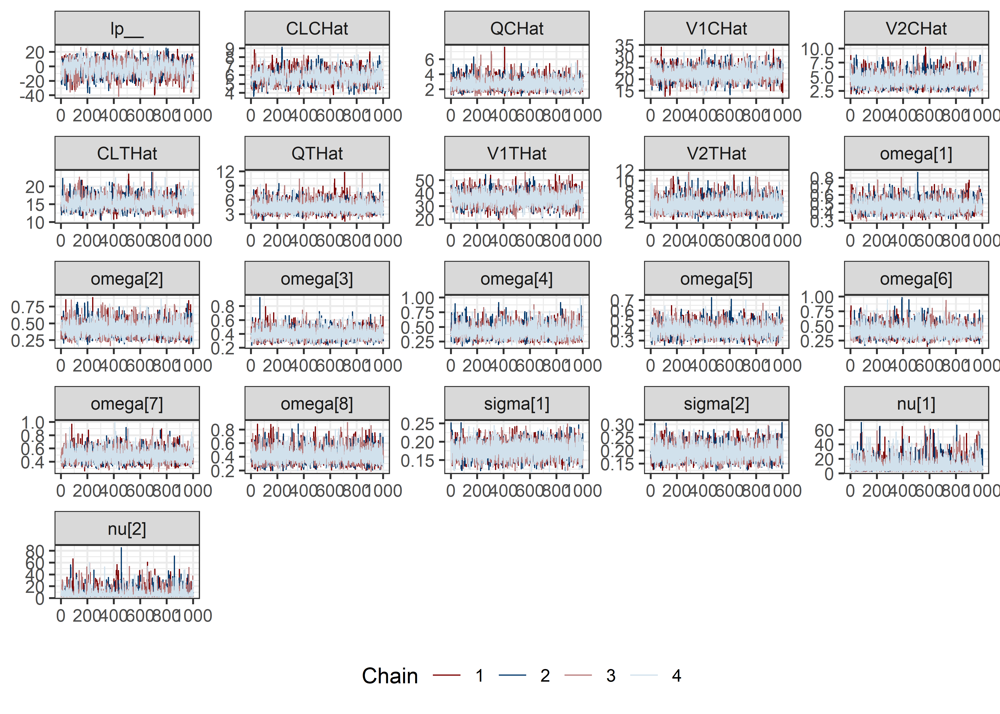</p>
</div>
<details>
<summary>Code</summary>
<div class="sourceCode cell-code" id="cb30"><pre class="sourceCode r code-with-copy"><code class="sourceCode r"><span id="cb30-1"><a href="#cb30-1" aria-hidden="true" tabindex="-1"></a>bayesplot<span class="sc">::</span><span class="fu">mcmc_trace</span>(mod5_res<span class="sc">$</span><span class="fu">draws</span>(pars[<span class="dv">1</span><span class="sc">:</span><span class="dv">9</span>])) <span class="sc">+</span> <span class="fu">legend_move</span>(<span class="st">"bottom"</span>)</span></code><button title="Copy to Clipboard" class="code-copy-button"><i class="bi"></i></button></pre></div>
</details>
<div class="cell-output-display">
<p>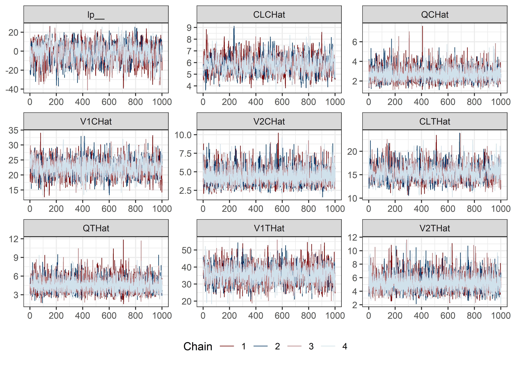</p>
</div>
<details>
<summary>Code</summary>
<div class="sourceCode cell-code" id="cb31"><pre class="sourceCode r code-with-copy"><code class="sourceCode r"><span id="cb31-1"><a href="#cb31-1" aria-hidden="true" tabindex="-1"></a>bayesplot<span class="sc">::</span><span class="fu">mcmc_trace</span>(mod5_res<span class="sc">$</span><span class="fu">draws</span>(pars[<span class="dv">10</span>])) <span class="sc">+</span> <span class="fu">legend_move</span>(<span class="st">"bottom"</span>)</span></code><button title="Copy to Clipboard" class="code-copy-button"><i class="bi"></i></button></pre></div>
</details>
<div class="cell-output-display">
<p>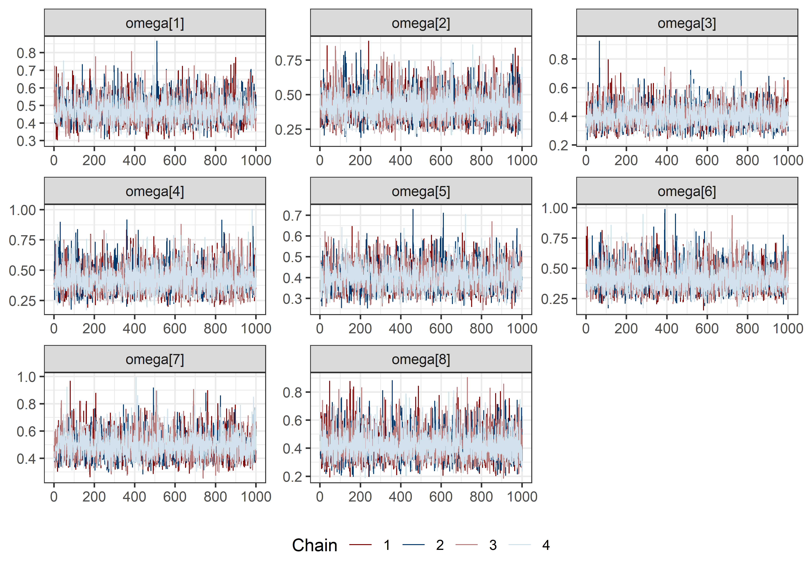</p>
</div>
<details>
<summary>Code</summary>
<div class="sourceCode cell-code" id="cb32"><pre class="sourceCode r code-with-copy"><code class="sourceCode r"><span id="cb32-1"><a href="#cb32-1" aria-hidden="true" tabindex="-1"></a>bayesplot<span class="sc">::</span><span class="fu">mcmc_trace</span>(mod5_res<span class="sc">$</span><span class="fu">draws</span>(pars[<span class="dv">11</span><span class="sc">:</span><span class="dv">12</span>])) <span class="sc">+</span> <span class="fu">legend_move</span>(<span class="st">"bottom"</span>)</span></code><button title="Copy to Clipboard" class="code-copy-button"><i class="bi"></i></button></pre></div>
</details>
<div class="cell-output-display">
<p>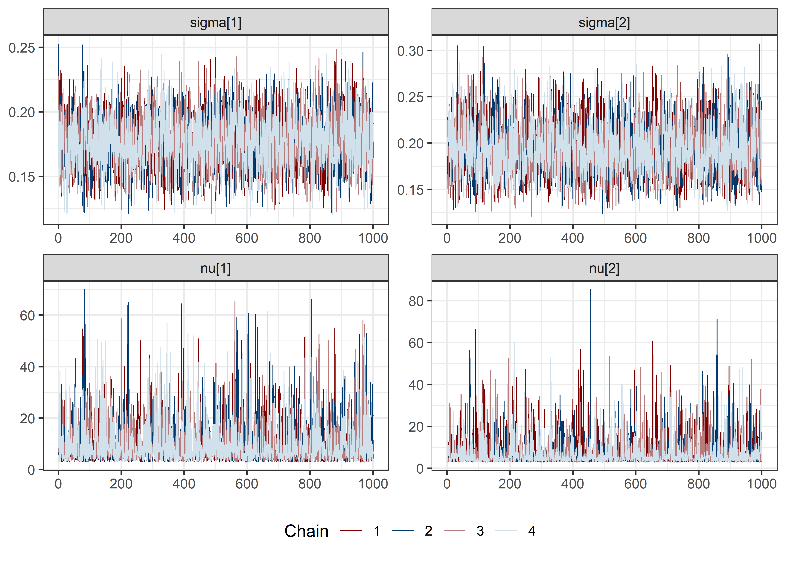</p>
</div>
<details>
<summary>Code</summary>
<div class="sourceCode cell-code" id="cb33"><pre class="sourceCode r code-with-copy"><code class="sourceCode r"><span id="cb33-1"><a href="#cb33-1" aria-hidden="true" tabindex="-1"></a>bayesplot<span class="sc">::</span><span class="fu">mcmc_dens_overlay</span>(mod5_res<span class="sc">$</span><span class="fu">draws</span>(pars)) <span class="sc">+</span> <span class="fu">legend_move</span>(<span class="st">"bottom"</span>)</span></code><button title="Copy to Clipboard" class="code-copy-button"><i class="bi"></i></button></pre></div>
</details>
<div class="cell-output-display">
<p>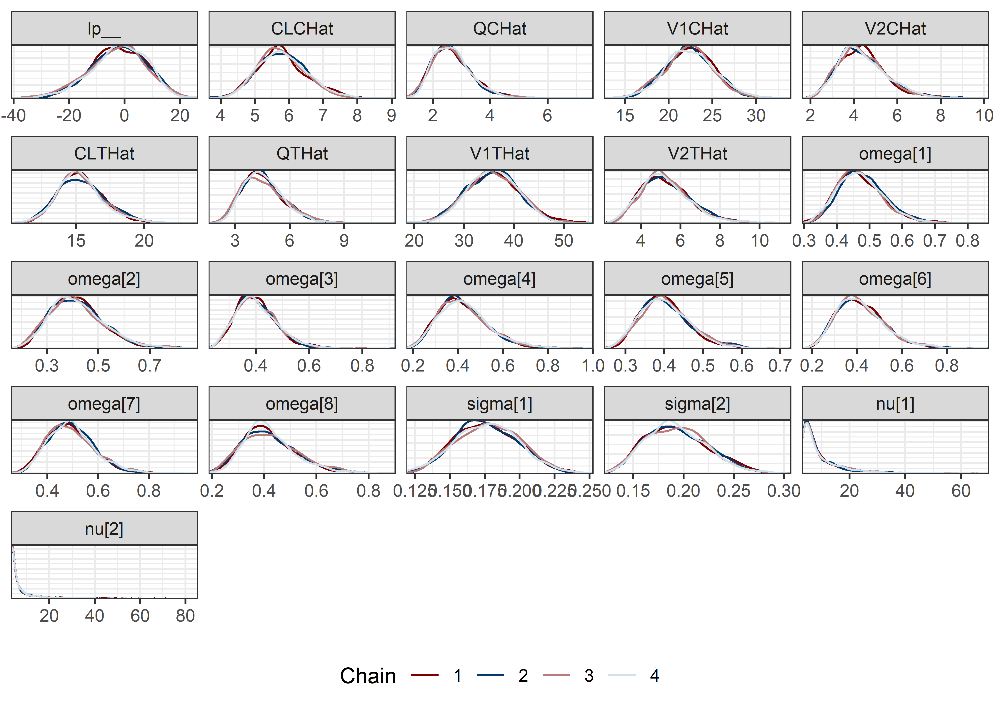</p>
</div>
<details>
<summary>Code</summary>
<div class="sourceCode cell-code" id="cb34"><pre class="sourceCode r code-with-copy"><code class="sourceCode r"><span id="cb34-1"><a href="#cb34-1" aria-hidden="true" tabindex="-1"></a>bayesplot<span class="sc">::</span><span class="fu">mcmc_dens_overlay</span>(mod5_res<span class="sc">$</span><span class="fu">draws</span>(pars[<span class="dv">1</span><span class="sc">:</span><span class="dv">9</span>])) <span class="sc">+</span> <span class="fu">legend_move</span>(<span class="st">"bottom"</span>)</span></code><button title="Copy to Clipboard" class="code-copy-button"><i class="bi"></i></button></pre></div>
</details>
<div class="cell-output-display">
<p>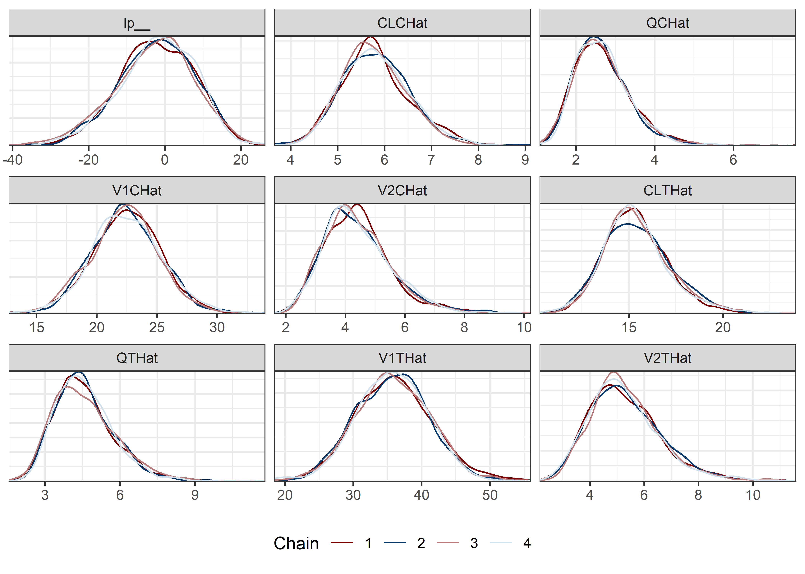</p>
</div>
<details>
<summary>Code</summary>
<div class="sourceCode cell-code" id="cb35"><pre class="sourceCode r code-with-copy"><code class="sourceCode r"><span id="cb35-1"><a href="#cb35-1" aria-hidden="true" tabindex="-1"></a>bayesplot<span class="sc">::</span><span class="fu">mcmc_dens_overlay</span>(mod5_res<span class="sc">$</span><span class="fu">draws</span>(pars[<span class="dv">10</span>])) <span class="sc">+</span> <span class="fu">legend_move</span>(<span class="st">"bottom"</span>)</span></code><button title="Copy to Clipboard" class="code-copy-button"><i class="bi"></i></button></pre></div>
</details>
<div class="cell-output-display">
<p>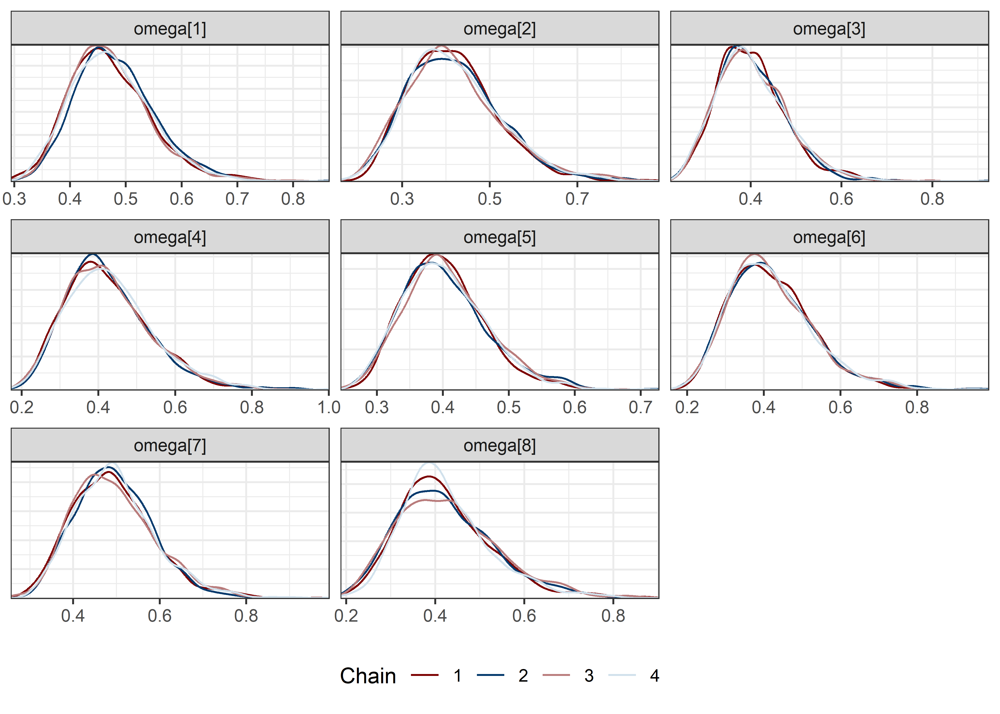</p>
</div>
<details>
<summary>Code</summary>
<div class="sourceCode cell-code" id="cb36"><pre class="sourceCode r code-with-copy"><code class="sourceCode r"><span id="cb36-1"><a href="#cb36-1" aria-hidden="true" tabindex="-1"></a>bayesplot<span class="sc">::</span><span class="fu">mcmc_dens_overlay</span>(mod5_res<span class="sc">$</span><span class="fu">draws</span>(pars[<span class="dv">11</span><span class="sc">:</span><span class="dv">12</span>])) <span class="sc">+</span> <span class="fu">legend_move</span>(<span class="st">"bottom"</span>)</span></code><button title="Copy to Clipboard" class="code-copy-button"><i class="bi"></i></button></pre></div>
</details>
<div class="cell-output-display">
<p>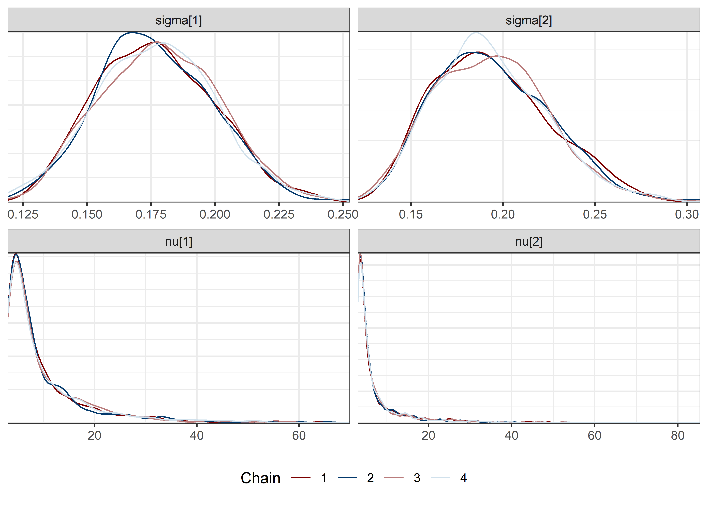</p>
</div>
<details>
<summary>Code</summary>
<div class="sourceCode cell-code" id="cb37"><pre class="sourceCode r code-with-copy"><code class="sourceCode r"><span id="cb37-1"><a href="#cb37-1" aria-hidden="true" tabindex="-1"></a>bayesplot<span class="sc">::</span><span class="fu">mcmc_trace_highlight</span>(mod5_res<span class="sc">$</span><span class="fu">draws</span>(pars)) <span class="sc">+</span> <span class="fu">legend_move</span>(<span class="st">"bottom"</span>)</span></code><button title="Copy to Clipboard" class="code-copy-button"><i class="bi"></i></button></pre></div>
</details>
<div class="cell-output-display">
<p>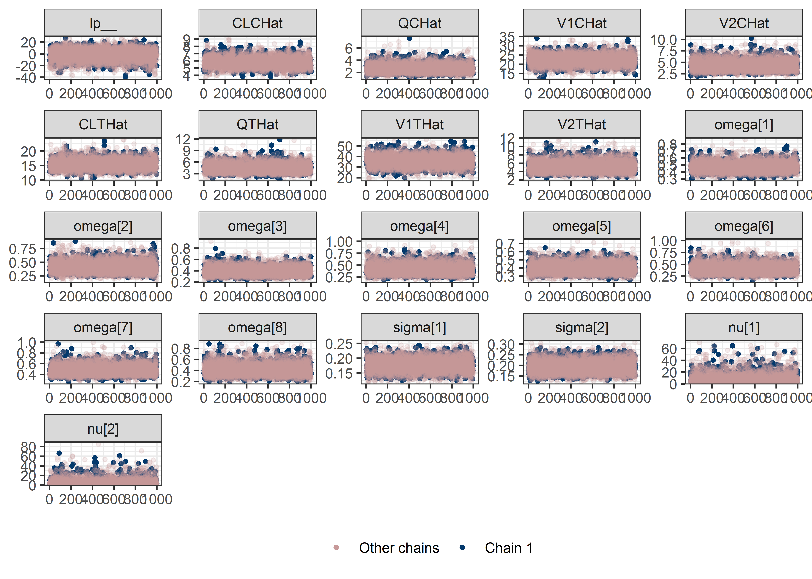</p>
</div>
<details>
<summary>Code</summary>
<div class="sourceCode cell-code" id="cb38"><pre class="sourceCode r code-with-copy"><code class="sourceCode r"><span id="cb38-1"><a href="#cb38-1" aria-hidden="true" tabindex="-1"></a>bayesplot<span class="sc">::</span><span class="fu">mcmc_trace_highlight</span>(mod5_res<span class="sc">$</span><span class="fu">draws</span>(pars[<span class="dv">1</span><span class="sc">:</span><span class="dv">9</span>])) <span class="sc">+</span> <span class="fu">legend_move</span>(<span class="st">"bottom"</span>)</span></code><button title="Copy to Clipboard" class="code-copy-button"><i class="bi"></i></button></pre></div>
</details>
<div class="cell-output-display">
<p>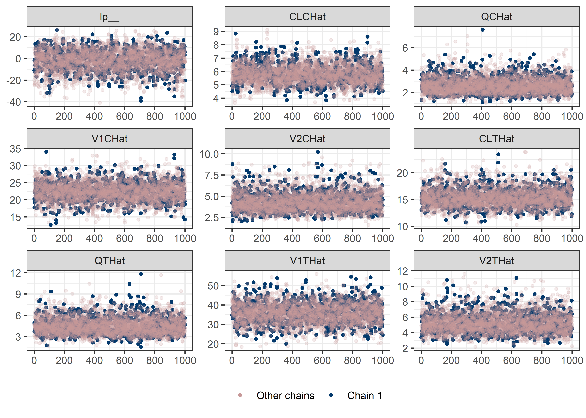</p>
</div>
<details>
<summary>Code</summary>
<div class="sourceCode cell-code" id="cb39"><pre class="sourceCode r code-with-copy"><code class="sourceCode r"><span id="cb39-1"><a href="#cb39-1" aria-hidden="true" tabindex="-1"></a>bayesplot<span class="sc">::</span><span class="fu">mcmc_trace_highlight</span>(mod5_res<span class="sc">$</span><span class="fu">draws</span>(pars[<span class="dv">10</span>])) <span class="sc">+</span> <span class="fu">legend_move</span>(<span class="st">"bottom"</span>)</span></code><button title="Copy to Clipboard" class="code-copy-button"><i class="bi"></i></button></pre></div>
</details>
<div class="cell-output-display">
<p>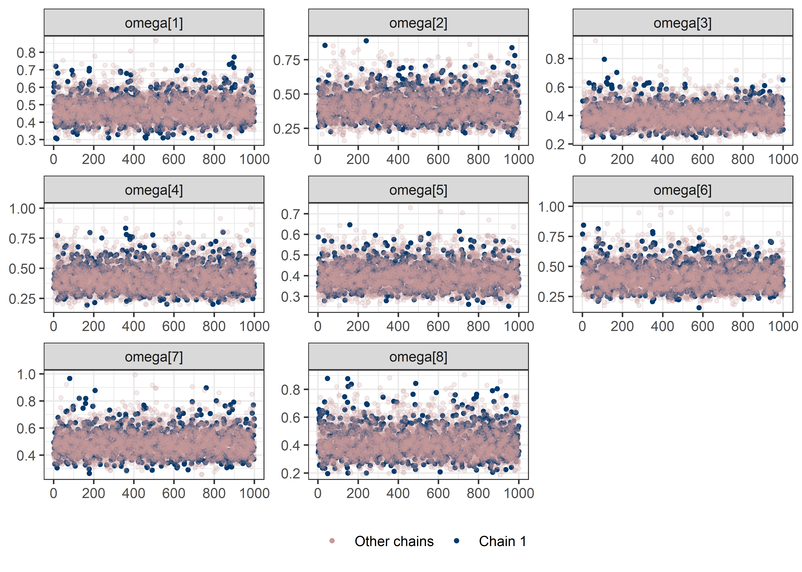</p>
</div>
<details>
<summary>Code</summary>
<div class="sourceCode cell-code" id="cb40"><pre class="sourceCode r code-with-copy"><code class="sourceCode r"><span id="cb40-1"><a href="#cb40-1" aria-hidden="true" tabindex="-1"></a>bayesplot<span class="sc">::</span><span class="fu">mcmc_trace_highlight</span>(mod5_res<span class="sc">$</span><span class="fu">draws</span>(pars[<span class="dv">11</span><span class="sc">:</span><span class="dv">12</span>])) <span class="sc">+</span> <span class="fu">legend_move</span>(<span class="st">"bottom"</span>)</span></code><button title="Copy to Clipboard" class="code-copy-button"><i class="bi"></i></button></pre></div>
</details>
<div class="cell-output-display">
<p>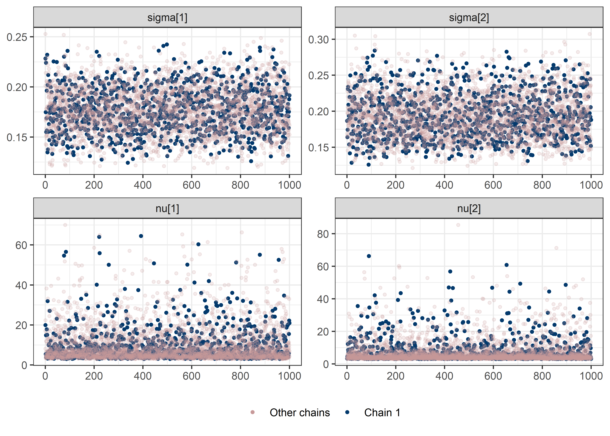</p>
</div>
<details>
<summary>Code</summary>
<div class="sourceCode cell-code" id="cb41"><pre class="sourceCode r code-with-copy"><code class="sourceCode r"><span id="cb41-1"><a href="#cb41-1" aria-hidden="true" tabindex="-1"></a>bayesplot<span class="sc">::</span><span class="fu">mcmc_rank_overlay</span>(mod5_res<span class="sc">$</span><span class="fu">draws</span>(pars)) <span class="sc">+</span> <span class="fu">legend_move</span>(<span class="st">"bottom"</span>)</span></code><button title="Copy to Clipboard" class="code-copy-button"><i class="bi"></i></button></pre></div>
</details>
<div class="cell-output-display">
<p>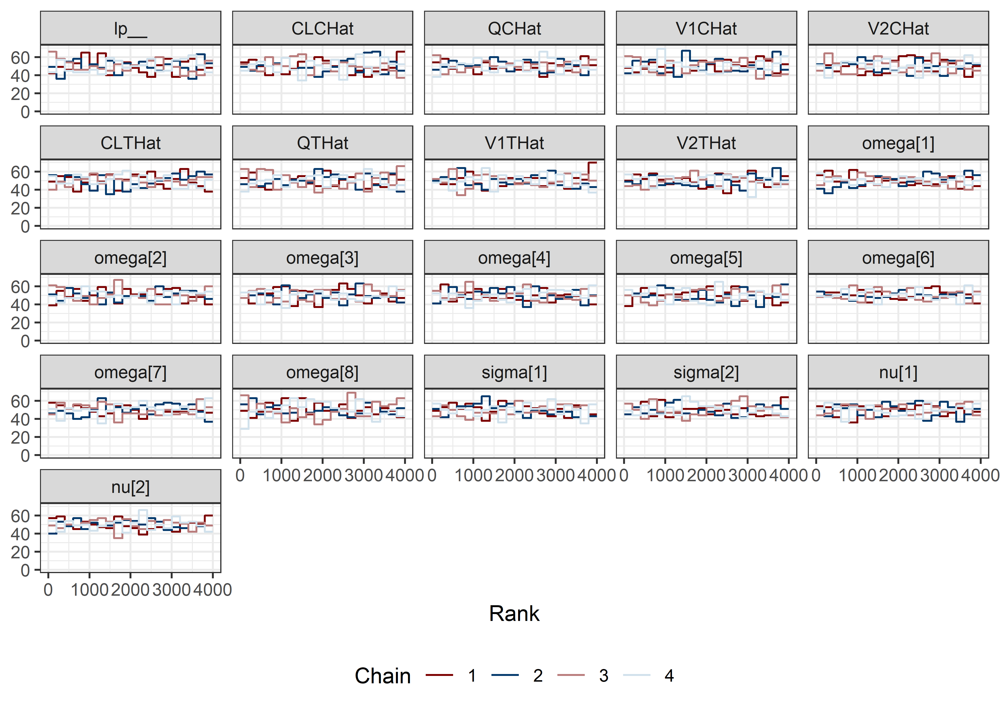</p>
</div>
<details>
<summary>Code</summary>
<div class="sourceCode cell-code" id="cb42"><pre class="sourceCode r code-with-copy"><code class="sourceCode r"><span id="cb42-1"><a href="#cb42-1" aria-hidden="true" tabindex="-1"></a>bayesplot<span class="sc">::</span><span class="fu">mcmc_rank_overlay</span>(mod5_res<span class="sc">$</span><span class="fu">draws</span>(pars[<span class="dv">1</span><span class="sc">:</span><span class="dv">9</span>])) <span class="sc">+</span> <span class="fu">legend_move</span>(<span class="st">"bottom"</span>)</span></code><button title="Copy to Clipboard" class="code-copy-button"><i class="bi"></i></button></pre></div>
</details>
<div class="cell-output-display">
<p>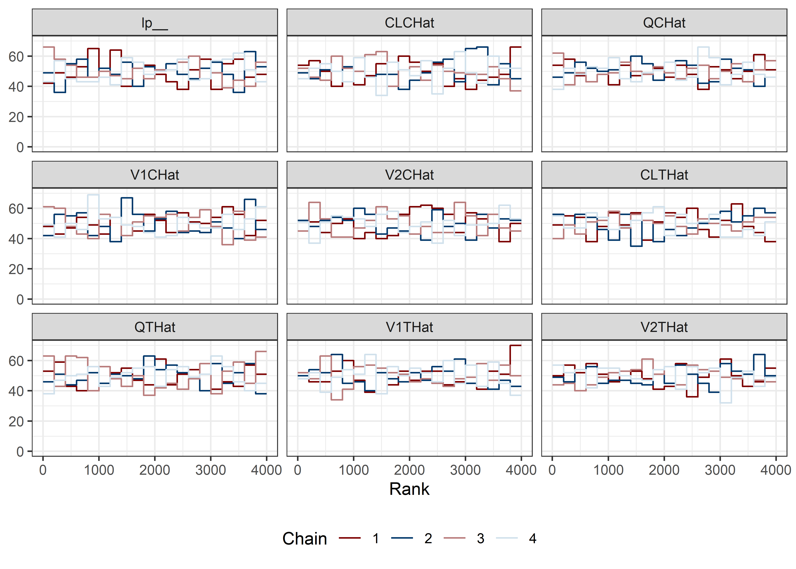</p>
</div>
<details>
<summary>Code</summary>
<div class="sourceCode cell-code" id="cb43"><pre class="sourceCode r code-with-copy"><code class="sourceCode r"><span id="cb43-1"><a href="#cb43-1" aria-hidden="true" tabindex="-1"></a>bayesplot<span class="sc">::</span><span class="fu">mcmc_rank_overlay</span>(mod5_res<span class="sc">$</span><span class="fu">draws</span>(pars[<span class="dv">10</span>])) <span class="sc">+</span> <span class="fu">legend_move</span>(<span class="st">"bottom"</span>)</span></code><button title="Copy to Clipboard" class="code-copy-button"><i class="bi"></i></button></pre></div>
</details>
<div class="cell-output-display">
<p>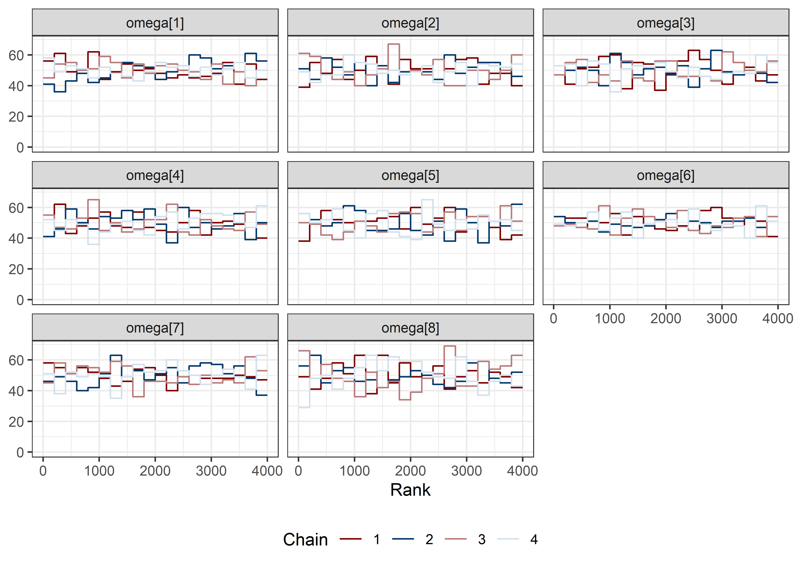</p>
</div>
<details>
<summary>Code</summary>
<div class="sourceCode cell-code" id="cb44"><pre class="sourceCode r code-with-copy"><code class="sourceCode r"><span id="cb44-1"><a href="#cb44-1" aria-hidden="true" tabindex="-1"></a>bayesplot<span class="sc">::</span><span class="fu">mcmc_rank_overlay</span>(mod5_res<span class="sc">$</span><span class="fu">draws</span>(pars[<span class="dv">11</span><span class="sc">:</span><span class="dv">12</span>])) <span class="sc">+</span> <span class="fu">legend_move</span>(<span class="st">"bottom"</span>)</span></code><button title="Copy to Clipboard" class="code-copy-button"><i class="bi"></i></button></pre></div>
</details>
<div class="cell-output-display">
<p>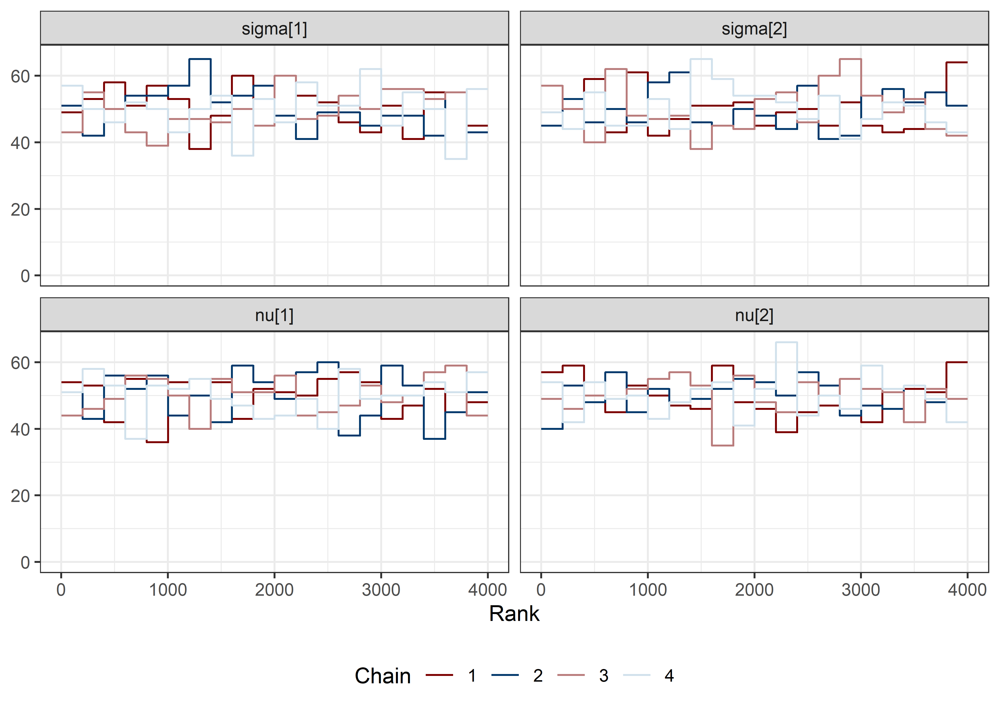</p>
</div>
<details>
<summary>Code</summary>
<div class="sourceCode cell-code" id="cb45"><pre class="sourceCode r code-with-copy"><code class="sourceCode r"><span id="cb45-1"><a href="#cb45-1" aria-hidden="true" tabindex="-1"></a>plot_title <span class="ot">&lt;-</span> <span class="fu">ggtitle</span>(<span class="st">"Posterior distributions"</span>,</span>
<span id="cb45-2"><a href="#cb45-2" aria-hidden="true" tabindex="-1"></a>                      <span class="st">"with medians and 80% intervals"</span>)</span>
<span id="cb45-3"><a href="#cb45-3" aria-hidden="true" tabindex="-1"></a></span>
<span id="cb45-4"><a href="#cb45-4" aria-hidden="true" tabindex="-1"></a><span class="co"># bayesplot::mcmc_areas(mod5_res$draws(pars[1]),prob = 0.8) + plot_title + legend_move("bottom")</span></span>
<span id="cb45-5"><a href="#cb45-5" aria-hidden="true" tabindex="-1"></a><span class="co"># bayesplot::mcmc_areas(mod5_res$draws(pars[2:5]),prob = 0.8) + plot_title + legend_move("bottom")</span></span>
<span id="cb45-6"><a href="#cb45-6" aria-hidden="true" tabindex="-1"></a><span class="co"># bayesplot::mcmc_areas(mod5_res$draws(pars[6:9]),prob = 0.8) + plot_title + legend_move("bottom")</span></span>
<span id="cb45-7"><a href="#cb45-7" aria-hidden="true" tabindex="-1"></a><span class="co"># bayesplot::mcmc_areas(mod5_res$draws(pars[10]),prob = 0.8) + plot_title + legend_move("bottom")</span></span>
<span id="cb45-8"><a href="#cb45-8" aria-hidden="true" tabindex="-1"></a><span class="co"># bayesplot::mcmc_areas(mod5_res$draws(pars[11]),prob = 0.8) + plot_title + legend_move("bottom")</span></span>
<span id="cb45-9"><a href="#cb45-9" aria-hidden="true" tabindex="-1"></a><span class="co"># bayesplot::mcmc_areas(mod5_res$draws(pars[12]),prob = 0.8) + plot_title + legend_move("bottom")</span></span></code><button title="Copy to Clipboard" class="code-copy-button"><i class="bi"></i></button></pre></div>
</details>
</div>
<div class="cell" data-hash="ceftaz-analysis-bayes_stan_sensitivity_cache/html/mcm areas_cc1caaab2a4547d56c92a28026f93e27">
<details>
<summary>Code</summary>
<div class="sourceCode cell-code" id="cb46"><pre class="sourceCode r code-with-copy"><code class="sourceCode r"><span id="cb46-1"><a href="#cb46-1" aria-hidden="true" tabindex="-1"></a>plot_title <span class="ot">&lt;-</span> <span class="fu">ggtitle</span>(<span class="st">"Posterior distributions"</span>,</span>
<span id="cb46-2"><a href="#cb46-2" aria-hidden="true" tabindex="-1"></a>                      <span class="st">"with medians and 80% intervals"</span>)</span>
<span id="cb46-3"><a href="#cb46-3" aria-hidden="true" tabindex="-1"></a></span>
<span id="cb46-4"><a href="#cb46-4" aria-hidden="true" tabindex="-1"></a>bayesplot<span class="sc">::</span><span class="fu">mcmc_areas</span>(mod5_res<span class="sc">$</span><span class="fu">draws</span>(pars[<span class="dv">1</span>]),<span class="at">prob =</span> <span class="fl">0.8</span>) <span class="sc">+</span> plot_title <span class="sc">+</span> <span class="fu">legend_move</span>(<span class="st">"bottom"</span>) <span class="sc">+</span> <span class="fu">scale_y_discrete</span>(<span class="at">labels =</span> <span class="fu">c</span>(<span class="st">"lp__"</span> <span class="ot">=</span> <span class="fu">expression</span>(lp)))</span></code><button title="Copy to Clipboard" class="code-copy-button"><i class="bi"></i></button></pre></div>
</details>
<div class="cell-output-display">
<p></p>
</div>
<details>
<summary>Code</summary>
<div class="sourceCode cell-code" id="cb47"><pre class="sourceCode r code-with-copy"><code class="sourceCode r"><span id="cb47-1"><a href="#cb47-1" aria-hidden="true" tabindex="-1"></a>bayesplot<span class="sc">::</span><span class="fu">mcmc_areas</span>(mod5_res<span class="sc">$</span><span class="fu">draws</span>(pars[<span class="dv">2</span><span class="sc">:</span><span class="dv">5</span>]),<span class="at">prob =</span> <span class="fl">0.8</span>) <span class="sc">+</span> plot_title <span class="sc">+</span> <span class="fu">legend_move</span>(<span class="st">"bottom"</span>) <span class="sc">+</span></span>
<span id="cb47-2"><a href="#cb47-2" aria-hidden="true" tabindex="-1"></a>  <span class="fu">scale_y_discrete</span>(<span class="at">labels =</span> <span class="fu">c</span>(<span class="st">"CLCHat"</span> <span class="ot">=</span> <span class="fu">expression</span>(theta[CLC]), </span>
<span id="cb47-3"><a href="#cb47-3" aria-hidden="true" tabindex="-1"></a>                              <span class="st">"QCHat"</span> <span class="ot">=</span> <span class="fu">expression</span>(theta[QC]),</span>
<span id="cb47-4"><a href="#cb47-4" aria-hidden="true" tabindex="-1"></a>                              <span class="st">"V1CHat"</span> <span class="ot">=</span> <span class="fu">expression</span>(theta[V1C]),</span>
<span id="cb47-5"><a href="#cb47-5" aria-hidden="true" tabindex="-1"></a>                              <span class="st">"V2CHat"</span> <span class="ot">=</span> <span class="fu">expression</span>(theta[V2C])),</span>
<span id="cb47-6"><a href="#cb47-6" aria-hidden="true" tabindex="-1"></a>                   <span class="at">limits =</span> <span class="fu">t</span>(<span class="fu">rev</span>(<span class="fu">c</span>(<span class="st">"CLCHat"</span>, <span class="st">"QCHat"</span>, <span class="st">"V1CHat"</span>,  <span class="st">"V2CHat"</span> ))))</span></code><button title="Copy to Clipboard" class="code-copy-button"><i class="bi"></i></button></pre></div>
</details>
<div class="cell-output-display">
<p></p>
</div>
<details>
<summary>Code</summary>
<div class="sourceCode cell-code" id="cb48"><pre class="sourceCode r code-with-copy"><code class="sourceCode r"><span id="cb48-1"><a href="#cb48-1" aria-hidden="true" tabindex="-1"></a>bayesplot<span class="sc">::</span><span class="fu">mcmc_areas</span>(mod5_res<span class="sc">$</span><span class="fu">draws</span>(pars[<span class="dv">6</span><span class="sc">:</span><span class="dv">9</span>]),<span class="at">prob =</span> <span class="fl">0.8</span>) <span class="sc">+</span> plot_title <span class="sc">+</span> <span class="fu">legend_move</span>(<span class="st">"bottom"</span>) <span class="sc">+</span></span>
<span id="cb48-2"><a href="#cb48-2" aria-hidden="true" tabindex="-1"></a>  <span class="fu">scale_y_discrete</span>(<span class="at">labels =</span> <span class="fu">c</span>(<span class="st">"CLTHat"</span> <span class="ot">=</span> <span class="fu">expression</span>(theta[CLT]),</span>
<span id="cb48-3"><a href="#cb48-3" aria-hidden="true" tabindex="-1"></a>                              <span class="st">"QTHat"</span> <span class="ot">=</span> <span class="fu">expression</span>(theta[QT]),</span>
<span id="cb48-4"><a href="#cb48-4" aria-hidden="true" tabindex="-1"></a>                              <span class="st">"V1THat"</span> <span class="ot">=</span> <span class="fu">expression</span>(theta[V1T]),</span>
<span id="cb48-5"><a href="#cb48-5" aria-hidden="true" tabindex="-1"></a>                              <span class="st">"V2THat"</span> <span class="ot">=</span> <span class="fu">expression</span>(theta[V2T])),</span>
<span id="cb48-6"><a href="#cb48-6" aria-hidden="true" tabindex="-1"></a>                   <span class="at">limits =</span> <span class="fu">t</span>(<span class="fu">rev</span>(<span class="fu">c</span>(<span class="st">"CLTHat"</span>, <span class="st">"QTHat"</span>, <span class="st">"V1THat"</span>,  <span class="st">"V2THat"</span> ))))</span></code><button title="Copy to Clipboard" class="code-copy-button"><i class="bi"></i></button></pre></div>
</details>
<div class="cell-output-display">
<p></p>
</div>
<details>
<summary>Code</summary>
<div class="sourceCode cell-code" id="cb49"><pre class="sourceCode r code-with-copy"><code class="sourceCode r"><span id="cb49-1"><a href="#cb49-1" aria-hidden="true" tabindex="-1"></a>bayesplot<span class="sc">::</span><span class="fu">mcmc_areas</span>(mod5_res<span class="sc">$</span><span class="fu">draws</span>(pars[<span class="dv">10</span>]),<span class="at">prob =</span> <span class="fl">0.8</span>) <span class="sc">+</span> plot_title <span class="sc">+</span> <span class="fu">legend_move</span>(<span class="st">"bottom"</span>) <span class="sc">+</span></span>
<span id="cb49-2"><a href="#cb49-2" aria-hidden="true" tabindex="-1"></a>  <span class="fu">scale_y_discrete</span>(<span class="at">labels =</span> <span class="fu">c</span>(<span class="st">"omega[1]"</span> <span class="ot">=</span> <span class="fu">expression</span>(omega[CLC]), </span>
<span id="cb49-3"><a href="#cb49-3" aria-hidden="true" tabindex="-1"></a>                              <span class="st">"omega[2]"</span> <span class="ot">=</span> <span class="fu">expression</span>(omega[QC]),</span>
<span id="cb49-4"><a href="#cb49-4" aria-hidden="true" tabindex="-1"></a>                              <span class="st">"omega[3]"</span> <span class="ot">=</span> <span class="fu">expression</span>(omega[V1C]),</span>
<span id="cb49-5"><a href="#cb49-5" aria-hidden="true" tabindex="-1"></a>                              <span class="st">"omega[4]"</span> <span class="ot">=</span> <span class="fu">expression</span>(omega[V2C]),</span>
<span id="cb49-6"><a href="#cb49-6" aria-hidden="true" tabindex="-1"></a>                              <span class="st">"omega[5]"</span> <span class="ot">=</span> <span class="fu">expression</span>(omega[CLT]),</span>
<span id="cb49-7"><a href="#cb49-7" aria-hidden="true" tabindex="-1"></a>                              <span class="st">"omega[6]"</span> <span class="ot">=</span> <span class="fu">expression</span>(omega[QT]),</span>
<span id="cb49-8"><a href="#cb49-8" aria-hidden="true" tabindex="-1"></a>                              <span class="st">"omega[7]"</span> <span class="ot">=</span> <span class="fu">expression</span>(omega[V1T]),</span>
<span id="cb49-9"><a href="#cb49-9" aria-hidden="true" tabindex="-1"></a>                              <span class="st">"omega[8]"</span> <span class="ot">=</span> <span class="fu">expression</span>(omega[V2T])), </span>
<span id="cb49-10"><a href="#cb49-10" aria-hidden="true" tabindex="-1"></a>                   <span class="at">limits =</span> <span class="fu">t</span>(<span class="fu">rev</span>(<span class="fu">c</span>(<span class="st">"omega[1]"</span>,<span class="st">"omega[2]"</span>,<span class="st">"omega[3]"</span>,<span class="st">"omega[4]"</span>,<span class="st">"omega[5]"</span>,<span class="st">"omega[6]"</span>,<span class="st">"omega[7]"</span>,<span class="st">"omega[8]"</span>))))</span></code><button title="Copy to Clipboard" class="code-copy-button"><i class="bi"></i></button></pre></div>
</details>
<div class="cell-output-display">
<p></p>
</div>
<details>
<summary>Code</summary>
<div class="sourceCode cell-code" id="cb50"><pre class="sourceCode r code-with-copy"><code class="sourceCode r"><span id="cb50-1"><a href="#cb50-1" aria-hidden="true" tabindex="-1"></a>bayesplot<span class="sc">::</span><span class="fu">mcmc_areas</span>(mod5_res<span class="sc">$</span><span class="fu">draws</span>(pars[<span class="dv">11</span>]),<span class="at">prob =</span> <span class="fl">0.8</span>) <span class="sc">+</span> plot_title <span class="sc">+</span> <span class="fu">legend_move</span>(<span class="st">"bottom"</span>) <span class="sc">+</span> </span>
<span id="cb50-2"><a href="#cb50-2" aria-hidden="true" tabindex="-1"></a>  <span class="fu">scale_y_discrete</span>(<span class="at">labels =</span> <span class="fu">c</span>(<span class="st">"sigma[1]"</span> <span class="ot">=</span> <span class="fu">expression</span>(sigma[C]),</span>
<span id="cb50-3"><a href="#cb50-3" aria-hidden="true" tabindex="-1"></a>                              <span class="st">"sigma[2]"</span> <span class="ot">=</span> <span class="fu">expression</span>(sigma[T])),</span>
<span id="cb50-4"><a href="#cb50-4" aria-hidden="true" tabindex="-1"></a>                    <span class="at">limits =</span> <span class="fu">rev</span>(<span class="fu">c</span>(<span class="st">"sigma[1]"</span>, <span class="st">"sigma[2]"</span>)))</span></code><button title="Copy to Clipboard" class="code-copy-button"><i class="bi"></i></button></pre></div>
</details>
<div class="cell-output-display">
<p></p>
</div>
<details>
<summary>Code</summary>
<div class="sourceCode cell-code" id="cb51"><pre class="sourceCode r code-with-copy"><code class="sourceCode r"><span id="cb51-1"><a href="#cb51-1" aria-hidden="true" tabindex="-1"></a>bayesplot<span class="sc">::</span><span class="fu">mcmc_areas</span>(mod5_res<span class="sc">$</span><span class="fu">draws</span>(pars[<span class="dv">12</span>]),<span class="at">prob =</span> <span class="fl">0.8</span>) <span class="sc">+</span> plot_title <span class="sc">+</span> <span class="fu">legend_move</span>(<span class="st">"bottom"</span>) <span class="sc">+</span></span>
<span id="cb51-2"><a href="#cb51-2" aria-hidden="true" tabindex="-1"></a>  <span class="fu">scale_y_discrete</span>(<span class="at">labels =</span> <span class="fu">c</span>(<span class="st">"nu[1]"</span> <span class="ot">=</span> <span class="fu">expression</span>(nu[C]),</span>
<span id="cb51-3"><a href="#cb51-3" aria-hidden="true" tabindex="-1"></a>                              <span class="st">"nu[2]"</span> <span class="ot">=</span> <span class="fu">expression</span>(nu[T])),</span>
<span id="cb51-4"><a href="#cb51-4" aria-hidden="true" tabindex="-1"></a>                   <span class="at">limits =</span> <span class="fu">rev</span>(<span class="fu">c</span>(<span class="st">"nu[1]"</span>, <span class="st">"nu[2]"</span>)))</span></code><button title="Copy to Clipboard" class="code-copy-button"><i class="bi"></i></button></pre></div>
</details>
<div class="cell-output-display">
<p></p>
</div>
</div>
</section>
<section id="shrinkage" class="level2">
<h2 class="anchored" data-anchor-id="shrinkage">Shrinkage</h2>
<div class="cell" data-hash="ceftaz-analysis-bayes_stan_sensitivity_cache/html/shrinkage_40f16e313865a467291fa70f519adfc2">
<details>
<summary>Code</summary>
<div class="sourceCode cell-code" id="cb52"><pre class="sourceCode r code-with-copy"><code class="sourceCode r"><span id="cb52-1"><a href="#cb52-1" aria-hidden="true" tabindex="-1"></a>etas <span class="ot">&lt;-</span>  posterior<span class="sc">::</span><span class="fu">as_draws_df</span>(mod5_res<span class="sc">$</span><span class="fu">draws</span>(<span class="st">"etaM"</span>))<span class="sc">%&gt;%</span></span>
<span id="cb52-2"><a href="#cb52-2" aria-hidden="true" tabindex="-1"></a>  <span class="fu">mutate</span>(<span class="fu">across</span>(<span class="fu">starts_with</span>(<span class="st">"eta"</span>), <span class="sc">~</span><span class="fu">log</span>(.x)))</span>
<span id="cb52-3"><a href="#cb52-3" aria-hidden="true" tabindex="-1"></a><span class="co">#errors &lt;-  posterior::as_draws_df(mod_to_plot$draws("errors"))</span></span>
<span id="cb52-4"><a href="#cb52-4" aria-hidden="true" tabindex="-1"></a></span>
<span id="cb52-5"><a href="#cb52-5" aria-hidden="true" tabindex="-1"></a>bbr.bayes<span class="sc">::</span><span class="fu">shrinkage</span>(etas,<span class="st">"etaM"</span>,<span class="at">group_idx =</span> <span class="dv">1</span>, <span class="at">use_sd =</span> <span class="cn">TRUE</span>)</span></code><button title="Copy to Clipboard" class="code-copy-button"><i class="bi"></i></button></pre></div>
</details>
<div class="cell-output cell-output-stdout">
<pre><code>[1]  1.299851 90.519707  9.543978 76.489404  2.064111 96.795590  6.566975
[8] 78.153089</code></pre>
</div>
<details>
<summary>Code</summary>
<div class="sourceCode cell-code" id="cb54"><pre class="sourceCode r code-with-copy"><code class="sourceCode r"><span id="cb54-1"><a href="#cb54-1" aria-hidden="true" tabindex="-1"></a><span class="co">#bbr.bayes::shrinkage(errors,"errors", use_sd = TRUE)</span></span></code><button title="Copy to Clipboard" class="code-copy-button"><i class="bi"></i></button></pre></div>
</details>
</div>
</section>
<section id="etas-vs.-covariates" class="level2">
<h2 class="anchored" data-anchor-id="etas-vs.-covariates">ETAS vs.&nbsp;covariates</h2>
<div class="cell" data-hash="ceftaz-analysis-bayes_stan_sensitivity_cache/html/covariets vs etas_5dab878bbbf643a28801c91397768111">
<details>
<summary>Code</summary>
<div class="sourceCode cell-code" id="cb55"><pre class="sourceCode r code-with-copy"><code class="sourceCode r"><span id="cb55-1"><a href="#cb55-1" aria-hidden="true" tabindex="-1"></a>etaM <span class="ot">&lt;-</span> <span class="fu">extract_etas_fun</span>(mod5_res,xdata)</span>
<span id="cb55-2"><a href="#cb55-2" aria-hidden="true" tabindex="-1"></a></span>
<span id="cb55-3"><a href="#cb55-3" aria-hidden="true" tabindex="-1"></a>model_figures_dir <span class="ot">&lt;-</span> here<span class="sc">::</span><span class="fu">here</span>(<span class="st">"deliv"</span>, <span class="st">"figures"</span>, <span class="st">"BAYES"</span>)</span>
<span id="cb55-4"><a href="#cb55-4" aria-hidden="true" tabindex="-1"></a></span>
<span id="cb55-5"><a href="#cb55-5" aria-hidden="true" tabindex="-1"></a>cont_cov <span class="ot">=</span> <span class="fu">c</span>(<span class="st">"AGE//Age,y"</span>,<span class="st">"BW//Body Weight, kg"</span>)</span>
<span id="cb55-6"><a href="#cb55-6" aria-hidden="true" tabindex="-1"></a>cat_cov <span class="ot">=</span> <span class="fu">c</span>(<span class="st">"SEX//Sex"</span>)</span>
<span id="cb55-7"><a href="#cb55-7" aria-hidden="true" tabindex="-1"></a></span>
<span id="cb55-8"><a href="#cb55-8" aria-hidden="true" tabindex="-1"></a>p1 <span class="ot">&lt;-</span> <span class="fu">map</span>(cont_cov, \(x) <span class="fu">fun_cont_cov</span>(x,etaM))</span>
<span id="cb55-9"><a href="#cb55-9" aria-hidden="true" tabindex="-1"></a>p2 <span class="ot">&lt;-</span> <span class="fu">map</span>(cat_cov, \(x) <span class="fu">fun_cat_cov</span>(x,etaM))</span>
<span id="cb55-10"><a href="#cb55-10" aria-hidden="true" tabindex="-1"></a></span>
<span id="cb55-11"><a href="#cb55-11" aria-hidden="true" tabindex="-1"></a>plots <span class="ot">&lt;-</span> <span class="fu">c</span>(p1, p2)</span>
<span id="cb55-12"><a href="#cb55-12" aria-hidden="true" tabindex="-1"></a>plots</span></code><button title="Copy to Clipboard" class="code-copy-button"><i class="bi"></i></button></pre></div>
</details>
<div class="cell-output cell-output-stdout">
<pre><code>[[1]]</code></pre>
</div>
<div class="cell-output-display">
<p></p>
</div>
<div class="cell-output cell-output-stdout">
<pre><code>
[[2]]</code></pre>
</div>
<div class="cell-output-display">
<p></p>
</div>
<div class="cell-output cell-output-stdout">
<pre><code>
[[3]]</code></pre>
</div>
<div class="cell-output-display">
<p></p>
</div>
<details>
<summary>Code</summary>
<div class="sourceCode cell-code" id="cb59"><pre class="sourceCode r code-with-copy"><code class="sourceCode r"><span id="cb59-1"><a href="#cb59-1" aria-hidden="true" tabindex="-1"></a><span class="fu">map</span>(<span class="dv">1</span><span class="sc">:</span><span class="fu">length</span>(plots), \(x) <span class="fu">ggsave</span>(<span class="at">filename =</span> here<span class="sc">::</span><span class="fu">here</span>(model_figures_dir, </span>
<span id="cb59-2"><a href="#cb59-2" aria-hidden="true" tabindex="-1"></a>                                 glue<span class="sc">::</span><span class="fu">glue</span>(<span class="st">"cov-plots-{x}.png"</span>)),</span>
<span id="cb59-3"><a href="#cb59-3" aria-hidden="true" tabindex="-1"></a>                                 <span class="at">plot =</span> plots[[x]], </span>
<span id="cb59-4"><a href="#cb59-4" aria-hidden="true" tabindex="-1"></a>                                 <span class="at">width=</span><span class="dv">12</span>, <span class="at">height=</span><span class="dv">10</span>, </span>
<span id="cb59-5"><a href="#cb59-5" aria-hidden="true" tabindex="-1"></a>                                 <span class="at">dpi=</span><span class="dv">600</span>, <span class="at">units=</span><span class="st">"cm"</span>))</span></code><button title="Copy to Clipboard" class="code-copy-button"><i class="bi"></i></button></pre></div>
</details>
<div class="cell-output cell-output-stdout">
<pre><code>[[1]]
[1] "C:/Users/pawel/Documents/Rprojects/pkpd-projects/ceftolozane-tazobactam/deliv/figures/BAYES/cov-plots-1.png"

[[2]]
[1] "C:/Users/pawel/Documents/Rprojects/pkpd-projects/ceftolozane-tazobactam/deliv/figures/BAYES/cov-plots-2.png"

[[3]]
[1] "C:/Users/pawel/Documents/Rprojects/pkpd-projects/ceftolozane-tazobactam/deliv/figures/BAYES/cov-plots-3.png"</code></pre>
</div>
</div>
</section>
<section id="eta-correlation" class="level2">
<h2 class="anchored" data-anchor-id="eta-correlation">ETA correlation</h2>
<div class="cell" data-hash="ceftaz-analysis-bayes_stan_sensitivity_cache/html/ETA corr_36a0dc93dd33d73dd47952546ad920b5">
<details>
<summary>Code</summary>
<div class="sourceCode cell-code" id="cb61"><pre class="sourceCode r code-with-copy"><code class="sourceCode r"><span id="cb61-1"><a href="#cb61-1" aria-hidden="true" tabindex="-1"></a>t1 <span class="ot">&lt;-</span> etaM  <span class="sc">%&gt;%</span> </span>
<span id="cb61-2"><a href="#cb61-2" aria-hidden="true" tabindex="-1"></a>  <span class="fu">filter</span>(type <span class="sc">%in%</span> <span class="fu">c</span>(<span class="st">"V1C"</span>, <span class="st">"V1T"</span>)) <span class="sc">%&gt;%</span> </span>
<span id="cb61-3"><a href="#cb61-3" aria-hidden="true" tabindex="-1"></a>  <span class="fu">pivot_wider</span>(<span class="at">values_from =</span> <span class="dv">3</span><span class="sc">:</span><span class="dv">6</span>, <span class="at">names_from =</span> <span class="st">"type"</span>) <span class="sc">%&gt;%</span> </span>
<span id="cb61-4"><a href="#cb61-4" aria-hidden="true" tabindex="-1"></a>  <span class="fu">ggplot</span>() <span class="sc">+</span></span>
<span id="cb61-5"><a href="#cb61-5" aria-hidden="true" tabindex="-1"></a>  <span class="fu">geom_point</span>(<span class="fu">aes</span>(<span class="at">x =</span> medianInd_V1C, <span class="at">y =</span> medianInd_V1T))</span>
<span id="cb61-6"><a href="#cb61-6" aria-hidden="true" tabindex="-1"></a></span>
<span id="cb61-7"><a href="#cb61-7" aria-hidden="true" tabindex="-1"></a></span>
<span id="cb61-8"><a href="#cb61-8" aria-hidden="true" tabindex="-1"></a>t2 <span class="ot">&lt;-</span> etaM  <span class="sc">%&gt;%</span> </span>
<span id="cb61-9"><a href="#cb61-9" aria-hidden="true" tabindex="-1"></a>  <span class="fu">filter</span>(type <span class="sc">%in%</span> <span class="fu">c</span>(<span class="st">"CLC"</span>, <span class="st">"CLT"</span>)) <span class="sc">%&gt;%</span> </span>
<span id="cb61-10"><a href="#cb61-10" aria-hidden="true" tabindex="-1"></a>  <span class="fu">pivot_wider</span>(<span class="at">values_from =</span> <span class="dv">3</span><span class="sc">:</span><span class="dv">6</span>, <span class="at">names_from =</span> <span class="st">"type"</span>) <span class="sc">%&gt;%</span> </span>
<span id="cb61-11"><a href="#cb61-11" aria-hidden="true" tabindex="-1"></a>  <span class="fu">ggplot</span>() <span class="sc">+</span></span>
<span id="cb61-12"><a href="#cb61-12" aria-hidden="true" tabindex="-1"></a>  <span class="fu">geom_point</span>(<span class="fu">aes</span>(<span class="at">x =</span> medianInd_CLC, <span class="at">y =</span> medianInd_CLT))</span>
<span id="cb61-13"><a href="#cb61-13" aria-hidden="true" tabindex="-1"></a></span>
<span id="cb61-14"><a href="#cb61-14" aria-hidden="true" tabindex="-1"></a>t1 <span class="sc">+</span> t2</span></code><button title="Copy to Clipboard" class="code-copy-button"><i class="bi"></i></button></pre></div>
</details>
<div class="cell-output-display">
<p></p>
</div>
<details>
<summary>Code</summary>
<div class="sourceCode cell-code" id="cb62"><pre class="sourceCode r code-with-copy"><code class="sourceCode r"><span id="cb62-1"><a href="#cb62-1" aria-hidden="true" tabindex="-1"></a>etaM  <span class="sc">%&gt;%</span> </span>
<span id="cb62-2"><a href="#cb62-2" aria-hidden="true" tabindex="-1"></a>  <span class="fu">filter</span>(type <span class="sc">%in%</span> <span class="fu">c</span>(<span class="st">"CLC"</span>, <span class="st">"CLT"</span>, <span class="st">"V1C"</span>, <span class="st">"V1T"</span>)) <span class="sc">%&gt;%</span> </span>
<span id="cb62-3"><a href="#cb62-3" aria-hidden="true" tabindex="-1"></a>  <span class="fu">pivot_wider</span>(<span class="at">values_from =</span> <span class="dv">3</span><span class="sc">:</span><span class="dv">6</span>, <span class="at">names_from =</span> <span class="st">"type"</span>) <span class="sc">%&gt;%</span> </span>
<span id="cb62-4"><a href="#cb62-4" aria-hidden="true" tabindex="-1"></a>  <span class="fu">pairs_plot</span>(<span class="fu">c</span>(<span class="st">"medianInd_CLC//CLC"</span>, <span class="st">"medianInd_CLT//CLT"</span>, <span class="st">"medianInd_V1C//V1C"</span>,<span class="st">"medianInd_V1T//V1T"</span>))</span></code><button title="Copy to Clipboard" class="code-copy-button"><i class="bi"></i></button></pre></div>
</details>
<div class="cell-output-display">
<p></p>
</div>
<details>
<summary>Code</summary>
<div class="sourceCode cell-code" id="cb63"><pre class="sourceCode r code-with-copy"><code class="sourceCode r"><span id="cb63-1"><a href="#cb63-1" aria-hidden="true" tabindex="-1"></a>etaM  <span class="sc">%&gt;%</span> </span>
<span id="cb63-2"><a href="#cb63-2" aria-hidden="true" tabindex="-1"></a>  <span class="fu">filter</span>(type <span class="sc">%in%</span> <span class="fu">c</span>(<span class="st">"CLC"</span>, <span class="st">"CLT"</span>, <span class="st">"V1C"</span>, <span class="st">"V1T"</span>, <span class="st">"QC"</span>, <span class="st">"QT"</span>, <span class="st">"V2C"</span>, <span class="st">"V2T"</span>)) <span class="sc">%&gt;%</span> </span>
<span id="cb63-3"><a href="#cb63-3" aria-hidden="true" tabindex="-1"></a>  <span class="fu">pivot_wider</span>(<span class="at">values_from =</span> <span class="dv">3</span><span class="sc">:</span><span class="dv">6</span>, <span class="at">names_from =</span> <span class="st">"type"</span>) <span class="sc">%&gt;%</span> </span>
<span id="cb63-4"><a href="#cb63-4" aria-hidden="true" tabindex="-1"></a>  <span class="fu">pairs_plot</span>(<span class="fu">c</span>(<span class="st">"medianInd_CLC//CLC"</span>, <span class="st">"medianInd_CLT//CLT"</span>, <span class="st">"medianInd_V1C//V1C"</span>,<span class="st">"medianInd_V1T//V1T"</span>, <span class="st">"medianInd_QC//QC"</span>, <span class="st">"medianInd_QT//QT"</span>, <span class="st">"medianInd_V2C//V2C"</span>,<span class="st">"medianInd_V2T//V2T"</span>))</span></code><button title="Copy to Clipboard" class="code-copy-button"><i class="bi"></i></button></pre></div>
</details>
<div class="cell-output-display">
<p></p>
</div>
</div>
</section>
<section id="prior-vs-posterior-params" class="level2">
<h2 class="anchored" data-anchor-id="prior-vs-posterior-params">Prior vs posterior params</h2>
<div class="cell" data-hash="ceftaz-analysis-bayes_stan_sensitivity_cache/html/prior vs posterior_129b569bf1f959dfc184a44ec702dc52">
<details>
<summary>Code</summary>
<div class="sourceCode cell-code" id="cb64"><pre class="sourceCode r code-with-copy"><code class="sourceCode r"><span id="cb64-1"><a href="#cb64-1" aria-hidden="true" tabindex="-1"></a>modx  <span class="ot">&lt;-</span> <span class="fu">read_model</span>(here<span class="sc">::</span><span class="fu">here</span>(model_dir, <span class="st">"6"</span>))</span>
<span id="cb64-2"><a href="#cb64-2" aria-hidden="true" tabindex="-1"></a>mod_to_plot1 <span class="ot">&lt;-</span> <span class="fu">read_fit_model</span>(modx)</span>
<span id="cb64-3"><a href="#cb64-3" aria-hidden="true" tabindex="-1"></a>modx  <span class="ot">&lt;-</span> <span class="fu">read_model</span>(here<span class="sc">::</span><span class="fu">here</span>(model_dir, <span class="st">"5"</span>))</span>
<span id="cb64-4"><a href="#cb64-4" aria-hidden="true" tabindex="-1"></a>mod_to_plot2 <span class="ot">&lt;-</span> <span class="fu">read_fit_model</span>(modx)</span>
<span id="cb64-5"><a href="#cb64-5" aria-hidden="true" tabindex="-1"></a>modx  <span class="ot">&lt;-</span> <span class="fu">read_model</span>(here<span class="sc">::</span><span class="fu">here</span>(model_dir, <span class="st">"5a"</span>))</span>
<span id="cb64-6"><a href="#cb64-6" aria-hidden="true" tabindex="-1"></a>mod_to_plot3 <span class="ot">&lt;-</span> <span class="fu">read_fit_model</span>(modx)</span>
<span id="cb64-7"><a href="#cb64-7" aria-hidden="true" tabindex="-1"></a></span>
<span id="cb64-8"><a href="#cb64-8" aria-hidden="true" tabindex="-1"></a>modx  <span class="ot">&lt;-</span> <span class="fu">read_model</span>(here<span class="sc">::</span><span class="fu">here</span>(model_dir, <span class="st">"6a"</span>))</span>
<span id="cb64-9"><a href="#cb64-9" aria-hidden="true" tabindex="-1"></a>mod_to_plot4 <span class="ot">&lt;-</span> <span class="fu">read_fit_model</span>(modx)</span>
<span id="cb64-10"><a href="#cb64-10" aria-hidden="true" tabindex="-1"></a></span>
<span id="cb64-11"><a href="#cb64-11" aria-hidden="true" tabindex="-1"></a>pars <span class="ot">=</span> <span class="fu">c</span>(<span class="st">"CLCHat"</span>, <span class="st">"QCHat"</span>, <span class="st">"V1CHat"</span>, <span class="st">"V2CHat"</span>, <span class="st">"CLTHat"</span>, <span class="st">"QTHat"</span>, <span class="st">"V1THat"</span>, <span class="st">"V2THat"</span>)</span>
<span id="cb64-12"><a href="#cb64-12" aria-hidden="true" tabindex="-1"></a>p1<span class="ot">=</span>bayesplot<span class="sc">::</span><span class="fu">mcmc_intervals</span>(mod_to_plot1<span class="sc">$</span><span class="fu">draws</span>(pars))</span>
<span id="cb64-13"><a href="#cb64-13" aria-hidden="true" tabindex="-1"></a>p2<span class="ot">=</span>bayesplot<span class="sc">::</span><span class="fu">mcmc_intervals</span>(mod_to_plot2<span class="sc">$</span><span class="fu">draws</span>(pars))</span>
<span id="cb64-14"><a href="#cb64-14" aria-hidden="true" tabindex="-1"></a>p3<span class="ot">=</span>bayesplot<span class="sc">::</span><span class="fu">mcmc_intervals</span>(mod_to_plot3<span class="sc">$</span><span class="fu">draws</span>(pars))</span>
<span id="cb64-15"><a href="#cb64-15" aria-hidden="true" tabindex="-1"></a>p4<span class="ot">=</span>bayesplot<span class="sc">::</span><span class="fu">mcmc_intervals</span>(mod_to_plot4<span class="sc">$</span><span class="fu">draws</span>(pars))</span>
<span id="cb64-16"><a href="#cb64-16" aria-hidden="true" tabindex="-1"></a></span>
<span id="cb64-17"><a href="#cb64-17" aria-hidden="true" tabindex="-1"></a>p1_data <span class="ot">=</span> p1<span class="sc">@</span>data <span class="sc">%&gt;%</span> <span class="fu">mutate</span>(<span class="at">type =</span> <span class="st">"prior (%CV=25%)"</span>)</span>
<span id="cb64-18"><a href="#cb64-18" aria-hidden="true" tabindex="-1"></a>p4_data <span class="ot">=</span> p4<span class="sc">@</span>data <span class="sc">%&gt;%</span> <span class="fu">mutate</span>(<span class="at">type =</span> <span class="st">"prior (%CV=50%)"</span>)</span>
<span id="cb64-19"><a href="#cb64-19" aria-hidden="true" tabindex="-1"></a>p2_data <span class="ot">=</span> p2<span class="sc">@</span>data <span class="sc">%&gt;%</span> <span class="fu">mutate</span>(<span class="at">type =</span> <span class="st">"posterior (%CV=25%)"</span>)</span>
<span id="cb64-20"><a href="#cb64-20" aria-hidden="true" tabindex="-1"></a>p3_data <span class="ot">=</span> p3<span class="sc">@</span>data <span class="sc">%&gt;%</span> <span class="fu">mutate</span>(<span class="at">type =</span> <span class="st">"posterior (%CV=50%)"</span>)</span>
<span id="cb64-21"><a href="#cb64-21" aria-hidden="true" tabindex="-1"></a></span>
<span id="cb64-22"><a href="#cb64-22" aria-hidden="true" tabindex="-1"></a><span class="co">#  plot1 &lt;- rbind(p1_data,p2_data,p3_data,p4_data)%&gt;%</span></span>
<span id="cb64-23"><a href="#cb64-23" aria-hidden="true" tabindex="-1"></a><span class="co">#   ggplot(aes(y=type, x=m))+</span></span>
<span id="cb64-24"><a href="#cb64-24" aria-hidden="true" tabindex="-1"></a><span class="co">#   geom_point(size=2, color = "#4A2C2A")+</span></span>
<span id="cb64-25"><a href="#cb64-25" aria-hidden="true" tabindex="-1"></a><span class="co">#   geom_linerange(aes(xmin = l, xmax = h), size=1,color = "#4A2C2A")+</span></span>
<span id="cb64-26"><a href="#cb64-26" aria-hidden="true" tabindex="-1"></a><span class="co">#   geom_linerange(aes(xmin = ll, xmax = hh),color = "#4A2C2A")+</span></span>
<span id="cb64-27"><a href="#cb64-27" aria-hidden="true" tabindex="-1"></a><span class="co">#   labs(x="",y="")+</span></span>
<span id="cb64-28"><a href="#cb64-28" aria-hidden="true" tabindex="-1"></a><span class="co">#   theme(strip.background = element_blank()) +</span></span>
<span id="cb64-29"><a href="#cb64-29" aria-hidden="true" tabindex="-1"></a><span class="co">#   facet_wrap(~parameter, scales="free_x")</span></span>
<span id="cb64-30"><a href="#cb64-30" aria-hidden="true" tabindex="-1"></a><span class="co"># </span></span>
<span id="cb64-31"><a href="#cb64-31" aria-hidden="true" tabindex="-1"></a><span class="co"># plot1</span></span>
<span id="cb64-32"><a href="#cb64-32" aria-hidden="true" tabindex="-1"></a><span class="co"># </span></span>
<span id="cb64-33"><a href="#cb64-33" aria-hidden="true" tabindex="-1"></a><span class="co"># res_both &lt;- rbind(p1_data,p2_data) %&gt;% </span></span>
<span id="cb64-34"><a href="#cb64-34" aria-hidden="true" tabindex="-1"></a><span class="co">#   select(c("parameter", "ll", "m", "hh", "type")) %&gt;% </span></span>
<span id="cb64-35"><a href="#cb64-35" aria-hidden="true" tabindex="-1"></a><span class="co">#   group_by(parameter) %&gt;% </span></span>
<span id="cb64-36"><a href="#cb64-36" aria-hidden="true" tabindex="-1"></a><span class="co">#   arrange(parameter) %&gt;% </span></span>
<span id="cb64-37"><a href="#cb64-37" aria-hidden="true" tabindex="-1"></a><span class="co">#   mutate(across(where(is.numeric), round, 2)) %&gt;% </span></span>
<span id="cb64-38"><a href="#cb64-38" aria-hidden="true" tabindex="-1"></a><span class="co">#   ungroup()</span></span>
<span id="cb64-39"><a href="#cb64-39" aria-hidden="true" tabindex="-1"></a><span class="co"># </span></span>
<span id="cb64-40"><a href="#cb64-40" aria-hidden="true" tabindex="-1"></a><span class="co"># res_both</span></span>
<span id="cb64-41"><a href="#cb64-41" aria-hidden="true" tabindex="-1"></a></span>
<span id="cb64-42"><a href="#cb64-42" aria-hidden="true" tabindex="-1"></a>theta_labels <span class="ot">&lt;-</span> <span class="fu">c</span>(</span>
<span id="cb64-43"><a href="#cb64-43" aria-hidden="true" tabindex="-1"></a>  <span class="at">CLCHat =</span> <span class="st">"theta[CLC]"</span>,</span>
<span id="cb64-44"><a href="#cb64-44" aria-hidden="true" tabindex="-1"></a>  <span class="at">QCHat  =</span> <span class="st">"theta[QC]"</span>,</span>
<span id="cb64-45"><a href="#cb64-45" aria-hidden="true" tabindex="-1"></a>  <span class="at">V1CHat =</span> <span class="st">"theta[V1C]"</span>,</span>
<span id="cb64-46"><a href="#cb64-46" aria-hidden="true" tabindex="-1"></a>  <span class="at">V2CHat =</span> <span class="st">"theta[V2C]"</span>,</span>
<span id="cb64-47"><a href="#cb64-47" aria-hidden="true" tabindex="-1"></a>  <span class="at">CLTHat =</span> <span class="st">"theta[CLT]"</span>,</span>
<span id="cb64-48"><a href="#cb64-48" aria-hidden="true" tabindex="-1"></a>  <span class="at">QTHat  =</span> <span class="st">"theta[QT]"</span>,</span>
<span id="cb64-49"><a href="#cb64-49" aria-hidden="true" tabindex="-1"></a>  <span class="at">V1THat =</span> <span class="st">"theta[V1T]"</span>,</span>
<span id="cb64-50"><a href="#cb64-50" aria-hidden="true" tabindex="-1"></a>  <span class="at">V2THat =</span> <span class="st">"theta[V2T]"</span>)</span>
<span id="cb64-51"><a href="#cb64-51" aria-hidden="true" tabindex="-1"></a></span>
<span id="cb64-52"><a href="#cb64-52" aria-hidden="true" tabindex="-1"></a>plot2 <span class="ot">&lt;-</span> <span class="fu">rbind</span>(p1_data, p2_data, p3_data, p4_data) <span class="sc">%&gt;%</span></span>
<span id="cb64-53"><a href="#cb64-53" aria-hidden="true" tabindex="-1"></a>  <span class="fu">mutate</span>(<span class="at">parameter =</span> theta_labels[parameter], <span class="at">parameter =</span> <span class="fu">factor</span>(parameter, <span class="at">levels =</span> <span class="fu">c</span>(<span class="st">"theta[CLC]"</span>, <span class="st">"theta[QC]"</span>, <span class="st">"theta[V1C]"</span>, <span class="st">"theta[V2C]"</span>, <span class="st">"theta[CLT]"</span>, <span class="st">"theta[QT]"</span>, <span class="st">"theta[V1T]"</span>, <span class="st">"theta[V2T]"</span>))) <span class="sc">%&gt;%</span></span>
<span id="cb64-54"><a href="#cb64-54" aria-hidden="true" tabindex="-1"></a>  <span class="fu">ggplot</span>(<span class="fu">aes</span>(<span class="at">y =</span> type, <span class="at">x =</span> m)) <span class="sc">+</span></span>
<span id="cb64-55"><a href="#cb64-55" aria-hidden="true" tabindex="-1"></a>  <span class="fu">geom_point</span>(<span class="at">size =</span> <span class="dv">2</span>, <span class="at">color =</span> <span class="st">"#4A2C2A"</span>) <span class="sc">+</span></span>
<span id="cb64-56"><a href="#cb64-56" aria-hidden="true" tabindex="-1"></a>  <span class="fu">geom_linerange</span>(<span class="fu">aes</span>(<span class="at">xmin =</span> l, <span class="at">xmax =</span> h), <span class="at">size =</span> <span class="dv">1</span>, <span class="at">color =</span> <span class="st">"#4A2C2A"</span>) <span class="sc">+</span></span>
<span id="cb64-57"><a href="#cb64-57" aria-hidden="true" tabindex="-1"></a>  <span class="fu">geom_linerange</span>(<span class="fu">aes</span>(<span class="at">xmin =</span> ll, <span class="at">xmax =</span> hh), <span class="at">color =</span> <span class="st">"#4A2C2A"</span>) <span class="sc">+</span></span>
<span id="cb64-58"><a href="#cb64-58" aria-hidden="true" tabindex="-1"></a>  <span class="fu">labs</span>(<span class="at">x =</span> <span class="st">""</span>, <span class="at">y =</span> <span class="st">""</span>) <span class="sc">+</span></span>
<span id="cb64-59"><a href="#cb64-59" aria-hidden="true" tabindex="-1"></a>  <span class="fu">theme</span>(<span class="at">strip.background =</span> <span class="fu">element_blank</span>(),</span>
<span id="cb64-60"><a href="#cb64-60" aria-hidden="true" tabindex="-1"></a>        <span class="at">strip.text =</span> <span class="fu">element_text</span>(<span class="at">size =</span> <span class="dv">12</span>, <span class="at">face =</span> <span class="st">"bold"</span>),</span>
<span id="cb64-61"><a href="#cb64-61" aria-hidden="true" tabindex="-1"></a>    <span class="at">axis.text =</span> <span class="fu">element_text</span>(<span class="at">size =</span> <span class="dv">11</span>)) <span class="sc">+</span></span>
<span id="cb64-62"><a href="#cb64-62" aria-hidden="true" tabindex="-1"></a>  <span class="fu">facet_wrap</span>(<span class="sc">~</span>parameter, <span class="at">scales =</span> <span class="st">"free_x"</span>, <span class="at">labeller =</span> label_parsed)</span>
<span id="cb64-63"><a href="#cb64-63" aria-hidden="true" tabindex="-1"></a></span>
<span id="cb64-64"><a href="#cb64-64" aria-hidden="true" tabindex="-1"></a>plot2</span></code><button title="Copy to Clipboard" class="code-copy-button"><i class="bi"></i></button></pre></div>
</details>
<div class="cell-output-display">
<p></p>
</div>
</div>
<div class="cell" data-hash="ceftaz-analysis-bayes_stan_sensitivity_cache/html/sensitivity1_35e484adda86aca7d1f26aea086d25e8">
<details>
<summary>Code</summary>
<div class="sourceCode cell-code" id="cb65"><pre class="sourceCode r code-with-copy"><code class="sourceCode r"><span id="cb65-1"><a href="#cb65-1" aria-hidden="true" tabindex="-1"></a><span class="co">#  posterior z-scores and posterior shrinkages </span></span>
<span id="cb65-2"><a href="#cb65-2" aria-hidden="true" tabindex="-1"></a><span class="co"># Calibrating Model-Based Inferences</span></span>
<span id="cb65-3"><a href="#cb65-3" aria-hidden="true" tabindex="-1"></a><span class="co"># and Decisions</span></span>
<span id="cb65-4"><a href="#cb65-4" aria-hidden="true" tabindex="-1"></a><span class="co"># Michael Betancourt</span></span>
<span id="cb65-5"><a href="#cb65-5" aria-hidden="true" tabindex="-1"></a></span>
<span id="cb65-6"><a href="#cb65-6" aria-hidden="true" tabindex="-1"></a>draws_prior <span class="ot">&lt;-</span> posterior<span class="sc">::</span><span class="fu">as_draws_matrix</span>(</span>
<span id="cb65-7"><a href="#cb65-7" aria-hidden="true" tabindex="-1"></a>  mod_to_plot1<span class="sc">$</span><span class="fu">draws</span>(<span class="at">variables =</span> pars)</span>
<span id="cb65-8"><a href="#cb65-8" aria-hidden="true" tabindex="-1"></a>)</span>
<span id="cb65-9"><a href="#cb65-9" aria-hidden="true" tabindex="-1"></a></span>
<span id="cb65-10"><a href="#cb65-10" aria-hidden="true" tabindex="-1"></a>draws_post <span class="ot">&lt;-</span> posterior<span class="sc">::</span><span class="fu">as_draws_matrix</span>(</span>
<span id="cb65-11"><a href="#cb65-11" aria-hidden="true" tabindex="-1"></a>  mod_to_plot2<span class="sc">$</span><span class="fu">draws</span>(<span class="at">variables =</span> pars)</span>
<span id="cb65-12"><a href="#cb65-12" aria-hidden="true" tabindex="-1"></a>)</span>
<span id="cb65-13"><a href="#cb65-13" aria-hidden="true" tabindex="-1"></a></span>
<span id="cb65-14"><a href="#cb65-14" aria-hidden="true" tabindex="-1"></a><span class="co"># Summarise distributions</span></span>
<span id="cb65-15"><a href="#cb65-15" aria-hidden="true" tabindex="-1"></a>summarise_draws <span class="ot">&lt;-</span> <span class="cf">function</span>(x, type) {</span>
<span id="cb65-16"><a href="#cb65-16" aria-hidden="true" tabindex="-1"></a></span>
<span id="cb65-17"><a href="#cb65-17" aria-hidden="true" tabindex="-1"></a>  <span class="fu">as.data.frame</span>(x) <span class="sc">%&gt;%</span></span>
<span id="cb65-18"><a href="#cb65-18" aria-hidden="true" tabindex="-1"></a>    <span class="fu">pivot_longer</span>(</span>
<span id="cb65-19"><a href="#cb65-19" aria-hidden="true" tabindex="-1"></a>      <span class="at">cols =</span> <span class="fu">everything</span>(),</span>
<span id="cb65-20"><a href="#cb65-20" aria-hidden="true" tabindex="-1"></a>      <span class="at">names_to =</span> <span class="st">"parameter"</span>,</span>
<span id="cb65-21"><a href="#cb65-21" aria-hidden="true" tabindex="-1"></a>      <span class="at">values_to =</span> <span class="st">"value"</span></span>
<span id="cb65-22"><a href="#cb65-22" aria-hidden="true" tabindex="-1"></a>    ) <span class="sc">%&gt;%</span></span>
<span id="cb65-23"><a href="#cb65-23" aria-hidden="true" tabindex="-1"></a>    <span class="fu">group_by</span>(parameter) <span class="sc">%&gt;%</span></span>
<span id="cb65-24"><a href="#cb65-24" aria-hidden="true" tabindex="-1"></a>    <span class="fu">summarise</span>(</span>
<span id="cb65-25"><a href="#cb65-25" aria-hidden="true" tabindex="-1"></a>      <span class="at">mean =</span> <span class="fu">mean</span>(<span class="fu">log</span>(value)),</span>
<span id="cb65-26"><a href="#cb65-26" aria-hidden="true" tabindex="-1"></a>      <span class="at">sd =</span> <span class="fu">sd</span>(<span class="fu">log</span>(value)),</span>
<span id="cb65-27"><a href="#cb65-27" aria-hidden="true" tabindex="-1"></a>      <span class="at">var =</span> posterior<span class="sc">::</span><span class="fu">var</span>(<span class="fu">log</span>(value)),</span>
<span id="cb65-28"><a href="#cb65-28" aria-hidden="true" tabindex="-1"></a>      <span class="at">.groups =</span> <span class="st">"drop"</span></span>
<span id="cb65-29"><a href="#cb65-29" aria-hidden="true" tabindex="-1"></a>    ) <span class="sc">%&gt;%</span></span>
<span id="cb65-30"><a href="#cb65-30" aria-hidden="true" tabindex="-1"></a>    <span class="fu">mutate</span>(<span class="at">type =</span> type)</span>
<span id="cb65-31"><a href="#cb65-31" aria-hidden="true" tabindex="-1"></a>}</span>
<span id="cb65-32"><a href="#cb65-32" aria-hidden="true" tabindex="-1"></a></span>
<span id="cb65-33"><a href="#cb65-33" aria-hidden="true" tabindex="-1"></a>prior_summary <span class="ot">&lt;-</span> <span class="fu">summarise_draws</span>(draws_prior, <span class="st">"prior"</span>)</span>
<span id="cb65-34"><a href="#cb65-34" aria-hidden="true" tabindex="-1"></a>post_summary  <span class="ot">&lt;-</span> <span class="fu">summarise_draws</span>(draws_post, <span class="st">"posterior"</span>)</span>
<span id="cb65-35"><a href="#cb65-35" aria-hidden="true" tabindex="-1"></a></span>
<span id="cb65-36"><a href="#cb65-36" aria-hidden="true" tabindex="-1"></a>sensitivity_df <span class="ot">&lt;-</span> prior_summary <span class="sc">%&gt;%</span></span>
<span id="cb65-37"><a href="#cb65-37" aria-hidden="true" tabindex="-1"></a>  <span class="fu">select</span>(</span>
<span id="cb65-38"><a href="#cb65-38" aria-hidden="true" tabindex="-1"></a>    parameter,</span>
<span id="cb65-39"><a href="#cb65-39" aria-hidden="true" tabindex="-1"></a>    <span class="at">prior_mean =</span> mean,</span>
<span id="cb65-40"><a href="#cb65-40" aria-hidden="true" tabindex="-1"></a>    <span class="at">prior_sd =</span> sd,</span>
<span id="cb65-41"><a href="#cb65-41" aria-hidden="true" tabindex="-1"></a>    <span class="at">prior_var =</span> var</span>
<span id="cb65-42"><a href="#cb65-42" aria-hidden="true" tabindex="-1"></a>  ) <span class="sc">%&gt;%</span></span>
<span id="cb65-43"><a href="#cb65-43" aria-hidden="true" tabindex="-1"></a>  <span class="fu">left_join</span>(</span>
<span id="cb65-44"><a href="#cb65-44" aria-hidden="true" tabindex="-1"></a>    post_summary <span class="sc">%&gt;%</span></span>
<span id="cb65-45"><a href="#cb65-45" aria-hidden="true" tabindex="-1"></a>      <span class="fu">select</span>(</span>
<span id="cb65-46"><a href="#cb65-46" aria-hidden="true" tabindex="-1"></a>        parameter,</span>
<span id="cb65-47"><a href="#cb65-47" aria-hidden="true" tabindex="-1"></a>        <span class="at">post_mean =</span> mean,</span>
<span id="cb65-48"><a href="#cb65-48" aria-hidden="true" tabindex="-1"></a>        <span class="at">post_sd =</span> sd,</span>
<span id="cb65-49"><a href="#cb65-49" aria-hidden="true" tabindex="-1"></a>        <span class="at">post_var =</span> var</span>
<span id="cb65-50"><a href="#cb65-50" aria-hidden="true" tabindex="-1"></a>      ),</span>
<span id="cb65-51"><a href="#cb65-51" aria-hidden="true" tabindex="-1"></a>    <span class="at">by =</span> <span class="st">"parameter"</span></span>
<span id="cb65-52"><a href="#cb65-52" aria-hidden="true" tabindex="-1"></a>  ) <span class="sc">%&gt;%</span></span>
<span id="cb65-53"><a href="#cb65-53" aria-hidden="true" tabindex="-1"></a>  <span class="fu">mutate</span>(</span>
<span id="cb65-54"><a href="#cb65-54" aria-hidden="true" tabindex="-1"></a>    <span class="co"># Standardized posterior shift</span></span>
<span id="cb65-55"><a href="#cb65-55" aria-hidden="true" tabindex="-1"></a>    <span class="at">z_prior =</span> <span class="fu">abs</span>(post_mean <span class="sc">-</span> prior_mean) <span class="sc">/</span> prior_sd,</span>
<span id="cb65-56"><a href="#cb65-56" aria-hidden="true" tabindex="-1"></a></span>
<span id="cb65-57"><a href="#cb65-57" aria-hidden="true" tabindex="-1"></a>    <span class="co"># Signed standardized posterior shift</span></span>
<span id="cb65-58"><a href="#cb65-58" aria-hidden="true" tabindex="-1"></a>    <span class="at">z_signed =</span> (post_mean <span class="sc">-</span> prior_mean) <span class="sc">/</span> prior_sd,</span>
<span id="cb65-59"><a href="#cb65-59" aria-hidden="true" tabindex="-1"></a></span>
<span id="cb65-60"><a href="#cb65-60" aria-hidden="true" tabindex="-1"></a>    <span class="co"># Variance-based posterior shrinkage</span></span>
<span id="cb65-61"><a href="#cb65-61" aria-hidden="true" tabindex="-1"></a>    <span class="at">shrinkage =</span> <span class="dv">1</span> <span class="sc">-</span> post_var <span class="sc">/</span> prior_var</span>
<span id="cb65-62"><a href="#cb65-62" aria-hidden="true" tabindex="-1"></a>  )</span>
<span id="cb65-63"><a href="#cb65-63" aria-hidden="true" tabindex="-1"></a></span>
<span id="cb65-64"><a href="#cb65-64" aria-hidden="true" tabindex="-1"></a>sensitivity_df</span></code><button title="Copy to Clipboard" class="code-copy-button"><i class="bi"></i></button></pre></div>
</details>
<div class="cell-output cell-output-stdout">
<pre><code># A tibble: 8 × 10
  parameter prior_mean prior_sd prior_var post_mean post_sd post_var z_prior
  &lt;chr&gt;          &lt;dbl&gt;    &lt;dbl&gt;     &lt;dbl&gt;     &lt;dbl&gt;   &lt;dbl&gt;    &lt;dbl&gt;   &lt;dbl&gt;
1 CLCHat         1.77     0.252    0.0636     1.75    0.125   0.0156  0.0822
2 CLTHat         3.03     0.249    0.0619     2.73    0.112   0.0126  1.22  
3 QCHat          0.936    0.243    0.0592     0.951   0.261   0.0681  0.0641
4 QTHat          1.40     0.241    0.0580     1.49    0.258   0.0663  0.357 
5 V1CHat         2.36     0.252    0.0635     3.10    0.129   0.0165  2.93  
6 V1THat         2.55     0.257    0.0658     3.57    0.153   0.0235  3.96  
7 V2CHat         1.44     0.249    0.0620     1.45    0.252   0.0633  0.0477
8 V2THat         1.62     0.250    0.0627     1.64    0.242   0.0587  0.0704
# ℹ 2 more variables: z_signed &lt;dbl&gt;, shrinkage &lt;dbl&gt;</code></pre>
</div>
<details>
<summary>Code</summary>
<div class="sourceCode cell-code" id="cb67"><pre class="sourceCode r code-with-copy"><code class="sourceCode r"><span id="cb67-1"><a href="#cb67-1" aria-hidden="true" tabindex="-1"></a>p_sens_1 <span class="ot">&lt;-</span> <span class="fu">ggplot</span>(</span>
<span id="cb67-2"><a href="#cb67-2" aria-hidden="true" tabindex="-1"></a>  sensitivity_df,</span>
<span id="cb67-3"><a href="#cb67-3" aria-hidden="true" tabindex="-1"></a>  <span class="fu">aes</span>(<span class="at">x =</span> shrinkage, <span class="at">y =</span> z_prior, <span class="at">label =</span> parameter)</span>
<span id="cb67-4"><a href="#cb67-4" aria-hidden="true" tabindex="-1"></a>) <span class="sc">+</span></span>
<span id="cb67-5"><a href="#cb67-5" aria-hidden="true" tabindex="-1"></a>  <span class="fu">geom_point</span>(<span class="at">size =</span> <span class="dv">1</span>) <span class="sc">+</span></span>
<span id="cb67-6"><a href="#cb67-6" aria-hidden="true" tabindex="-1"></a><span class="fu">geom_text_repel</span>(</span>
<span id="cb67-7"><a href="#cb67-7" aria-hidden="true" tabindex="-1"></a>  <span class="at">size =</span> <span class="dv">2</span>,</span>
<span id="cb67-8"><a href="#cb67-8" aria-hidden="true" tabindex="-1"></a>  <span class="at">direction =</span> <span class="st">"y"</span>,</span>
<span id="cb67-9"><a href="#cb67-9" aria-hidden="true" tabindex="-1"></a>  <span class="at">box.padding =</span> <span class="fl">0.3</span>,</span>
<span id="cb67-10"><a href="#cb67-10" aria-hidden="true" tabindex="-1"></a>  <span class="at">max.overlaps =</span> <span class="cn">Inf</span>,</span>
<span id="cb67-11"><a href="#cb67-11" aria-hidden="true" tabindex="-1"></a>  <span class="at">segment.size =</span> <span class="fl">0.1</span>,</span>
<span id="cb67-12"><a href="#cb67-12" aria-hidden="true" tabindex="-1"></a>  <span class="at">segment.alpha =</span> <span class="fl">0.5</span></span>
<span id="cb67-13"><a href="#cb67-13" aria-hidden="true" tabindex="-1"></a>) <span class="sc">+</span></span>
<span id="cb67-14"><a href="#cb67-14" aria-hidden="true" tabindex="-1"></a>  <span class="fu">geom_hline</span>(</span>
<span id="cb67-15"><a href="#cb67-15" aria-hidden="true" tabindex="-1"></a>    <span class="at">yintercept =</span> <span class="dv">1</span>,</span>
<span id="cb67-16"><a href="#cb67-16" aria-hidden="true" tabindex="-1"></a>    <span class="at">linetype =</span> <span class="dv">2</span>,</span>
<span id="cb67-17"><a href="#cb67-17" aria-hidden="true" tabindex="-1"></a>    <span class="at">colour =</span> <span class="st">"grey50"</span></span>
<span id="cb67-18"><a href="#cb67-18" aria-hidden="true" tabindex="-1"></a>  ) <span class="sc">+</span></span>
<span id="cb67-19"><a href="#cb67-19" aria-hidden="true" tabindex="-1"></a>  <span class="fu">geom_vline</span>(</span>
<span id="cb67-20"><a href="#cb67-20" aria-hidden="true" tabindex="-1"></a>    <span class="at">xintercept =</span> <span class="fl">0.5</span>,</span>
<span id="cb67-21"><a href="#cb67-21" aria-hidden="true" tabindex="-1"></a>    <span class="at">linetype =</span> <span class="dv">2</span>,</span>
<span id="cb67-22"><a href="#cb67-22" aria-hidden="true" tabindex="-1"></a>    <span class="at">colour =</span> <span class="st">"grey50"</span></span>
<span id="cb67-23"><a href="#cb67-23" aria-hidden="true" tabindex="-1"></a>  ) <span class="sc">+</span></span>
<span id="cb67-24"><a href="#cb67-24" aria-hidden="true" tabindex="-1"></a>  <span class="fu">labs</span>(</span>
<span id="cb67-25"><a href="#cb67-25" aria-hidden="true" tabindex="-1"></a>    <span class="at">x =</span> <span class="st">"Posterior shrinkage"</span>,</span>
<span id="cb67-26"><a href="#cb67-26" aria-hidden="true" tabindex="-1"></a>    <span class="at">y =</span> <span class="st">"Prior-standardized posterior shift"</span>,</span>
<span id="cb67-27"><a href="#cb67-27" aria-hidden="true" tabindex="-1"></a>    <span class="at">title =</span> <span class="st">"%CV = 25%"</span></span>
<span id="cb67-28"><a href="#cb67-28" aria-hidden="true" tabindex="-1"></a>  ) <span class="sc">+</span></span>
<span id="cb67-29"><a href="#cb67-29" aria-hidden="true" tabindex="-1"></a>  <span class="fu">theme_bw</span>()</span></code><button title="Copy to Clipboard" class="code-copy-button"><i class="bi"></i></button></pre></div>
</details>
</div>
<div class="cell" data-hash="ceftaz-analysis-bayes_stan_sensitivity_cache/html/sensitivity2_7715cd9b95d23c3b2608daeecc34d562">
<details>
<summary>Code</summary>
<div class="sourceCode cell-code" id="cb68"><pre class="sourceCode r code-with-copy"><code class="sourceCode r"><span id="cb68-1"><a href="#cb68-1" aria-hidden="true" tabindex="-1"></a><span class="co">#  posterior z-scores and posterior shrinkages </span></span>
<span id="cb68-2"><a href="#cb68-2" aria-hidden="true" tabindex="-1"></a><span class="co"># Calibrating Model-Based Inferences</span></span>
<span id="cb68-3"><a href="#cb68-3" aria-hidden="true" tabindex="-1"></a><span class="co"># and Decisions</span></span>
<span id="cb68-4"><a href="#cb68-4" aria-hidden="true" tabindex="-1"></a><span class="co"># Michael Betancourt</span></span>
<span id="cb68-5"><a href="#cb68-5" aria-hidden="true" tabindex="-1"></a></span>
<span id="cb68-6"><a href="#cb68-6" aria-hidden="true" tabindex="-1"></a>draws_prior <span class="ot">&lt;-</span> posterior<span class="sc">::</span><span class="fu">as_draws_matrix</span>(</span>
<span id="cb68-7"><a href="#cb68-7" aria-hidden="true" tabindex="-1"></a>  mod_to_plot4<span class="sc">$</span><span class="fu">draws</span>(<span class="at">variables =</span> pars)</span>
<span id="cb68-8"><a href="#cb68-8" aria-hidden="true" tabindex="-1"></a>)</span>
<span id="cb68-9"><a href="#cb68-9" aria-hidden="true" tabindex="-1"></a></span>
<span id="cb68-10"><a href="#cb68-10" aria-hidden="true" tabindex="-1"></a>draws_post <span class="ot">&lt;-</span> posterior<span class="sc">::</span><span class="fu">as_draws_matrix</span>(</span>
<span id="cb68-11"><a href="#cb68-11" aria-hidden="true" tabindex="-1"></a>  mod_to_plot3<span class="sc">$</span><span class="fu">draws</span>(<span class="at">variables =</span> pars)</span>
<span id="cb68-12"><a href="#cb68-12" aria-hidden="true" tabindex="-1"></a>)</span>
<span id="cb68-13"><a href="#cb68-13" aria-hidden="true" tabindex="-1"></a></span>
<span id="cb68-14"><a href="#cb68-14" aria-hidden="true" tabindex="-1"></a><span class="co"># Summarise distributions</span></span>
<span id="cb68-15"><a href="#cb68-15" aria-hidden="true" tabindex="-1"></a>summarise_draws <span class="ot">&lt;-</span> <span class="cf">function</span>(x, type) {</span>
<span id="cb68-16"><a href="#cb68-16" aria-hidden="true" tabindex="-1"></a></span>
<span id="cb68-17"><a href="#cb68-17" aria-hidden="true" tabindex="-1"></a>  <span class="fu">as.data.frame</span>(x) <span class="sc">%&gt;%</span></span>
<span id="cb68-18"><a href="#cb68-18" aria-hidden="true" tabindex="-1"></a>    <span class="fu">pivot_longer</span>(</span>
<span id="cb68-19"><a href="#cb68-19" aria-hidden="true" tabindex="-1"></a>      <span class="at">cols =</span> <span class="fu">everything</span>(),</span>
<span id="cb68-20"><a href="#cb68-20" aria-hidden="true" tabindex="-1"></a>      <span class="at">names_to =</span> <span class="st">"parameter"</span>,</span>
<span id="cb68-21"><a href="#cb68-21" aria-hidden="true" tabindex="-1"></a>      <span class="at">values_to =</span> <span class="st">"value"</span></span>
<span id="cb68-22"><a href="#cb68-22" aria-hidden="true" tabindex="-1"></a>    ) <span class="sc">%&gt;%</span></span>
<span id="cb68-23"><a href="#cb68-23" aria-hidden="true" tabindex="-1"></a>    <span class="fu">group_by</span>(parameter) <span class="sc">%&gt;%</span></span>
<span id="cb68-24"><a href="#cb68-24" aria-hidden="true" tabindex="-1"></a>    <span class="fu">summarise</span>(</span>
<span id="cb68-25"><a href="#cb68-25" aria-hidden="true" tabindex="-1"></a>      <span class="at">mean =</span> <span class="fu">mean</span>(<span class="fu">log</span>(value)),</span>
<span id="cb68-26"><a href="#cb68-26" aria-hidden="true" tabindex="-1"></a>      <span class="at">sd =</span> <span class="fu">sd</span>(<span class="fu">log</span>(value)),</span>
<span id="cb68-27"><a href="#cb68-27" aria-hidden="true" tabindex="-1"></a>      <span class="at">var =</span> posterior<span class="sc">::</span><span class="fu">var</span>(<span class="fu">log</span>(value)),</span>
<span id="cb68-28"><a href="#cb68-28" aria-hidden="true" tabindex="-1"></a>      <span class="at">.groups =</span> <span class="st">"drop"</span></span>
<span id="cb68-29"><a href="#cb68-29" aria-hidden="true" tabindex="-1"></a>    ) <span class="sc">%&gt;%</span></span>
<span id="cb68-30"><a href="#cb68-30" aria-hidden="true" tabindex="-1"></a>    <span class="fu">mutate</span>(<span class="at">type =</span> type)</span>
<span id="cb68-31"><a href="#cb68-31" aria-hidden="true" tabindex="-1"></a>}</span>
<span id="cb68-32"><a href="#cb68-32" aria-hidden="true" tabindex="-1"></a></span>
<span id="cb68-33"><a href="#cb68-33" aria-hidden="true" tabindex="-1"></a>prior_summary <span class="ot">&lt;-</span> <span class="fu">summarise_draws</span>(draws_prior, <span class="st">"prior"</span>)</span>
<span id="cb68-34"><a href="#cb68-34" aria-hidden="true" tabindex="-1"></a>post_summary  <span class="ot">&lt;-</span> <span class="fu">summarise_draws</span>(draws_post, <span class="st">"posterior"</span>)</span>
<span id="cb68-35"><a href="#cb68-35" aria-hidden="true" tabindex="-1"></a></span>
<span id="cb68-36"><a href="#cb68-36" aria-hidden="true" tabindex="-1"></a>sensitivity_df <span class="ot">&lt;-</span> prior_summary <span class="sc">%&gt;%</span></span>
<span id="cb68-37"><a href="#cb68-37" aria-hidden="true" tabindex="-1"></a>  <span class="fu">select</span>(</span>
<span id="cb68-38"><a href="#cb68-38" aria-hidden="true" tabindex="-1"></a>    parameter,</span>
<span id="cb68-39"><a href="#cb68-39" aria-hidden="true" tabindex="-1"></a>    <span class="at">prior_mean =</span> mean,</span>
<span id="cb68-40"><a href="#cb68-40" aria-hidden="true" tabindex="-1"></a>    <span class="at">prior_sd =</span> sd,</span>
<span id="cb68-41"><a href="#cb68-41" aria-hidden="true" tabindex="-1"></a>    <span class="at">prior_var =</span> var</span>
<span id="cb68-42"><a href="#cb68-42" aria-hidden="true" tabindex="-1"></a>  ) <span class="sc">%&gt;%</span></span>
<span id="cb68-43"><a href="#cb68-43" aria-hidden="true" tabindex="-1"></a>  <span class="fu">left_join</span>(</span>
<span id="cb68-44"><a href="#cb68-44" aria-hidden="true" tabindex="-1"></a>    post_summary <span class="sc">%&gt;%</span></span>
<span id="cb68-45"><a href="#cb68-45" aria-hidden="true" tabindex="-1"></a>      <span class="fu">select</span>(</span>
<span id="cb68-46"><a href="#cb68-46" aria-hidden="true" tabindex="-1"></a>        parameter,</span>
<span id="cb68-47"><a href="#cb68-47" aria-hidden="true" tabindex="-1"></a>        <span class="at">post_mean =</span> mean,</span>
<span id="cb68-48"><a href="#cb68-48" aria-hidden="true" tabindex="-1"></a>        <span class="at">post_sd =</span> sd,</span>
<span id="cb68-49"><a href="#cb68-49" aria-hidden="true" tabindex="-1"></a>        <span class="at">post_var =</span> var</span>
<span id="cb68-50"><a href="#cb68-50" aria-hidden="true" tabindex="-1"></a>      ),</span>
<span id="cb68-51"><a href="#cb68-51" aria-hidden="true" tabindex="-1"></a>    <span class="at">by =</span> <span class="st">"parameter"</span></span>
<span id="cb68-52"><a href="#cb68-52" aria-hidden="true" tabindex="-1"></a>  ) <span class="sc">%&gt;%</span></span>
<span id="cb68-53"><a href="#cb68-53" aria-hidden="true" tabindex="-1"></a>  <span class="fu">mutate</span>(</span>
<span id="cb68-54"><a href="#cb68-54" aria-hidden="true" tabindex="-1"></a>    <span class="co"># Standardized posterior shift</span></span>
<span id="cb68-55"><a href="#cb68-55" aria-hidden="true" tabindex="-1"></a>    <span class="at">z_prior =</span> <span class="fu">abs</span>(post_mean <span class="sc">-</span> prior_mean) <span class="sc">/</span> prior_sd,</span>
<span id="cb68-56"><a href="#cb68-56" aria-hidden="true" tabindex="-1"></a></span>
<span id="cb68-57"><a href="#cb68-57" aria-hidden="true" tabindex="-1"></a>    <span class="co"># Signed standardized posterior shift</span></span>
<span id="cb68-58"><a href="#cb68-58" aria-hidden="true" tabindex="-1"></a>    <span class="at">z_signed =</span> (post_mean <span class="sc">-</span> prior_mean) <span class="sc">/</span> prior_sd,</span>
<span id="cb68-59"><a href="#cb68-59" aria-hidden="true" tabindex="-1"></a></span>
<span id="cb68-60"><a href="#cb68-60" aria-hidden="true" tabindex="-1"></a>    <span class="co"># Variance-based posterior shrinkage</span></span>
<span id="cb68-61"><a href="#cb68-61" aria-hidden="true" tabindex="-1"></a>    <span class="at">shrinkage =</span> <span class="dv">1</span> <span class="sc">-</span> post_var <span class="sc">/</span> prior_var</span>
<span id="cb68-62"><a href="#cb68-62" aria-hidden="true" tabindex="-1"></a>  )</span>
<span id="cb68-63"><a href="#cb68-63" aria-hidden="true" tabindex="-1"></a></span>
<span id="cb68-64"><a href="#cb68-64" aria-hidden="true" tabindex="-1"></a>p_sens_2 <span class="ot">&lt;-</span> <span class="fu">ggplot</span>(</span>
<span id="cb68-65"><a href="#cb68-65" aria-hidden="true" tabindex="-1"></a>  sensitivity_df,</span>
<span id="cb68-66"><a href="#cb68-66" aria-hidden="true" tabindex="-1"></a>  <span class="fu">aes</span>(<span class="at">x =</span> shrinkage, <span class="at">y =</span> z_prior, <span class="at">label =</span> parameter)</span>
<span id="cb68-67"><a href="#cb68-67" aria-hidden="true" tabindex="-1"></a>) <span class="sc">+</span></span>
<span id="cb68-68"><a href="#cb68-68" aria-hidden="true" tabindex="-1"></a>  <span class="fu">geom_point</span>(<span class="at">size =</span> <span class="dv">1</span>) <span class="sc">+</span></span>
<span id="cb68-69"><a href="#cb68-69" aria-hidden="true" tabindex="-1"></a><span class="fu">geom_text_repel</span>(</span>
<span id="cb68-70"><a href="#cb68-70" aria-hidden="true" tabindex="-1"></a>  <span class="at">size =</span> <span class="dv">2</span>,</span>
<span id="cb68-71"><a href="#cb68-71" aria-hidden="true" tabindex="-1"></a>  <span class="at">direction =</span> <span class="st">"y"</span>,</span>
<span id="cb68-72"><a href="#cb68-72" aria-hidden="true" tabindex="-1"></a>  <span class="at">box.padding =</span> <span class="fl">0.3</span>,</span>
<span id="cb68-73"><a href="#cb68-73" aria-hidden="true" tabindex="-1"></a>  <span class="at">max.overlaps =</span> <span class="cn">Inf</span>,</span>
<span id="cb68-74"><a href="#cb68-74" aria-hidden="true" tabindex="-1"></a>  <span class="at">segment.size =</span> <span class="fl">0.1</span>,</span>
<span id="cb68-75"><a href="#cb68-75" aria-hidden="true" tabindex="-1"></a>  <span class="at">segment.alpha =</span> <span class="fl">0.5</span></span>
<span id="cb68-76"><a href="#cb68-76" aria-hidden="true" tabindex="-1"></a>) <span class="sc">+</span></span>
<span id="cb68-77"><a href="#cb68-77" aria-hidden="true" tabindex="-1"></a>  <span class="fu">geom_hline</span>(</span>
<span id="cb68-78"><a href="#cb68-78" aria-hidden="true" tabindex="-1"></a>    <span class="at">yintercept =</span> <span class="dv">1</span>,</span>
<span id="cb68-79"><a href="#cb68-79" aria-hidden="true" tabindex="-1"></a>    <span class="at">linetype =</span> <span class="dv">2</span>,</span>
<span id="cb68-80"><a href="#cb68-80" aria-hidden="true" tabindex="-1"></a>    <span class="at">colour =</span> <span class="st">"grey50"</span></span>
<span id="cb68-81"><a href="#cb68-81" aria-hidden="true" tabindex="-1"></a>  ) <span class="sc">+</span></span>
<span id="cb68-82"><a href="#cb68-82" aria-hidden="true" tabindex="-1"></a>  <span class="fu">geom_vline</span>(</span>
<span id="cb68-83"><a href="#cb68-83" aria-hidden="true" tabindex="-1"></a>    <span class="at">xintercept =</span> <span class="fl">0.5</span>,</span>
<span id="cb68-84"><a href="#cb68-84" aria-hidden="true" tabindex="-1"></a>    <span class="at">linetype =</span> <span class="dv">2</span>,</span>
<span id="cb68-85"><a href="#cb68-85" aria-hidden="true" tabindex="-1"></a>    <span class="at">colour =</span> <span class="st">"grey50"</span></span>
<span id="cb68-86"><a href="#cb68-86" aria-hidden="true" tabindex="-1"></a>  ) <span class="sc">+</span></span>
<span id="cb68-87"><a href="#cb68-87" aria-hidden="true" tabindex="-1"></a>  <span class="fu">labs</span>(</span>
<span id="cb68-88"><a href="#cb68-88" aria-hidden="true" tabindex="-1"></a>    <span class="at">x =</span> <span class="st">"Posterior shrinkage"</span>,</span>
<span id="cb68-89"><a href="#cb68-89" aria-hidden="true" tabindex="-1"></a>    <span class="at">y =</span> <span class="st">"Prior-standardized posterior shift"</span>,</span>
<span id="cb68-90"><a href="#cb68-90" aria-hidden="true" tabindex="-1"></a>    <span class="at">title =</span> <span class="st">"%CV = 50%"</span></span>
<span id="cb68-91"><a href="#cb68-91" aria-hidden="true" tabindex="-1"></a>  ) <span class="sc">+</span></span>
<span id="cb68-92"><a href="#cb68-92" aria-hidden="true" tabindex="-1"></a>  <span class="fu">theme_bw</span>()</span>
<span id="cb68-93"><a href="#cb68-93" aria-hidden="true" tabindex="-1"></a></span>
<span id="cb68-94"><a href="#cb68-94" aria-hidden="true" tabindex="-1"></a>p_sens_1<span class="sc">+</span>p_sens_2<span class="sc">+</span></span>
<span id="cb68-95"><a href="#cb68-95" aria-hidden="true" tabindex="-1"></a>  <span class="fu">plot_layout</span>(<span class="at">guides =</span> <span class="st">"collect"</span>) <span class="sc">&amp;</span></span>
<span id="cb68-96"><a href="#cb68-96" aria-hidden="true" tabindex="-1"></a>  <span class="fu">coord_cartesian</span>(<span class="at">ylim =</span> <span class="fu">c</span>(<span class="sc">-</span><span class="fl">0.5</span>, <span class="fl">4.5</span>), <span class="at">xlim=</span><span class="fu">c</span>(<span class="sc">-</span><span class="fl">0.5</span>, <span class="fl">1.2</span>))</span></code><button title="Copy to Clipboard" class="code-copy-button"><i class="bi"></i></button></pre></div>
</details>
<div class="cell-output-display">
<p>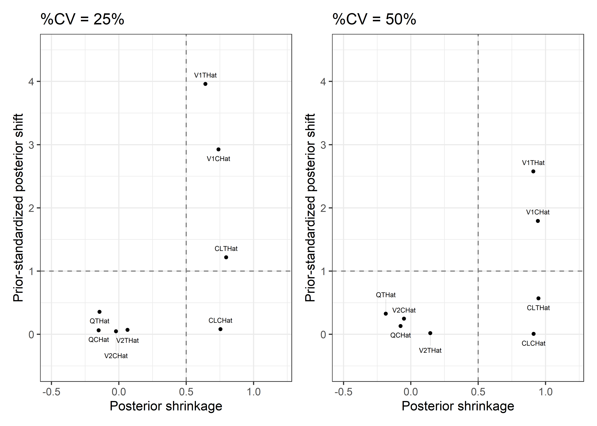</p>
</div>
</div>
</section>
</section>
<section id="comp-vs-2-comp" class="level1">
<h1>1 comp vs 2 comp</h1>
<div class="cell" data-hash="ceftaz-analysis-bayes_stan_sensitivity_cache/html/one-two-comp_b9969c06f756d03f17cc201b8095cb2b">
<details>
<summary>Code</summary>
<div class="sourceCode cell-code" id="cb69"><pre class="sourceCode r code-with-copy"><code class="sourceCode r"><span id="cb69-1"><a href="#cb69-1" aria-hidden="true" tabindex="-1"></a>draws_post <span class="ot">&lt;-</span> posterior<span class="sc">::</span><span class="fu">as_draws_matrix</span>(</span>
<span id="cb69-2"><a href="#cb69-2" aria-hidden="true" tabindex="-1"></a>  mod_to_plot2<span class="sc">$</span><span class="fu">draws</span>(<span class="at">variables =</span> pars)</span>
<span id="cb69-3"><a href="#cb69-3" aria-hidden="true" tabindex="-1"></a>)</span>
<span id="cb69-4"><a href="#cb69-4" aria-hidden="true" tabindex="-1"></a></span>
<span id="cb69-5"><a href="#cb69-5" aria-hidden="true" tabindex="-1"></a>draws_post_slopes <span class="ot">&lt;-</span> <span class="fu">as.data.frame</span>(draws_post) <span class="sc">%&gt;%</span></span>
<span id="cb69-6"><a href="#cb69-6" aria-hidden="true" tabindex="-1"></a><span class="fu">mutate</span>(<span class="at">k12C =</span> QCHat<span class="sc">/</span>V1CHat,</span>
<span id="cb69-7"><a href="#cb69-7" aria-hidden="true" tabindex="-1"></a><span class="at">k21C =</span> QCHat<span class="sc">/</span>V2CHat,</span>
<span id="cb69-8"><a href="#cb69-8" aria-hidden="true" tabindex="-1"></a><span class="at">k10C =</span> CLCHat<span class="sc">/</span>V1CHat,</span>
<span id="cb69-9"><a href="#cb69-9" aria-hidden="true" tabindex="-1"></a><span class="at">betaC =</span> <span class="fl">0.5</span><span class="sc">*</span>(k12C<span class="sc">+</span>k21C<span class="sc">+</span>k10C<span class="sc">-</span><span class="fu">sqrt</span>((k12C<span class="sc">+</span>k21C<span class="sc">+</span>k10C)<span class="sc">^</span><span class="dv">2-4</span><span class="sc">*</span>k21C<span class="sc">*</span>k10C)),</span>
<span id="cb69-10"><a href="#cb69-10" aria-hidden="true" tabindex="-1"></a><span class="at">alphaC =</span> k21C<span class="sc">*</span>k10C<span class="sc">/</span>betaC,</span>
<span id="cb69-11"><a href="#cb69-11" aria-hidden="true" tabindex="-1"></a><span class="at">k12T =</span> QTHat<span class="sc">/</span>V1THat,</span>
<span id="cb69-12"><a href="#cb69-12" aria-hidden="true" tabindex="-1"></a><span class="at">k21T =</span> QCHat<span class="sc">/</span>V2CHat,</span>
<span id="cb69-13"><a href="#cb69-13" aria-hidden="true" tabindex="-1"></a><span class="at">k10T =</span> CLTHat<span class="sc">/</span>V1THat,</span>
<span id="cb69-14"><a href="#cb69-14" aria-hidden="true" tabindex="-1"></a><span class="at">betaT =</span> <span class="fl">0.5</span><span class="sc">*</span>(k12T<span class="sc">+</span>k21T<span class="sc">+</span>k10T<span class="sc">-</span><span class="fu">sqrt</span>((k12T<span class="sc">+</span>k21T<span class="sc">+</span>k10T)<span class="sc">^</span><span class="dv">2-4</span><span class="sc">*</span>k21T<span class="sc">*</span>k10T)),</span>
<span id="cb69-15"><a href="#cb69-15" aria-hidden="true" tabindex="-1"></a><span class="at">alphaT =</span> k21T<span class="sc">*</span>k10T<span class="sc">/</span>betaT) <span class="sc">%&gt;%</span></span>
<span id="cb69-16"><a href="#cb69-16" aria-hidden="true" tabindex="-1"></a>  <span class="fu">select</span>(alphaC,betaC,alphaT,betaT) <span class="sc">%&gt;%</span></span>
<span id="cb69-17"><a href="#cb69-17" aria-hidden="true" tabindex="-1"></a>  <span class="fu">mutate</span>(<span class="at">ratioC =</span> alphaC<span class="sc">/</span>betaC,<span class="at">ratioT =</span> alphaT<span class="sc">/</span>betaT )</span>
<span id="cb69-18"><a href="#cb69-18" aria-hidden="true" tabindex="-1"></a></span>
<span id="cb69-19"><a href="#cb69-19" aria-hidden="true" tabindex="-1"></a>draws_post_slopes <span class="sc">%&gt;%</span></span>
<span id="cb69-20"><a href="#cb69-20" aria-hidden="true" tabindex="-1"></a>  <span class="fu">pivot_longer</span>(</span>
<span id="cb69-21"><a href="#cb69-21" aria-hidden="true" tabindex="-1"></a>    <span class="at">cols =</span> <span class="fu">c</span>(ratioC, ratioT),</span>
<span id="cb69-22"><a href="#cb69-22" aria-hidden="true" tabindex="-1"></a>    <span class="at">names_to =</span> <span class="st">"Drug"</span>,</span>
<span id="cb69-23"><a href="#cb69-23" aria-hidden="true" tabindex="-1"></a>    <span class="at">values_to =</span> <span class="st">"Ratio"</span></span>
<span id="cb69-24"><a href="#cb69-24" aria-hidden="true" tabindex="-1"></a>  ) <span class="sc">%&gt;%</span></span>
<span id="cb69-25"><a href="#cb69-25" aria-hidden="true" tabindex="-1"></a>  <span class="fu">ggplot</span>(<span class="fu">aes</span>(<span class="at">x =</span> Ratio, <span class="at">color =</span> Drug, <span class="at">fill =</span> Drug)) <span class="sc">+</span></span>
<span id="cb69-26"><a href="#cb69-26" aria-hidden="true" tabindex="-1"></a>  <span class="fu">geom_density</span>(<span class="at">alpha =</span> <span class="fl">0.15</span>, <span class="at">linewidth =</span> <span class="fl">1.1</span>) <span class="sc">+</span></span>
<span id="cb69-27"><a href="#cb69-27" aria-hidden="true" tabindex="-1"></a>  <span class="fu">scale_color_manual</span>(</span>
<span id="cb69-28"><a href="#cb69-28" aria-hidden="true" tabindex="-1"></a>    <span class="at">values =</span> <span class="fu">c</span>(<span class="at">ratioC =</span> <span class="st">"#0072B2"</span>, <span class="at">ratioT =</span> <span class="st">"#D55E00"</span>),</span>
<span id="cb69-29"><a href="#cb69-29" aria-hidden="true" tabindex="-1"></a>    <span class="at">labels =</span> <span class="fu">c</span>(<span class="at">ratioC =</span> <span class="st">"Ceftolozam"</span>, <span class="at">ratioT =</span> <span class="st">"Tazobactam"</span>)</span>
<span id="cb69-30"><a href="#cb69-30" aria-hidden="true" tabindex="-1"></a>  ) <span class="sc">+</span></span>
<span id="cb69-31"><a href="#cb69-31" aria-hidden="true" tabindex="-1"></a>  <span class="fu">scale_fill_manual</span>(</span>
<span id="cb69-32"><a href="#cb69-32" aria-hidden="true" tabindex="-1"></a>    <span class="at">values =</span> <span class="fu">c</span>(<span class="at">ratioC =</span> <span class="st">"#0072B2"</span>, <span class="at">ratioT =</span> <span class="st">"#D55E00"</span>),</span>
<span id="cb69-33"><a href="#cb69-33" aria-hidden="true" tabindex="-1"></a>    <span class="at">labels =</span> <span class="fu">c</span>(<span class="at">ratioC =</span> <span class="st">"Ceftolozam"</span>, <span class="at">ratioT =</span> <span class="st">"Tazobactam"</span>)</span>
<span id="cb69-34"><a href="#cb69-34" aria-hidden="true" tabindex="-1"></a>  ) <span class="sc">+</span></span>
<span id="cb69-35"><a href="#cb69-35" aria-hidden="true" tabindex="-1"></a>  <span class="fu">labs</span>(</span>
<span id="cb69-36"><a href="#cb69-36" aria-hidden="true" tabindex="-1"></a>    <span class="at">x =</span> <span class="st">"Alpha/beta ratio"</span>,</span>
<span id="cb69-37"><a href="#cb69-37" aria-hidden="true" tabindex="-1"></a>    <span class="at">y =</span> <span class="st">"Posterior density"</span>,</span>
<span id="cb69-38"><a href="#cb69-38" aria-hidden="true" tabindex="-1"></a>    <span class="at">color =</span> <span class="cn">NULL</span>,</span>
<span id="cb69-39"><a href="#cb69-39" aria-hidden="true" tabindex="-1"></a>    <span class="at">fill =</span> <span class="cn">NULL</span></span>
<span id="cb69-40"><a href="#cb69-40" aria-hidden="true" tabindex="-1"></a>  ) <span class="sc">+</span></span>
<span id="cb69-41"><a href="#cb69-41" aria-hidden="true" tabindex="-1"></a>  <span class="fu">theme_classic</span>(<span class="at">base_size =</span> <span class="dv">13</span>) <span class="sc">+</span></span>
<span id="cb69-42"><a href="#cb69-42" aria-hidden="true" tabindex="-1"></a>  <span class="fu">theme</span>(<span class="at">legend.position =</span> <span class="st">"top"</span>)</span></code><button title="Copy to Clipboard" class="code-copy-button"><i class="bi"></i></button></pre></div>
</details>
<div class="cell-output-display">
<p>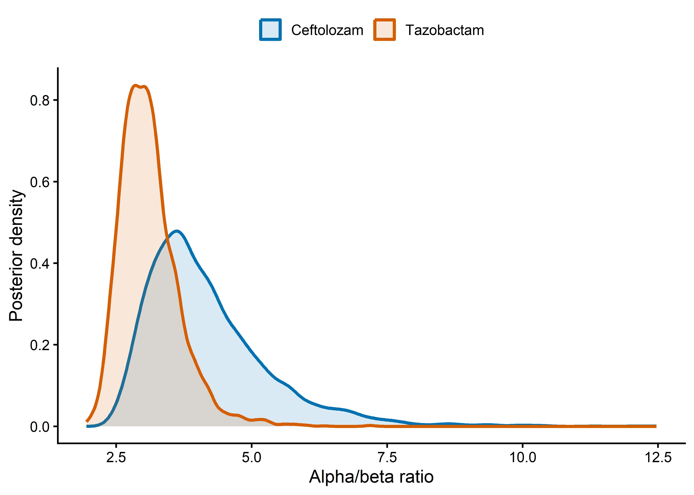</p>
</div>
</div>
<section id="session-info" class="level2">
<h2 class="anchored" data-anchor-id="session-info">Session Info</h2>
<div class="cell" data-hash="ceftaz-analysis-bayes_stan_sensitivity_cache/html/sessioninfo_ef256590156cb44c6c4f7a962fec06b0">
<details>
<summary>Code</summary>
<div class="sourceCode cell-code" id="cb70"><pre class="sourceCode r code-with-copy"><code class="sourceCode r"><span id="cb70-1"><a href="#cb70-1" aria-hidden="true" tabindex="-1"></a><span class="fu">sessionInfo</span>()</span></code><button title="Copy to Clipboard" class="code-copy-button"><i class="bi"></i></button></pre></div>
</details>
<div class="cell-output cell-output-stdout">
<pre><code>R version 4.5.0 (2025-04-11 ucrt)
Platform: x86_64-w64-mingw32/x64
Running under: Windows 11 x64 (build 26300)

Matrix products: default
  LAPACK version 3.12.1

locale:
[1] LC_COLLATE=Polish_Poland.utf8  LC_CTYPE=Polish_Poland.utf8   
[3] LC_MONETARY=Polish_Poland.utf8 LC_NUMERIC=C                  
[5] LC_TIME=Polish_Poland.utf8    

time zone: Europe/Warsaw
tzcode source: internal

attached base packages:
[1] parallel  stats     graphics  grDevices datasets  utils     methods  
[8] base     

other attached packages:
 [1] posterior_1.7.0      conflicted_1.2.0     PKNCA_0.12.1        
 [4] MESS_0.6.0           simpar_0.1.1         rlang_1.1.7         
 [7] furrr_0.3.1          future_1.70.0        tidybayes_3.0.7.9000
[10] loo_2.9.0            magick_2.9.1         yaml_2.3.12         
[13] magrittr_2.0.4       cowplot_1.2.0        gridExtra_2.3       
[16] cmdstanr_0.9.0.9000  nmrec_0.5.1          pmtables_0.10.1.9000
[19] scales_1.4.0         here_1.0.2           whisker_0.4.1       
[22] glue_1.8.0           stable_1.1.7         rmutil_1.1.10       
[25] lubridate_1.9.5      forcats_1.0.1        stringr_1.6.0       
[28] purrr_1.2.1          readr_2.2.0          tidyr_1.3.2         
[31] tibble_3.3.1         tidyverse_2.0.0      data.table_1.18.2.1 
[34] knitr_1.51           naniar_1.1.0         pmplots_0.5.2.9000  
[37] vpc_1.2.4            mrggsave_0.4.7       mrgsolve_1.8.0.9000 
[40] patchwork_1.3.2      ggplot2_4.0.2        dplyr_1.2.0         
[43] bayesplot_1.15.0     bbr.bayes_0.4.0      bbr_1.15.0          
[46] pracma_2.4.6        

loaded via a namespace (and not attached):
 [1] RColorBrewer_1.1-3      geeM_0.10.1             tensorA_0.36.2.1       
 [4] rstudioapi_0.18.0       jsonlite_2.0.0          farver_2.1.2           
 [7] rmarkdown_2.30          ragg_1.5.2              geepack_1.3.13         
[10] fs_2.0.1                vctrs_0.7.2             memoise_2.0.1          
[13] askpass_1.2.1           htmltools_0.5.9         distributional_0.7.0   
[16] haven_2.5.5             broom_1.0.12            gridGraphics_0.5-1     
[19] parallelly_1.46.1       htmlwidgets_1.6.4       pdftools_3.7.0         
[22] plyr_1.8.9              cachem_1.1.0            lifecycle_1.0.5        
[25] pkgconfig_2.0.3         Matrix_1.6-5            R6_2.6.1               
[28] fastmap_1.2.0           digest_0.6.39           GGally_2.4.0           
[31] ps_1.9.3                rprojroot_2.1.1         textshaping_1.0.5      
[34] labeling_0.4.3          timechange_0.4.0        mgcv_1.9-1             
[37] abind_1.4-8             compiler_4.5.0          fontquiver_0.2.1       
[40] withr_3.0.2             S7_0.2.1                backports_1.5.0        
[43] ggstats_0.13.0          MASS_7.3-60.0.1         tools_4.5.0            
[46] otel_0.2.0              visdat_0.6.0            clipr_0.8.0            
[49] callr_3.7.6             nlme_3.1-168            grid_4.5.0             
[52] ggformula_1.0.1         checkmate_2.3.4         reshape2_1.4.5         
[55] generics_0.1.4          diffobj_0.3.6           gtable_0.3.6           
[58] labelled_2.16.0         tzdb_0.5.0              hms_1.1.4              
[61] utf8_1.2.6              pillar_1.11.1           ggdist_3.3.3           
[64] splines_4.5.0           lattice_0.22-9          renv_1.2.0             
[67] tidyselect_1.2.1        fontLiberation_0.1.0    fontBitstreamVera_0.1.1
[70] arrayhelpers_1.1-0      xfun_0.62               mosaicCore_0.9.5       
[73] matrixStats_1.5.0       stringi_1.8.7           qpdf_1.4.1             
[76] evaluate_1.0.5          codetools_0.2-20        gdtools_0.5.0          
[79] cli_3.6.5               systemfonts_1.3.2       processx_3.8.6         
[82] Rcpp_1.1.2              globals_0.19.1          coda_0.19-4.1          
[85] svUnit_1.0.8            assertthat_0.2.1        listenv_0.10.1         
[88] ggiraph_0.9.6           ggridges_0.5.7          crayon_1.5.3           </code></pre>
</div>
</div>
</section>
</section>

</main>
<!-- /main column -->
<script id="quarto-html-after-body" type="application/javascript">
window.document.addEventListener("DOMContentLoaded", function (event) {
  const toggleBodyColorMode = (bsSheetEl) => {
    const mode = bsSheetEl.getAttribute("data-mode");
    const bodyEl = window.document.querySelector("body");
    if (mode === "dark") {
      bodyEl.classList.add("quarto-dark");
      bodyEl.classList.remove("quarto-light");
    } else {
      bodyEl.classList.add("quarto-light");
      bodyEl.classList.remove("quarto-dark");
    }
  }
  const toggleBodyColorPrimary = () => {
    const bsSheetEl = window.document.querySelector("link#quarto-bootstrap");
    if (bsSheetEl) {
      toggleBodyColorMode(bsSheetEl);
    }
  }
  toggleBodyColorPrimary();  
  const icon = "";
  const anchorJS = new window.AnchorJS();
  anchorJS.options = {
    placement: 'right',
    icon: icon
  };
  anchorJS.add('.anchored');
  const isCodeAnnotation = (el) => {
    for (const clz of el.classList) {
      if (clz.startsWith('code-annotation-')) {                     
        return true;
      }
    }
    return false;
  }
  const clipboard = new window.ClipboardJS('.code-copy-button', {
    text: function(trigger) {
      const codeEl = trigger.previousElementSibling.cloneNode(true);
      for (const childEl of codeEl.children) {
        if (isCodeAnnotation(childEl)) {
          childEl.remove();
        }
      }
      return codeEl.innerText;
    }
  });
  clipboard.on('success', function(e) {
    // button target
    const button = e.trigger;
    // don't keep focus
    button.blur();
    // flash "checked"
    button.classList.add('code-copy-button-checked');
    var currentTitle = button.getAttribute("title");
    button.setAttribute("title", "Copied!");
    let tooltip;
    if (window.bootstrap) {
      button.setAttribute("data-bs-toggle", "tooltip");
      button.setAttribute("data-bs-placement", "left");
      button.setAttribute("data-bs-title", "Copied!");
      tooltip = new bootstrap.Tooltip(button, 
        { trigger: "manual", 
          customClass: "code-copy-button-tooltip",
          offset: [0, -8]});
      tooltip.show();    
    }
    setTimeout(function() {
      if (tooltip) {
        tooltip.hide();
        button.removeAttribute("data-bs-title");
        button.removeAttribute("data-bs-toggle");
        button.removeAttribute("data-bs-placement");
      }
      button.setAttribute("title", currentTitle);
      button.classList.remove('code-copy-button-checked');
    }, 1000);
    // clear code selection
    e.clearSelection();
  });
  function tippyHover(el, contentFn) {
    const config = {
      allowHTML: true,
      content: contentFn,
      maxWidth: 500,
      delay: 100,
      arrow: false,
      appendTo: function(el) {
          return el.parentElement;
      },
      interactive: true,
      interactiveBorder: 10,
      theme: 'quarto',
      placement: 'bottom-start'
    };
    window.tippy(el, config); 
  }
  const noterefs = window.document.querySelectorAll('a[role="doc-noteref"]');
  for (var i=0; i<noterefs.length; i++) {
    const ref = noterefs[i];
    tippyHover(ref, function() {
      // use id or data attribute instead here
      let href = ref.getAttribute('data-footnote-href') || ref.getAttribute('href');
      try { href = new URL(href).hash; } catch {}
      const id = href.replace(/^#\/?/, "");
      const note = window.document.getElementById(id);
      return note.innerHTML;
    });
  }
      let selectedAnnoteEl;
      const selectorForAnnotation = ( cell, annotation) => {
        let cellAttr = 'data-code-cell="' + cell + '"';
        let lineAttr = 'data-code-annotation="' +  annotation + '"';
        const selector = 'span[' + cellAttr + '][' + lineAttr + ']';
        return selector;
      }
      const selectCodeLines = (annoteEl) => {
        const doc = window.document;
        const targetCell = annoteEl.getAttribute("data-target-cell");
        const targetAnnotation = annoteEl.getAttribute("data-target-annotation");
        const annoteSpan = window.document.querySelector(selectorForAnnotation(targetCell, targetAnnotation));
        const lines = annoteSpan.getAttribute("data-code-lines").split(",");
        const lineIds = lines.map((line) => {
          return targetCell + "-" + line;
        })
        let top = null;
        let height = null;
        let parent = null;
        if (lineIds.length > 0) {
            //compute the position of the single el (top and bottom and make a div)
            const el = window.document.getElementById(lineIds[0]);
            top = el.offsetTop;
            height = el.offsetHeight;
            parent = el.parentElement.parentElement;
          if (lineIds.length > 1) {
            const lastEl = window.document.getElementById(lineIds[lineIds.length - 1]);
            const bottom = lastEl.offsetTop + lastEl.offsetHeight;
            height = bottom - top;
          }
          if (top !== null && height !== null && parent !== null) {
            // cook up a div (if necessary) and position it 
            let div = window.document.getElementById("code-annotation-line-highlight");
            if (div === null) {
              div = window.document.createElement("div");
              div.setAttribute("id", "code-annotation-line-highlight");
              div.style.position = 'absolute';
              parent.appendChild(div);
            }
            div.style.top = top - 2 + "px";
            div.style.height = height + 4 + "px";
            let gutterDiv = window.document.getElementById("code-annotation-line-highlight-gutter");
            if (gutterDiv === null) {
              gutterDiv = window.document.createElement("div");
              gutterDiv.setAttribute("id", "code-annotation-line-highlight-gutter");
              gutterDiv.style.position = 'absolute';
              const codeCell = window.document.getElementById(targetCell);
              const gutter = codeCell.querySelector('.code-annotation-gutter');
              gutter.appendChild(gutterDiv);
            }
            gutterDiv.style.top = top - 2 + "px";
            gutterDiv.style.height = height + 4 + "px";
          }
          selectedAnnoteEl = annoteEl;
        }
      };
      const unselectCodeLines = () => {
        const elementsIds = ["code-annotation-line-highlight", "code-annotation-line-highlight-gutter"];
        elementsIds.forEach((elId) => {
          const div = window.document.getElementById(elId);
          if (div) {
            div.remove();
          }
        });
        selectedAnnoteEl = undefined;
      };
      // Attach click handler to the DT
      const annoteDls = window.document.querySelectorAll('dt[data-target-cell]');
      for (const annoteDlNode of annoteDls) {
        annoteDlNode.addEventListener('click', (event) => {
          const clickedEl = event.target;
          if (clickedEl !== selectedAnnoteEl) {
            unselectCodeLines();
            const activeEl = window.document.querySelector('dt[data-target-cell].code-annotation-active');
            if (activeEl) {
              activeEl.classList.remove('code-annotation-active');
            }
            selectCodeLines(clickedEl);
            clickedEl.classList.add('code-annotation-active');
          } else {
            // Unselect the line
            unselectCodeLines();
            clickedEl.classList.remove('code-annotation-active');
          }
        });
      }
  const findCites = (el) => {
    const parentEl = el.parentElement;
    if (parentEl) {
      const cites = parentEl.dataset.cites;
      if (cites) {
        return {
          el,
          cites: cites.split(' ')
        };
      } else {
        return findCites(el.parentElement)
      }
    } else {
      return undefined;
    }
  };
  var bibliorefs = window.document.querySelectorAll('a[role="doc-biblioref"]');
  for (var i=0; i<bibliorefs.length; i++) {
    const ref = bibliorefs[i];
    const citeInfo = findCites(ref);
    if (citeInfo) {
      tippyHover(citeInfo.el, function() {
        var popup = window.document.createElement('div');
        citeInfo.cites.forEach(function(cite) {
          var citeDiv = window.document.createElement('div');
          citeDiv.classList.add('hanging-indent');
          citeDiv.classList.add('csl-entry');
          var biblioDiv = window.document.getElementById('ref-' + cite);
          if (biblioDiv) {
            citeDiv.innerHTML = biblioDiv.innerHTML;
          }
          popup.appendChild(citeDiv);
        });
        return popup.innerHTML;
      });
    }
  }
});
</script>
</div> <!-- /content -->


</body></html>